Single-omics analysis: Method development lung cancer patient cohort
Qian-Wu Liao
Last updated: 2023-04-25
Checks: 6 1
Knit directory:
SMART-CARE_LungCancer_MethodDev/
This reproducible R Markdown analysis was created with workflowr (version 1.7.0). The Checks tab describes the reproducibility checks that were applied when the results were created. The Past versions tab lists the development history.
Great! Since the R Markdown file has been committed to the Git repository, you know the exact version of the code that produced these results.
Great job! The global environment was empty. Objects defined in the global environment can affect the analysis in your R Markdown file in unknown ways. For reproduciblity it’s best to always run the code in an empty environment.
The command set.seed(20230425) was run prior to running
the code in the R Markdown file. Setting a seed ensures that any results
that rely on randomness, e.g. subsampling or permutations, are
reproducible.
Great job! Recording the operating system, R version, and package versions is critical for reproducibility.
Nice! There were no cached chunks for this analysis, so you can be confident that you successfully produced the results during this run.
Using absolute paths to the files within your workflowr project makes it difficult for you and others to run your code on a different machine. Change the absolute path(s) below to the suggested relative path(s) to make your code more reproducible.
| absolute | relative |
|---|---|
| /Users/qianwu/Desktop/SMART-CARE_LungCancer_MethodDev | . |
Great! You are using Git for version control. Tracking code development and connecting the code version to the results is critical for reproducibility.
The results in this page were generated with repository version dc86335. See the Past versions tab to see a history of the changes made to the R Markdown and HTML files.
Note that you need to be careful to ensure that all relevant files for
the analysis have been committed to Git prior to generating the results
(you can use wflow_publish or
wflow_git_commit). workflowr only checks the R Markdown
file, but you know if there are other scripts or data files that it
depends on. Below is the status of the Git repository when the results
were generated:
Ignored files:
Ignored: .DS_Store
Ignored: data/.DS_Store
Untracked files:
Untracked: code/feature_selection.Rmd
Untracked: code/misc.R
Untracked: code/mofa_downstream_analysis.Rmd
Untracked: code/mofa_factors_investigation.Rmd
Untracked: code/workflowr_commands.R
Untracked: data/AG_Hell/
Untracked: data/AG_Hopf/
Untracked: data/AG_Krijgsveld/
Untracked: data/corrMetaPlasmaRes_Hopf_Hell.rds
Untracked: data/corrMetaTissueRes_Hopf_Hell.rds
Untracked: data/mofa/
Note that any generated files, e.g. HTML, png, CSS, etc., are not included in this status report because it is ok for generated content to have uncommitted changes.
These are the previous versions of the repository in which changes were
made to the R Markdown
(analysis/preliminary_analysis_untargeted.Rmd) and HTML
(docs/preliminary_analysis_untargeted.html) files. If
you’ve configured a remote Git repository (see
?wflow_git_remote), click on the hyperlinks in the table
below to view the files as they were in that past version.
| File | Version | Author | Date | Message |
|---|---|---|---|---|
| Rmd | e54886f | LiaoQianWu | 2023-04-25 | Finalize scripts about data preprocessing, preliminary analysis, comparisons between targeted and untargeted |
Description: Conduct univariate (association test) and multivariate (PCA) analyses on individual datasets, Plasma and Tissue Untargeted Metabolomics and Lipidomics generated by AG Hopf, to take an initial look at power of each dataset in terms of predicting patient cancer recurrences and also potentially to provide evidence for latter multi-omics analyses. Association test between each feature (metabolite and lipid level) and cancer recurrence was performed to capture significant features that can separate recurrence and non-recurrence patients. PCA was performed to see if there is any significant PC that can separate recurrence and non-recurrence patients.
Load libraries
library('SummarizedExperiment')
library('proDA')
library('ggrepel')
library('ggfortify')
library('openxlsx')
library('tidyverse')
# Load user-defined functions
source('./code/misc.R')Plasma Metabolomics
Based on PCA result obtained by analyzing whole Plasma Metabolomics dataset that includes Baseline and Follow-up samples, we found that PCA mainly captures source of variation in time points, the unwanted variation. Besides, we attempt to identify biomarkers that can predict whether patients WILL suffer from cancer recurrence or not. Therefore, we decided to analyze Baseline and Follow-up samples separately.
# Load normalized data
metaPlasmaVsn <- readRDS('./data/AG_Hopf/metaPlasmaVsn.rds')
# Retrieve feature information for making significant feature table
featInfo <- tibble::as_tibble(rowData(metaPlasmaVsn), rownames = 'Feature')
# Load Plasma Metabolomics data from AG Hell for changing sample names
metaPlasma_Hell <- readRDS('./data/AG_Hell/metaPlasmaNorm.rds')
smpNames <- tibble::as_tibble(colData(metaPlasma_Hell), rownames = 'Sample') %>%
dplyr::select(Sample, Identifier) %>%
dplyr::mutate(Identifier = stringr::str_remove(Identifier, '_3$'))
# Change sample names
colnames(metaPlasmaVsn) <- plyr::mapvalues(colnames(metaPlasmaVsn),
from = smpNames$Identifier,
to = smpNames$Sample)
# Add time point information into data
timePoint <- as.data.frame(colData(metaPlasmaVsn)) %>%
dplyr::mutate(TimePoint = dplyr::case_when(
Condition == 'Baseline' ~ 'Baseline',
Condition != 'Baseline' ~ '2 years later')) %>%
dplyr::select(TimePoint)
colData(metaPlasmaVsn)['TimePoint'] <- timePoint
# Perform analysis
metaPlasmaRes <- SOA(metaPlasmaVsn, fac = c('Recurrence', 'TimePoint'))
tPCASigRes <- metaPlasmaRes$tPCASigRes
pcaRes <- metaPlasmaRes$pcaRes
pcTab <- metaPlasmaRes$pcTabDisplay associations between learned PCs (Var1) and factors (Var2). Basically t-test was performed to test significance of difference between two groups, e.g., recurrence and non-recurrence patient groups or baseline and follow-up sample groups.
# Display PCs of interest
tPCASigRes Var1 Var2 pVal tStats pValAdj
1 PC1 TimePoint 1.632262e-06 5.666559 0.000130581
2 PC39 Recurrence 5.965099e-03 -2.913024 0.238603961
3 PC14 Recurrence 2.903911e-02 -2.268876 0.551701927
4 PC12 Recurrence 3.229151e-02 2.222293 0.551701927
5 PC4 Recurrence 3.448137e-02 2.193230 0.551701927
6 PC8 TimePoint 4.372371e-02 2.086211 0.582982748PC1 explains most variation in data and separates patient samples by time points.
# ggfortify
# ggplot2::autoplot(pcaRes, x = 1, y =2)
ggplot(pcTab, aes(x=PC1, y=PC2, col=TimePoint, shape=Recurrence, group=Patient)) +
geom_point(size = 4) +
labs(x = 'PC1 (27.76%)', y = 'PC2 (13.77%)') +
geom_line(col = 'grey50', linetype = 'dashed') +
scale_color_discrete(name = 'Time point',
labels = c('Baseline', '2 years later')) +
theme(axis.title = element_text(size = 16),
legend.title = element_text(size = 14), legend.text = element_text(size = 12))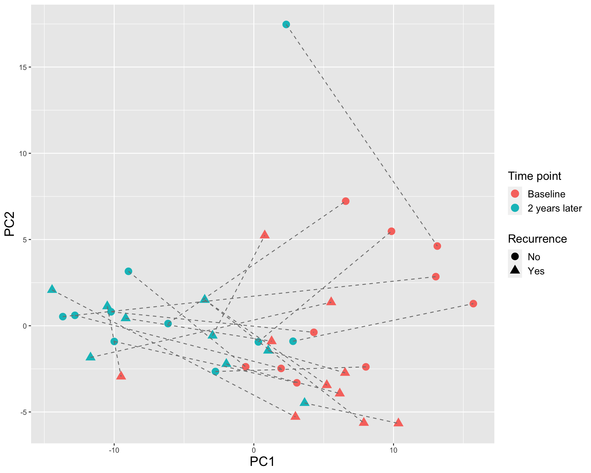
# ggsave(paste0(result_path, 'AG_Hopf/metaPlasma_pca.png'), device = 'png', dpi = 400)Display variance explained by each PC
# Display proportion of total variance captured by all PCs explained by each PC
varExplained <- pcaRes$sdev^2 / sum(pcaRes$sdev^2)
PC <- paste0('PC', seq(length(varExplained)))
varTab <- data.frame(PC = factor(PC, levels = PC),
Var_explained = varExplained)
ggplot(varTab, aes(x=PC, y=Var_explained*100)) +
geom_col() +
labs(x = '', y = 'Variance explained (%)') +
theme(axis.text.x = element_text(angle = 90, hjust = 1, vjust = 0.5))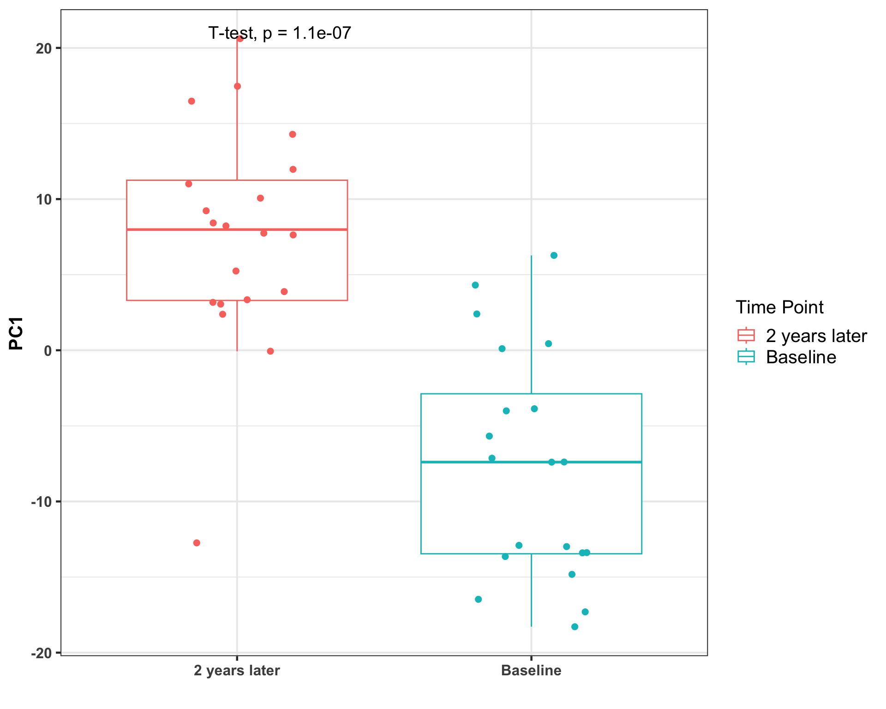
Baseline samples
Display significant associations between features (Var1) and cancer recurrence (Var2) and observe molecular signatures in input data through heatmap. Note that features in heatmap are ordered by their t-statistics.
# Subset baseline samples
smpBaseIdx <- which(colData(metaPlasmaVsn)$Condition == 'Baseline')
metaBase <- metaPlasmaVsn[, smpBaseIdx]
# Perform analysis
metaBaseRes <- SOA(metaBase, fac = 'Recurrence', num_feats = 30)
datMat <- metaBaseRes$data
smpAnno <- metaBaseRes$smpMetadata
tFeatSigRes <- metaBaseRes$tFeatSigRes
tPCASigRes <- metaBaseRes$tPCASigRes
pcaRes <- metaBaseRes$pcaRes
pcTab <- metaBaseRes$pcTab
pcTopFeatTab <- metaBaseRes$pcTopFeatTab
# Display features that can significantly separate recurrence and non-recurrence
# patients
sigFeatTab <- dplyr::mutate(tFeatSigRes, m.z_RT = plyr::mapvalues(Var1,
from = featInfo$Feature,
to = featInfo$m.z_RT,
warn_missing = F))
sigFeatTab Var1 Var2 pVal tStats pValAdj m.z_RT
1 Feature178 Recurrence 0.0007980631 -4.022906 0.4434660 609.0866/6.18
2 Feature353 Recurrence 0.0008706058 4.396575 0.4434660 587.58745/9.22
3 Feature704 Recurrence 0.0012489189 -3.821902 0.4434660 182.06337/6.18
4 Feature740 Recurrence 0.0012625366 -4.186186 0.4434660 229.07941/7.09
5 Feature177 Recurrence 0.0019463803 -3.622699 0.4580837 593.09179/6.18
6 Feature869 Recurrence 0.0019562294 4.157589 0.4580837 703.57433/8.03
7 Feature8 Recurrence 0.0027409435 3.468654 0.5340122 352.3388/0.66
8 Feature705 Recurrence 0.0030406387 -3.421859 0.5340122 198.05801/6.18
9 Feature661 Recurrence 0.0052670364 -3.172889 0.8010214 235.08384/5.75
10 Feature303 Recurrence 0.0060832538 3.107162 0.8010214 326.30364/8.81
11 Feature687 Recurrence 0.0066081929 -3.069297 0.8010214 198.05806/6.18
12 Feature521 Recurrence 0.0068414643 -3.053403 0.8010214 323.04905/3.68
13 Feature226 Recurrence 0.0092311613 2.915490 0.8941941 498.39944/8.09
14 Feature519 Recurrence 0.0092875073 -2.912675 0.8941941 301.06701/3.67
15 Feature1266 Recurrence 0.0095465566 2.969539 0.8941941 782.56887/9.19
16 Feature1038 Recurrence 0.0109317614 2.837060 0.9157689 445.36728/8.44
17 Feature805 Recurrence 0.0120229855 2.792711 0.9157689 489.3394/7.64
18 Feature851 Recurrence 0.0130465039 -2.754498 0.9157689 701.55886/7.91
19 Feature149 Recurrence 0.0145930253 2.701888 0.9157689 520.07519/5.65
20 Feature1402 Recurrence 0.0159995754 -2.714105 0.9157689 758.56907/9.71
21 Feature726 Recurrence 0.0162196745 2.652015 0.9157689 544.3386/6.95
22 Feature194 Recurrence 0.0163727615 2.647569 0.9157689 387.27074/7.19
23 Feature1039 Recurrence 0.0165821793 2.641552 0.9157689 432.31045/8.44
24 Feature855 Recurrence 0.0173770847 2.634900 0.9157689 352.33882/7.94
25 Feature897 Recurrence 0.0191681865 2.572669 0.9157689 410.34683/8.12
26 Feature107 Recurrence 0.0229941521 2.485413 0.9157689 563.0834/4.29
27 Feature774 Recurrence 0.0230653543 -2.483923 0.9157689 365.13554/7.45
28 Feature227 Recurrence 0.0234620704 2.504473 0.9157689 353.34143/8.1
29 Feature1000 Recurrence 0.0237221294 2.470378 0.9157689 313.27355/8.39
30 Feature775 Recurrence 0.0243118842 -2.458513 0.9157689 365.13527/7.47
31 Feature391 Recurrence 0.0248365534 -2.448182 0.9157689 514.87484/0.8
32 Feature1198 Recurrence 0.0250022360 2.458007 0.9157689 806.56946/8.89
33 Feature743 Recurrence 0.0253535284 -2.451154 0.9157689 229.07914/7.19
34 Feature931 Recurrence 0.0256552917 2.823198 0.9157689 810.5989/8.16
35 Feature223 Recurrence 0.0257236681 2.431172 0.9157689 547.38137/8.07
36 Feature236 Recurrence 0.0259514774 2.572135 0.9157689 261.13087/8.16
37 Feature165 Recurrence 0.0272189970 2.403706 0.9157689 511.10385/5.76
38 Feature224 Recurrence 0.0272404954 2.403321 0.9157689 542.42597/8.07
39 Feature896 Recurrence 0.0279323206 2.391098 0.9157689 415.30245/8.13
40 Feature23 Recurrence 0.0295523698 2.375514 0.9157689 294.00315/0.92
41 Feature806 Recurrence 0.0296830932 2.361383 0.9157689 401.28682/7.68
42 Feature1022 Recurrence 0.0302832622 2.376812 0.9157689 124.08715/8.45
43 Feature1258 Recurrence 0.0307441502 -2.402115 0.9157689 229.07934/9.16
44 Feature130 Recurrence 0.0312694498 -2.335838 0.9157689 265.09994/4.79
45 Feature918 Recurrence 0.0323035922 -2.448990 0.9157689 221.11055/8.15
46 Feature329 Recurrence 0.0329333470 -2.409657 0.9157689 431.35188/9.18
47 Feature807 Recurrence 0.0334692354 2.302340 0.9157689 445.31292/7.66
48 Feature725 Recurrence 0.0334918730 -2.638593 0.9157689 137.10721/6.82
49 Feature34 Recurrence 0.0344614798 -2.287894 0.9157689 94.06531/1.33
50 Feature475 Recurrence 0.0346112815 -2.285747 0.9157689 262.88792/1.45
51 Feature706 Recurrence 0.0362423174 -2.262907 0.9157689 333.16691/6.25
52 Feature450 Recurrence 0.0365224750 -2.259080 0.9157689 235.09213/1.26
53 Feature670 Recurrence 0.0370569034 2.251854 0.9157689 519.07254/5.82
54 Feature815 Recurrence 0.0380811644 -2.238270 0.9157689 365.13591/7.69
55 Feature312 Recurrence 0.0386941860 2.230300 0.9157689 241.17951/8.88
56 Feature1211 Recurrence 0.0391243890 -2.411940 0.9157689 548.55784/9
57 Feature1230 Recurrence 0.0391860919 2.234249 0.9157689 151.12292/9.11
58 Feature712 Recurrence 0.0404822510 2.207700 0.9157689 270.31558/6.43
59 Feature39 Recurrence 0.0409219811 -2.202283 0.9157689 309.09255/1.35
60 Feature617 Recurrence 0.0411847619 -2.199071 0.9157689 188.068/5.51
61 Feature381 Recurrence 0.0419104705 -2.190298 0.9157689 229.07928/0.35
62 Feature895 Recurrence 0.0423709564 2.184803 0.9157689 371.2763/8.14
63 Feature273 Recurrence 0.0436655905 2.179285 0.9157689 228.06679/8.45
64 Feature562 Recurrence 0.0440586102 2.165122 0.9157689 567.11437/5.12
65 Feature645 Recurrence 0.0443508099 -2.161785 0.9157689 261.10959/5.64
66 Feature95 Recurrence 0.0443613942 -2.161665 0.9157689 208.00944/3.67
67 Feature1092 Recurrence 0.0453942095 2.232645 0.9157689 194.11745/8.53
68 Feature1041 Recurrence 0.0470590569 2.151467 0.9157689 267.26773/8.45
69 Feature1209 Recurrence 0.0478190253 -2.143141 0.9157689 492.49474/8.99
70 Feature1028 Recurrence 0.0492752029 -2.117342 0.9157689 229.07921/8.43
71 Feature709 Recurrence 0.0493079480 2.108031 0.9157689 211.08631/6.35# Plot molecular signatures in input data
# Order features according to t-statistics
featOrder <- dplyr::arrange(tFeatSigRes, dplyr::desc(tStats))$Var1
# Arrange samples to make same groups in same clusters
smpOrder <- c(which(smpAnno$Recurrence == 'No'),
which(smpAnno$Recurrence == 'Yes'))
# Prepare recurrence table for annotating samples in heatmap
smpRecur <- dplyr::select(smpAnno, Sample, Recurrence) %>%
tibble::column_to_rownames('Sample')
pheatmap::pheatmap(datMat[featOrder, smpOrder],
annotation_col = smpRecur,
color = colorRampPalette(c('navy', 'white', 'red'))(100),
cluster_rows = F, cluster_cols = F, show_rownames = F,
scale = 'row', #row scaling is across columns
main = 'Baseline plasma metabolomics')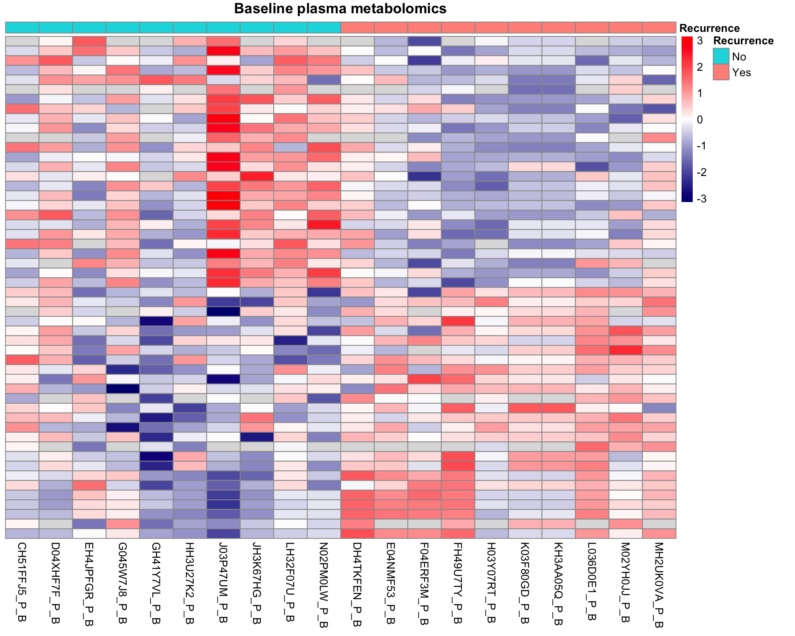
Owing to missing values, there might be a situation that only few observations in sample groups, resulting in unreliable t-statistics. (check e.g., Tumor Tissue Metabolomics) We used probabilistic dropout model to account for missing values and identify differentially abundant entities that are significantly associated with cancer recurrence. Note that features in heatmap are ordered by their t-statistics.
# Fit linear probabilistic dropout model to normalized data
fit <- proDA::proDA(datMat, design = ~ smpAnno$Recurrence)
# fit
# Check coefficient names for Parameter 'contrast' in proDA::test_diff()
# proDA::result_names(fit)
# Identify significant differentially abundant entities
all_proDAMetaBaseRes <- proDA::test_diff(fit,
contrast = Intercept + `smpAnno$RecurrenceYes` - Intercept,
sort_by = 'pval')
proDAMetaBaseRes <- dplyr::select(all_proDAMetaBaseRes,
-c(diff, se, df, avg_abundance, n_approx)) %>%
dplyr::filter(pval < 0.05) %>%
dplyr::mutate(MZ_RT = plyr::mapvalues(name,
from = featInfo$Feature,
to = featInfo$m.z_RT,
warn_missing = F))
proDAMetaBaseRes name pval adj_pval t_statistic n_obs MZ_RT
1 Feature353 0.000833637 0.6128980 -4.003323 14 587.58745/9.22
2 Feature178 0.001226410 0.6128980 3.830063 20 609.0866/6.18
3 Feature704 0.001318062 0.6128980 3.797723 20 182.06337/6.18
4 Feature177 0.002016645 0.6128980 3.606759 20 593.09179/6.18
5 Feature869 0.002179580 0.6128980 -3.571826 12 703.57433/8.03
6 Feature705 0.003049623 0.6307637 3.420528 20 198.05801/6.18
7 Feature8 0.003140360 0.6307637 -3.407294 20 352.3388/0.66
8 Feature740 0.003745677 0.6583028 3.327624 14 229.07941/7.09
9 Feature661 0.005512194 0.7902410 3.152157 20 235.08384/5.75
10 Feature1266 0.005620491 0.7902410 -3.143285 17 782.56887/9.19
11 Feature687 0.007140403 0.8654227 3.033789 20 198.05806/6.18
12 Feature303 0.007386253 0.8654227 -3.018247 20 326.30364/8.81
13 Feature521 0.008738295 0.9450802 2.940844 20 323.04905/3.68
14 Feature226 0.009769408 0.9811277 -2.889255 20 498.39944/8.09
15 Feature519 0.011714600 0.9993142 2.804839 20 301.06701/3.67
16 Feature1038 0.012031180 0.9993142 -2.792393 20 445.36728/8.44
17 Feature149 0.014696709 0.9993142 -2.698554 20 520.07519/5.65
18 Feature851 0.016273335 0.9993142 2.650452 20 701.55886/7.91
19 Feature1039 0.016685028 0.9993142 -2.638623 20 432.31045/8.44
20 Feature194 0.017936098 0.9993142 -2.604309 20 387.27074/7.19
21 Feature726 0.018119109 0.9993142 -2.599482 20 544.3386/6.95
22 Feature897 0.019489234 0.9993142 -2.564741 20 410.34683/8.12
23 Feature805 0.021818512 0.9993142 -2.510667 20 489.3394/7.64
24 Feature1000 0.024135937 0.9993142 -2.462024 20 313.27355/8.39
25 Feature107 0.024358756 0.9993142 -2.457582 20 563.0834/4.29
26 Feature775 0.024488191 0.9993142 2.455018 20 365.13527/7.47
27 Feature1198 0.024828745 0.9993142 -2.448334 19 806.56946/8.89
28 Feature855 0.026652777 0.9993142 -2.413936 19 352.33882/7.94
29 Feature329 0.026787577 0.9993142 2.411482 14 431.35188/9.18
30 Feature224 0.027880185 0.9993142 -2.392009 20 542.42597/8.07
31 Feature774 0.028931929 0.9993142 2.373926 20 365.13554/7.45
32 Feature223 0.029059740 0.9993142 -2.371771 20 547.38137/8.07
33 Feature227 0.029753430 0.9993142 -2.360224 18 353.34143/8.1
34 Feature165 0.030845581 0.9993142 -2.342543 20 511.10385/5.76
35 Feature1022 0.031361145 0.9993142 -2.334398 18 124.08715/8.45
36 Feature896 0.033209731 0.9993142 -2.306184 20 415.30245/8.13
37 Feature931 0.033461971 0.9993142 -2.302447 9 810.5989/8.16
38 Feature23 0.034481891 0.9993142 -2.287601 19 294.00315/0.92
39 Feature292 0.034580284 0.9993142 -2.286191 7 220.14426/8.62
40 Feature1258 0.035399502 0.9993142 2.274588 16 229.07934/9.16
41 Feature962 0.035705805 0.9993142 -2.270313 14 197.10716/8.26
42 Feature918 0.036097890 0.9993142 2.264891 13 221.11055/8.15
43 Feature450 0.037426671 0.9993142 2.246910 20 235.09213/1.26
44 Feature670 0.037679518 0.9993142 -2.243556 20 519.07254/5.82
45 Feature130 0.038924000 0.9993142 2.227342 20 265.09994/4.79
46 Feature807 0.040553410 0.9993142 -2.206820 20 445.31292/7.66
47 Feature34 0.041382127 0.9993142 2.196671 20 94.06531/1.33
48 Feature806 0.041510499 0.9993142 -2.195116 20 401.28682/7.68
49 Feature381 0.041999551 0.9993142 2.189231 20 229.07928/0.35
50 Feature562 0.045652644 0.9993142 -2.147157 20 567.11437/5.12
51 Feature617 0.046944046 0.9993142 2.133018 20 188.068/5.51
52 Feature39 0.047801452 0.9993142 2.123825 20 309.09255/1.35
53 Feature1209 0.048105562 0.9993142 2.120601 18 492.49474/8.99
54 Feature236 0.048302803 0.9993142 -2.118519 13 261.13087/8.16
55 Feature817 0.048313935 0.9993142 2.118402 16 701.55848/7.72
56 Feature743 0.048646833 0.9993142 2.114907 19 229.07914/7.19
57 Feature1041 0.048932734 0.9993142 -2.111923 18 267.26773/8.45
58 Feature815 0.048999156 0.9993142 2.111232 20 365.13591/7.69
59 Feature645 0.049037717 0.9993142 2.110831 20 261.10959/5.64
60 Feature712 0.049493731 0.9993142 -2.106114 20 270.31558/6.43
61 Feature958 0.049744245 0.9993142 -2.103539 20 313.27324/8.23
62 Feature1230 0.049796070 0.9993142 -2.103007 19 151.12292/9.11# Plot molecular signatures in input data
# Order features according to t-statistics
featOrder <- dplyr::arrange(proDAMetaBaseRes, dplyr::desc(t_statistic))$name
pheatmap::pheatmap(datMat[featOrder, smpOrder],
annotation_col = smpRecur,
color = colorRampPalette(c('navy', 'white', 'red'))(100),
cluster_rows = F, cluster_cols = F, show_rownames = F,
scale = 'row', main = 'Baseline plasma metabolomics (proDA)')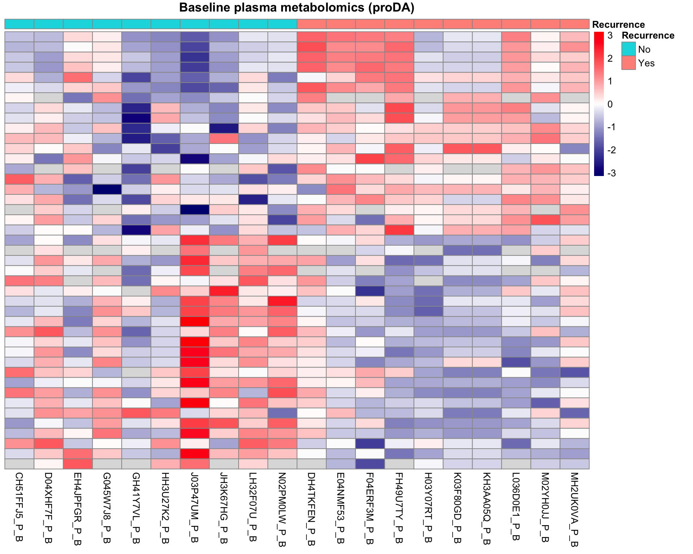
# Store table in list for creating Excel file
sigFeatSheet <- list(BasePlasmaMetab_Feats = proDAMetaBaseRes)ovl <- intersect(metaBaseRes$tFeatSigRes$Var1, proDAMetaBaseRes$name)
cat('The following features', paste0('(n =', length(ovl), ')'),
'are tested significant by both methods:\n', ovl)The following features (n =58) are tested significant by both methods:
Feature178 Feature353 Feature704 Feature740 Feature177 Feature869 Feature8 Feature705 Feature661 Feature303 Feature687 Feature521 Feature226 Feature519 Feature1266 Feature1038 Feature805 Feature851 Feature149 Feature726 Feature194 Feature1039 Feature855 Feature897 Feature107 Feature774 Feature227 Feature1000 Feature775 Feature1198 Feature743 Feature931 Feature223 Feature236 Feature165 Feature224 Feature896 Feature23 Feature806 Feature1022 Feature1258 Feature130 Feature918 Feature329 Feature807 Feature34 Feature450 Feature670 Feature815 Feature1230 Feature712 Feature39 Feature617 Feature381 Feature562 Feature645 Feature1041 Feature1209-> Most of Recurrence-related features captured by proDA are
covered in regular significance test.
Visualize data of top 6 significant features
# Visualize data of top 6 significant features
topSigFeats <- proDAMetaBaseRes$name[1:6]
topSigFeatData <- tibble::as_tibble(datMat[topSigFeats,], rownames = 'Feature') %>%
tidyr::pivot_longer(cols = -'Feature',
names_to = 'Sample', values_to = 'Abundance') %>%
dplyr::mutate(Feature = factor(Feature, levels = topSigFeats)) %>%
dplyr::left_join(smpAnno, by = 'Sample')
ggplot(topSigFeatData, aes(x=Recurrence, y=Abundance, col=Recurrence, fill=Recurrence)) +
geom_boxplot(alpha = 0.5, outlier.shape = NA) +
geom_jitter(position = position_jitter(0.2), size = 2, show.legend = F) +
scale_color_manual(values=c('#00BFC4', '#F8766D')) +
scale_fill_manual(values=c('#00BFC4', '#F8766D')) +
facet_wrap(vars(Feature), scales = 'free') +
ggpubr::stat_compare_means(method = 't.test', paired = F,
method.args = list(var.equal = T),
show.legend = F)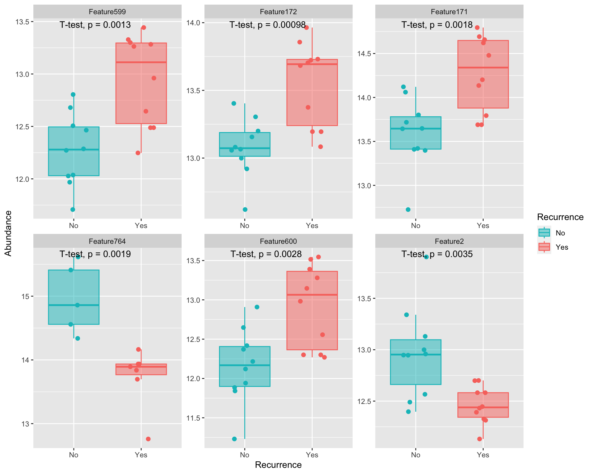
Display significant associations between PCs (Var1) and cancer recurrence (Var2)
# Display PCs that can significantly separate recurrence and non-recurrence
# patients
tPCASigRes Var1 Var2 pVal tStats pValAdj
1 PC5 Recurrence 0.03600889 2.266117 0.470386
2 PC19 Recurrence 0.04896661 -2.111571 0.470386# Display proportion of total variance captured by all PCs explained by each PC
varExplained <- pcaRes$sdev^2 / sum(pcaRes$sdev^2)
PC <- paste0('PC', seq(length(varExplained)))
varTab <- data.frame(PC = factor(PC, levels = PC),
Var_explained = varExplained)
ggplot(varTab, aes(x=PC, y=Var_explained*100)) +
geom_col() +
labs(x = '', y = 'Variance explained (%)',
title = 'Baseline plasma metabolomics')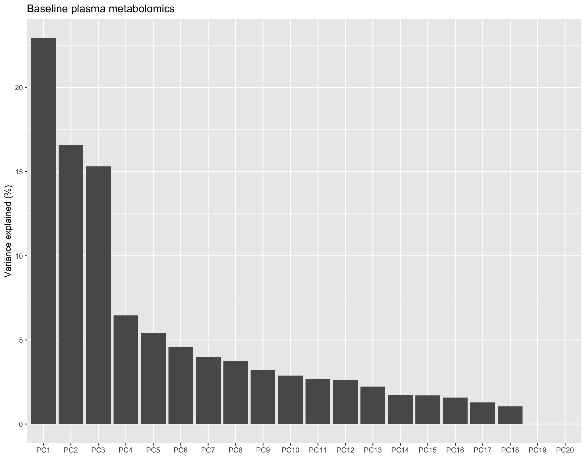
PC5 potentially separates recurrence and non-recurrence patients.
# ggplot2::autoplot(pcaRes, x = 1, y = 5)
# Visualize PCs
ggplot(pcTab, aes(x=Recurrence, y=PC5, col=Recurrence, fill=Recurrence)) +
geom_boxplot(alpha = 0.5, outlier.shape = NA) +
geom_jitter(position = position_jitter(0.2), size = 2, show.legend = F) +
labs(y = 'PC5 (5.4%)', title = 'Baseline plasma metabolomics') +
scale_color_manual(values=c('#00BFC4', '#F8766D')) +
scale_fill_manual(values=c('#00BFC4', '#F8766D')) +
ggpubr::stat_compare_means(method = 't.test', paired = F, size = 6,
method.args = list(var.equal = T), hjust = 0.65,
show.legend = F) +
theme(axis.title = element_text(size = 16),
legend.title = element_text(size = 14), legend.text = element_text(size = 12))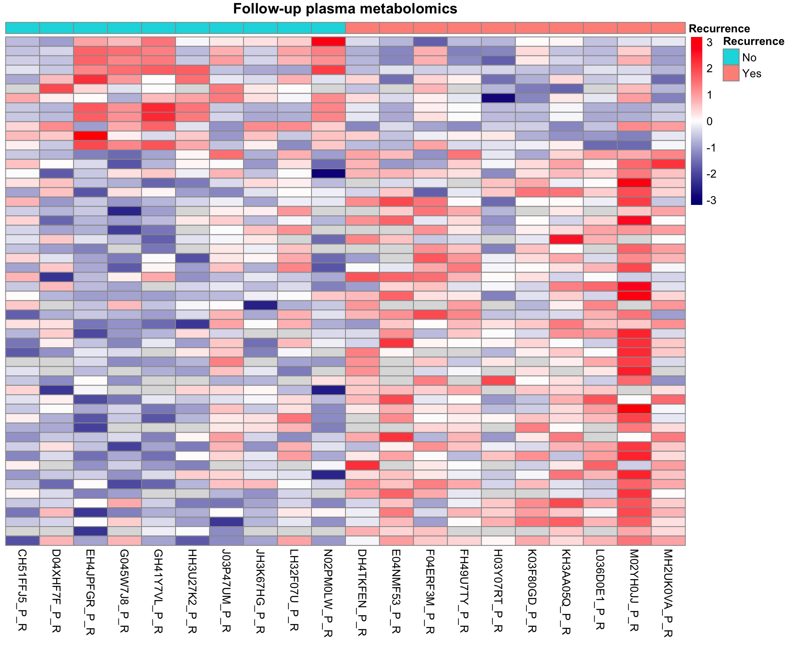
# ggsave(paste0(result_path, 'AG_Hopf/metaPlasma_baseline_pca_pc5.png'), device = 'png', dpi = 400)Plot molecular signatures captured by PC5 in input data. We took a look at top 20 features with highest loadings and observed metabolite levels of these top features through heatmap. Note that features in heatmap are ordered by their loadings. There is no single feature that can decently hint if patients will suffer cancer recurrence or not, which means each of these top features contributes a bit to explaining variation between recurrence and non-recurrence patients.
# Plot molecular signatures in input data
# Extract top features with highest loadings
topFeats <- pcTopFeatTab$PC5$Feature[1:20]
# Order features by loadings
topFeatsIdx <- sapply(topFeats, function(feat) {which(rownames(datMat) == feat)})
a <- pheatmap::pheatmap(datMat[topFeatsIdx, smpOrder],
annotation_col = smpRecur,
color = colorRampPalette(c('navy', 'white', 'red'))(100),
cluster_rows = F, cluster_cols = F,
scale = 'row', main = 'Baseline plasma metabolomics - PC5')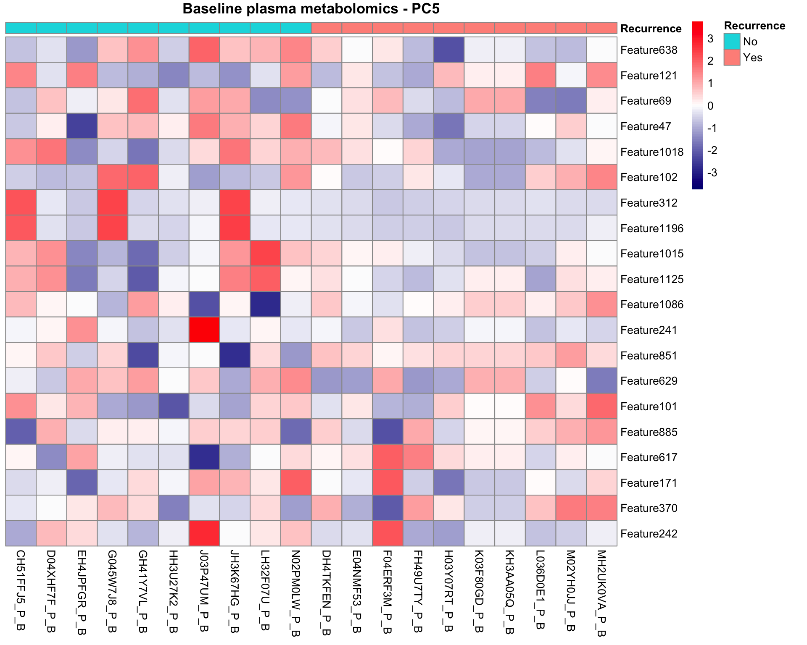
# ggsave(paste0(result_path, 'AG_Hopf/metaPlasma_baseline_heatmap_pc5.png'), a, device = 'png', dpi = 400)Display top features that build the PC5
# Display top features with highest loadings of PC of interest
pcTopFeats <- dplyr::left_join(pcTopFeatTab$PC5, featInfo, by = 'Feature')
pcTopFeats Feature Loading m.z_RT
1 Feature638 0.19016985 229.07917/5.64
2 Feature121 0.16121514 202.21625/4.52
3 Feature69 0.15929240 195.08752/3.2
4 Feature47 0.15394546 481.98127/1.37
5 Feature1018 0.14427578 332.29462/8.42
6 Feature102 0.13731846 257.96496/3.99
7 Feature312 0.12350495 241.17951/8.88
8 Feature1196 0.12277107 315.25248/8.88
9 Feature1015 0.11859545 663.58098/8.43
10 Feature1125 0.11611384 358.31036/8.61
11 Feature1086 0.11491053 360.326/8.51
12 Feature241 0.11389699 545.53979/8.18
13 Feature851 0.10777038 701.55886/7.91
14 Feature629 0.10473185 431.15645/5.56
15 Feature101 0.10404023 174.18509/3.89
16 Feature885 0.10353929 685.43464/8.09
17 Feature617 0.09619910 188.068/5.51
18 Feature171 0.09489016 291.0008/6.05
19 Feature370 0.09291588 226.95094/9.75
20 Feature242 0.09170738 561.5702/8.18
21 Feature1167 0.09155548 358.31029/8.78
22 Feature149 0.08921927 520.07519/5.65
23 Feature670 0.08767143 519.07254/5.82
24 Feature61 0.08652209 305.10639/3.03
25 Feature1006 0.08575512 341.30449/8.36
26 Feature146 0.08517717 738.1346/5.64
27 Feature107 0.08417863 563.0834/4.29
28 Feature31 0.08131610 317.05587/1.28
29 Feature705 0.08060834 198.05801/6.18
30 Feature1039 0.07992625 432.31045/8.44# Store table in list for creating Excel file
sigFeatSheet <- append(sigFeatSheet, list(BasePlasmaMetab_PC5 = pcTopFeats))Follow-up samples
Display significant associations between features (Var1) and cancer recurrence (Var2) and observe molecular signatures in input data through heatmap. Note that features in heatmap are ordered by their t-statistics.
# Subset follow-up samples
smpFoloIdx <- which(colData(metaPlasmaVsn)$Condition != 'Baseline')
metaFolo <- metaPlasmaVsn[, smpFoloIdx]
# Perform analysis
metaFoloRes <- SOA(metaFolo, fac = 'Recurrence', num_feats = 30)
datMat <- metaFoloRes$data
smpAnno <- metaFoloRes$smpMetadata
tFeatSigRes <- metaFoloRes$tFeatSigRes
tPCASigRes <- metaFoloRes$tPCASigRes
pcaRes <- metaFoloRes$pcaRes
pcTab <- metaFoloRes$pcTab
pcTopFeatTab <- metaFoloRes$pcTopFeatTab
# Display features that can significantly separate recurrence and non-recurrence
# patients
sigFeatTab <- dplyr::mutate(tFeatSigRes, m.z_RT = plyr::mapvalues(Var1,
from = featInfo$Feature,
to = featInfo$m.z_RT,
warn_missing = F))
sigFeatTab Var1 Var2 pVal tStats pValAdj m.z_RT
1 Feature1066 Recurrence 0.001646724 -3.697796 0.714679 210.08713/8.46
2 Feature1022 Recurrence 0.002579876 -3.495941 0.714679 124.08715/8.45
3 Feature195 Recurrence 0.003982417 -3.299874 0.714679 200.20072/7.22
4 Feature1005 Recurrence 0.004088817 -3.287926 0.714679 466.29777/8.4
5 Feature1007 Recurrence 0.005953241 -3.117032 0.714679 313.27329/8.39
6 Feature1119 Recurrence 0.006811789 -3.261333 0.714679 196.10773/8.62
7 Feature1016 Recurrence 0.007092099 -3.036904 0.714679 221.1105/8.45
8 Feature680 Recurrence 0.008224009 -3.113884 0.714679 229.07944/6.04
9 Feature884 Recurrence 0.008926888 -3.432120 0.714679 369.35105/8.06
10 Feature457 Recurrence 0.009253745 -2.914360 0.714679 346.00917/1.29
11 Feature1191 Recurrence 0.009345533 -2.930140 0.714679 784.58559/8.83
12 Feature923 Recurrence 0.010429535 -2.858922 0.714679 168.07665/8.16
13 Feature1146 Recurrence 0.010946686 -3.005867 0.714679 369.35147/8.63
14 Feature934 Recurrence 0.010957690 -2.835957 0.714679 207.12361/8.17
15 Feature84 Recurrence 0.012723629 2.766233 0.714679 261.03582/3.55
16 Feature629 Recurrence 0.013651818 2.733230 0.714679 431.15645/5.56
17 Feature1345 Recurrence 0.016136498 2.838104 0.714679 369.35065/9.44
18 Feature974 Recurrence 0.016724658 -2.818092 0.714679 151.123/8.3
19 Feature1149 Recurrence 0.016860181 -2.649442 0.714679 280.26311/8.66
20 Feature1133 Recurrence 0.016986956 -2.921621 0.714679 549.54073/8.64
21 Feature1247 Recurrence 0.017321359 -2.847595 0.714679 94.06525/9.2
22 Feature1164 Recurrence 0.018366187 -2.593037 0.714679 786.60045/8.77
23 Feature1256 Recurrence 0.018737888 -2.583494 0.714679 761.58761/9.18
24 Feature461 Recurrence 0.019145904 -2.588083 0.714679 367.99125/1.31
25 Feature624 Recurrence 0.019171557 2.572585 0.714679 453.13787/5.56
26 Feature641 Recurrence 0.020213844 -2.547293 0.714679 253.05713/5.64
27 Feature924 Recurrence 0.020613509 -2.552265 0.714679 168.07674/8.18
28 Feature274 Recurrence 0.020958002 -2.544210 0.714679 219.09487/8.46
29 Feature740 Recurrence 0.021726095 -2.581969 0.714679 229.07941/7.09
30 Feature919 Recurrence 0.022599442 -2.493754 0.714679 165.11334/8.15
31 Feature186 Recurrence 0.022953540 2.486265 0.714679 241.17313/6.66
32 Feature659 Recurrence 0.023968229 -2.465394 0.714679 128.05286/5.73
33 Feature1070 Recurrence 0.024011672 -2.464519 0.714679 168.07669/8.46
34 Feature1158 Recurrence 0.025951268 2.454245 0.714679 703.57523/8.71
35 Feature982 Recurrence 0.025963621 -2.489992 0.714679 429.37212/8.27
36 Feature39 Recurrence 0.027401039 -2.400459 0.714679 309.09255/1.35
37 Feature988 Recurrence 0.027904073 -2.500221 0.714679 165.11347/8.3
38 Feature1153 Recurrence 0.028211039 2.386253 0.714679 300.28959/8.67
39 Feature907 Recurrence 0.028626350 -2.460791 0.714679 365.13559/8.13
40 Feature632 Recurrence 0.028936783 -2.373844 0.714679 760.58319/5.61
41 Feature276 Recurrence 0.029976064 -2.381947 0.714679 279.09334/8.47
42 Feature500 Recurrence 0.030029753 2.355694 0.714679 267.07925/3.44
43 Feature303 Recurrence 0.030376376 2.350067 0.714679 326.30364/8.81
44 Feature1081 Recurrence 0.030386621 2.453703 0.714679 782.56886/8.49
45 Feature1088 Recurrence 0.030427595 -2.361026 0.714679 212.11794/8.52
46 Feature1013 Recurrence 0.030929284 -2.366170 0.714679 217.10418/8.44
47 Feature856 Recurrence 0.031211998 -2.468363 0.714679 166.09773/7.95
48 Feature706 Recurrence 0.031291828 -2.335486 0.714679 333.16691/6.25
49 Feature1102 Recurrence 0.032016884 -2.324217 0.714679 280.26315/8.57
50 Feature55 Recurrence 0.032318640 2.319597 0.714679 181.07178/2.81
51 Feature769 Recurrence 0.033462733 -2.313636 0.714679 226.21643/7.48
52 Feature995 Recurrence 0.034856170 -2.355662 0.714679 369.35262/8.34
53 Feature905 Recurrence 0.035973333 -2.266608 0.714679 137.10733/8.13
54 Feature980 Recurrence 0.037142044 -2.302948 0.714679 166.09733/8.3
55 Feature1060 Recurrence 0.037926323 -2.240302 0.714679 207.12372/8.45
56 Feature1047 Recurrence 0.038444856 2.233527 0.714679 465.44783/8.45
57 Feature1391 Recurrence 0.038583063 -2.267297 0.714679 548.55704/9.65
58 Feature1255 Recurrence 0.040265067 -2.299073 0.714679 187.09783/9.16
59 Feature391 Recurrence 0.040333299 -2.209547 0.714679 514.87484/0.8
60 Feature703 Recurrence 0.040817790 -2.203561 0.714679 229.07916/6.18
61 Feature647 Recurrence 0.041117993 -2.199885 0.714679 94.06519/5.65
62 Feature817 Recurrence 0.041163886 -2.266106 0.714679 701.55848/7.72
63 Feature1067 Recurrence 0.041180225 -2.199126 0.714679 151.12304/8.45
64 Feature645 Recurrence 0.041666690 -2.193229 0.714679 261.10959/5.64
65 Feature967 Recurrence 0.042000799 -2.255217 0.714679 124.087/8.29
66 Feature787 Recurrence 0.043029658 -2.197799 0.714679 365.13547/7.59
67 Feature1136 Recurrence 0.043366615 -2.193774 0.714679 280.26335/8.64
68 Feature747 Recurrence 0.043615229 -2.234778 0.714679 810.59915/7.23
69 Feature578 Recurrence 0.044685241 2.157990 0.714679 310.06741/5.23
70 Feature577 Recurrence 0.044770887 2.157023 0.714679 403.12533/5.23
71 Feature989 Recurrence 0.044899498 -2.202380 0.714679 284.29422/8.31
72 Feature209 Recurrence 0.045045937 -2.153926 0.714679 675.54304/7.79
73 Feature958 Recurrence 0.045613906 -2.147587 0.714679 313.27324/8.23
74 Feature1331 Recurrence 0.046537296 -2.157256 0.714679 168.07673/9.38
75 Feature633 Recurrence 0.046863793 -2.133886 0.714679 229.07981/5.64
76 Feature780 Recurrence 0.048299215 -2.149734 0.714679 786.59924/7.54
77 Feature1159 Recurrence 0.048837876 -2.112911 0.714679 520.52724/8.73
78 Feature688 Recurrence 0.049905520 -2.101887 0.714679 94.06517/6.16# Plot molecular signatures in input data
# Order features according to t-statistics
featOrder <- dplyr::arrange(tFeatSigRes, dplyr::desc(tStats))$Var1
# Arrange samples to make same groups in same clusters
smpOrder <- c(which(smpAnno$Recurrence == 'No'),
which(smpAnno$Recurrence == 'Yes'))
# Prepare recurrence table for annotating samples in heatmap
smpRecur <- dplyr::select(smpAnno, Sample, Recurrence) %>%
tibble::column_to_rownames('Sample')
pheatmap::pheatmap(datMat[featOrder, smpOrder],
annotation_col = smpRecur,
color = colorRampPalette(c('navy', 'white', 'red'))(100),
cluster_rows = F, cluster_cols = F, show_rownames = F,
scale = 'row', main = 'Follow-up plasma metabolomics')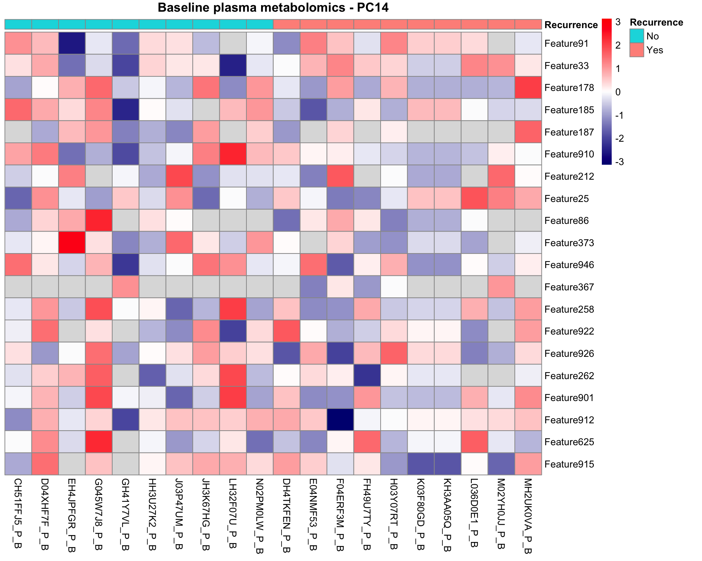
Use probabilistic dropout model to account for missing values and identify differentially abundant entities that are significantly associated with cancer recurrence. Note that features in heatmap are ordered by their t-statistics.
# Fit linear probabilistic dropout model to normalized data
fit <- proDA::proDA(datMat, design = ~ smpAnno$Recurrence)
# fit
# Check coefficient names for Parameter 'contrast' in proDA::test_diff()
# proDA::result_names(fit)
# Identify significant differentially abundant entities
all_proDAMetaFoloRes <- proDA::test_diff(fit,
contrast = Intercept + `smpAnno$RecurrenceYes` - Intercept,
sort_by = 'pval')
proDAMetaFoloRes <- dplyr::select(all_proDAMetaFoloRes,
-c(diff, se, df, avg_abundance, n_approx)) %>%
dplyr::filter(pval < 0.05) %>%
dplyr::mutate(MZ_RT = plyr::mapvalues(name,
from = featInfo$Feature,
to = featInfo$m.z_RT,
warn_missing = F))
proDAMetaFoloRes name pval adj_pval t_statistic n_obs MZ_RT
1 Feature1393 0.0003959443 0.5566977 -4.338383 5 221.11044/9.65
2 Feature1066 0.0023178127 0.8101869 3.544163 20 210.08713/8.46
3 Feature1022 0.0028848798 0.8101869 3.445580 20 124.08715/8.45
4 Feature1146 0.0033357268 0.8101869 3.380038 14 369.35147/8.63
5 Feature1005 0.0043436888 0.8101869 3.260505 20 466.29777/8.4
6 Feature1007 0.0065063356 0.8101869 3.076410 20 313.27329/8.39
7 Feature195 0.0077653436 0.8101869 2.995241 20 200.20072/7.22
8 Feature1016 0.0105875593 0.8101869 2.851936 20 221.1105/8.45
9 Feature1191 0.0108802761 0.8101869 2.839256 19 784.58559/8.83
10 Feature680 0.0127007412 0.8101869 2.767075 15 229.07944/6.04
11 Feature84 0.0133035884 0.8101869 -2.745352 20 261.03582/3.55
12 Feature923 0.0142052184 0.8101869 2.714561 20 168.07665/8.16
13 Feature1247 0.0154608556 0.8101869 2.674656 12 94.06525/9.2
14 Feature1119 0.0160576590 0.8101869 2.656763 14 196.10773/8.62
15 Feature884 0.0164857662 0.8101869 2.644313 10 369.35105/8.06
16 Feature974 0.0175168597 0.8101869 2.615548 13 151.123/8.3
17 Feature1133 0.0178628719 0.8101869 2.606254 11 549.54073/8.64
18 Feature457 0.0206472986 0.8101869 2.537136 20 346.00917/1.29
19 Feature1256 0.0207371198 0.8101869 2.535057 20 761.58761/9.18
20 Feature629 0.0209019196 0.8101869 -2.531263 20 431.15645/5.56
21 Feature461 0.0211021425 0.8101869 2.526692 19 367.99125/1.31
22 Feature1158 0.0231157089 0.8101869 -2.482872 18 703.57523/8.71
23 Feature274 0.0237478637 0.8101869 2.469855 19 219.09487/8.46
24 Feature907 0.0240490069 0.8101869 2.463768 15 365.13559/8.13
25 Feature624 0.0241147343 0.8101869 -2.462449 20 453.13787/5.56
26 Feature740 0.0256755313 0.8101869 2.432081 16 229.07941/7.09
27 Feature988 0.0258933362 0.8101869 2.427981 14 165.11347/8.3
28 Feature1164 0.0285050152 0.8101869 2.381191 20 786.60045/8.77
29 Feature919 0.0287607788 0.8101869 2.376827 20 165.11334/8.15
30 Feature1153 0.0287738880 0.8101869 -2.376604 20 300.28959/8.67
31 Feature1070 0.0293701223 0.8101869 2.366573 20 168.07669/8.46
32 Feature1149 0.0295869946 0.8101869 2.362971 19 280.26311/8.66
33 Feature995 0.0298229761 0.8101869 2.359080 15 369.35262/8.34
34 Feature303 0.0308093690 0.8101869 -2.343120 20 326.30364/8.81
35 Feature641 0.0309154483 0.8101869 2.341432 20 253.05713/5.64
36 Feature1081 0.0310665318 0.8101869 -2.339037 14 782.56886/8.49
37 Feature500 0.0317338268 0.8101869 -2.328588 20 267.07925/3.44
38 Feature934 0.0326119488 0.8101869 2.315144 20 207.12361/8.17
39 Feature1345 0.0329065429 0.8101869 -2.310709 13 369.35065/9.44
40 Feature1088 0.0329201757 0.8101869 2.310505 19 212.11794/8.52
41 Feature1331 0.0340838682 0.8101869 2.293346 18 168.07673/9.38
42 Feature1373 0.0358258202 0.8101869 -2.268648 14 151.12293/9.64
43 Feature1013 0.0368601348 0.8101869 2.254503 18 217.10418/8.44
44 Feature55 0.0377037316 0.8101869 -2.243236 20 181.07178/2.81
45 Feature186 0.0378445244 0.8101869 -2.241378 20 241.17313/6.66
46 Feature856 0.0381299254 0.8101869 2.237631 13 166.09773/7.95
47 Feature276 0.0392677461 0.8101869 2.222947 18 279.09334/8.47
48 Feature822 0.0403909218 0.8101869 -2.208832 18 343.2853/7.72
49 Feature1161 0.0410145722 0.8101869 2.201149 18 782.57045/8.76
50 Feature1391 0.0411951564 0.8101869 2.198944 17 548.55704/9.65
51 Feature1102 0.0429813911 0.8101869 2.177603 20 280.26315/8.57
52 Feature980 0.0431555321 0.8101869 2.175566 16 166.09733/8.3
53 Feature769 0.0438873797 0.8101869 2.167087 19 226.21643/7.48
54 Feature632 0.0447131972 0.8101869 2.157674 20 760.58319/5.61
55 Feature39 0.0463493092 0.8101869 2.139485 20 309.09255/1.35
56 Feature967 0.0468543742 0.8101869 2.133988 15 124.087/8.29
57 Feature787 0.0470413357 0.8101869 2.131967 18 365.13547/7.59
58 Feature703 0.0473361882 0.8101869 2.128795 20 229.07916/6.18
59 Feature958 0.0478315053 0.8101869 2.123506 20 313.27324/8.23
60 Feature817 0.0486649451 0.8101869 2.114718 15 701.55848/7.72
61 Feature924 0.0495137012 0.8101869 2.105908 19 168.07674/8.18# Plot molecular signatures in input data
# Order features according to t-statistics
featOrder <- dplyr::arrange(proDAMetaFoloRes, dplyr::desc(t_statistic))$name
pheatmap::pheatmap(datMat[featOrder, smpOrder],
annotation_col = smpRecur,
color = colorRampPalette(c('navy', 'white', 'red'))(100),
cluster_rows = F, cluster_cols = F, show_rownames = F,
scale = 'row', main = 'Follow-up plasma metabolomics (proDA)')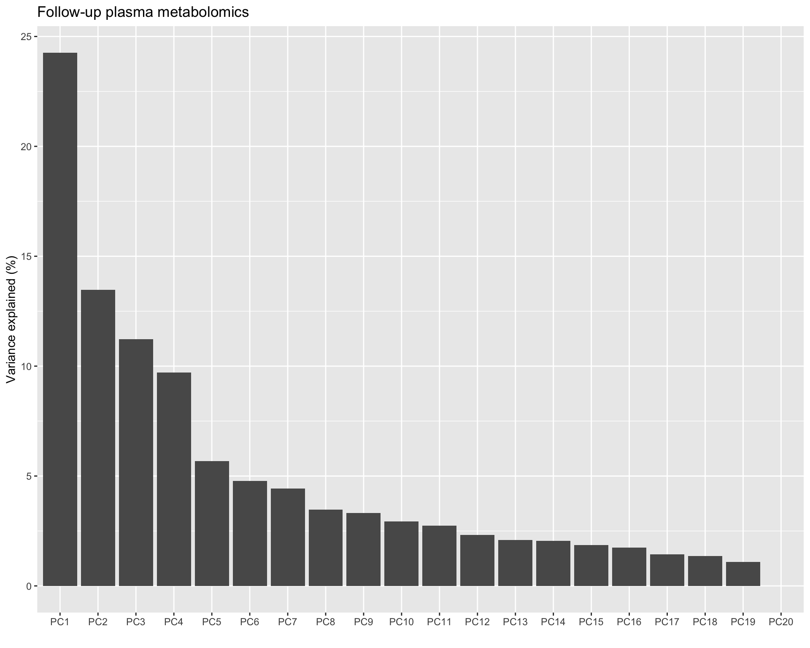
# Store table in list for creating Excel file
sigFeatSheet <- append(sigFeatSheet, list(FolloPlasmaMetab_Feats = proDAMetaFoloRes))ovl <- intersect(metaFoloRes$tFeatSigRes$Var1, proDAMetaFoloRes$name)
cat('The following features', paste0('(n =', length(ovl), ')'),
'are tested significant by both methods:\n', ovl)The following features (n =57) are tested significant by both methods:
Feature1066 Feature1022 Feature195 Feature1005 Feature1007 Feature1119 Feature1016 Feature680 Feature884 Feature457 Feature1191 Feature923 Feature1146 Feature934 Feature84 Feature629 Feature1345 Feature974 Feature1149 Feature1133 Feature1247 Feature1164 Feature1256 Feature461 Feature624 Feature641 Feature924 Feature274 Feature740 Feature919 Feature186 Feature1070 Feature1158 Feature39 Feature988 Feature1153 Feature907 Feature632 Feature276 Feature500 Feature303 Feature1081 Feature1088 Feature1013 Feature856 Feature1102 Feature55 Feature769 Feature995 Feature980 Feature1391 Feature703 Feature817 Feature967 Feature787 Feature958 Feature1331Visualize data of top 6 significant features
# Visualize data of top 6 significant features
topSigFeats <- proDAMetaFoloRes$name[2:7]
topSigFeatData <- tibble::as_tibble(datMat[topSigFeats,], rownames = 'Feature') %>%
tidyr::pivot_longer(cols = -'Feature',
names_to = 'Sample', values_to = 'Abundance') %>%
dplyr::mutate(Feature = factor(Feature, levels = topSigFeats)) %>%
dplyr::left_join(smpAnno, by = 'Sample')
ggplot(topSigFeatData, aes(x=Recurrence, y=Abundance, col=Recurrence, fill=Recurrence)) +
geom_boxplot(alpha = 0.5, outlier.shape = NA) +
geom_jitter(position = position_jitter(0.2), size = 2, show.legend = F) +
scale_color_manual(values=c('#00BFC4', '#F8766D')) +
scale_fill_manual(values=c('#00BFC4', '#F8766D')) +
facet_wrap(vars(Feature), scales = 'free') +
ggpubr::stat_compare_means(method = 't.test', paired = F,
method.args = list(var.equal = T),
show.legend = F)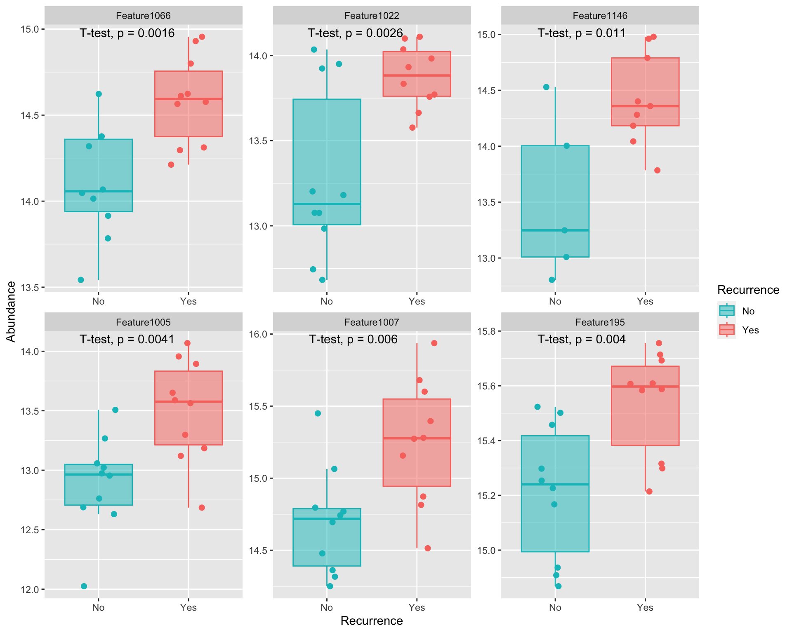
Display significant associations between PCs (Var1) and cancer recurrence (Var2)
# Display PCs that can significantly separate recurrence and non-recurrence
# patients
tPCASigRes Var1 Var2 pVal tStats pValAdj
1 PC4 Recurrence 0.004560261 -3.238419 0.09120523# Display proportion of total variance captured by all PCs explained by each PC
varExplained <- pcaRes$sdev^2 / sum(pcaRes$sdev^2)
PC <- paste0('PC', seq(length(varExplained)))
varTab <- data.frame(PC = factor(PC, levels = PC),
Var_explained = varExplained)
ggplot(varTab, aes(x=PC, y=Var_explained*100)) +
geom_col() +
labs(x = '', y = 'Variance explained (%)',
title = 'Follow-up plasma metabolomics')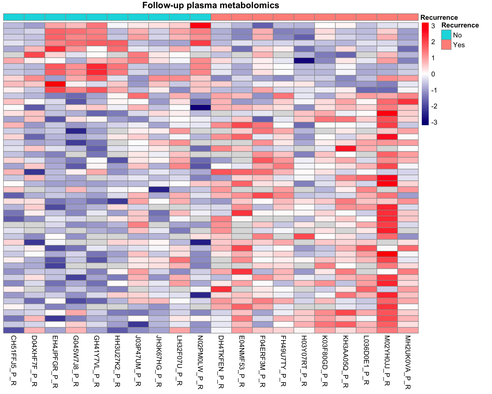
PC4 potentially separates recurrence and non-recurrence patients.
# Visualize PCs
ggplot(pcTab, aes(x=Recurrence, y=PC4, col=Recurrence, fill=Recurrence)) +
geom_boxplot(alpha = 0.5, outlier.shape = NA) +
geom_jitter(position = position_jitter(0.2), size = 2, show.legend = F) +
labs(title = 'Follow-up plasma metabolomics') +
scale_color_manual(values=c('#00BFC4', '#F8766D')) +
scale_fill_manual(values=c('#00BFC4', '#F8766D')) +
ggpubr::stat_compare_means(method = 't.test', paired = F, size = 5,
method.args = list(var.equal = T),
show.legend = F)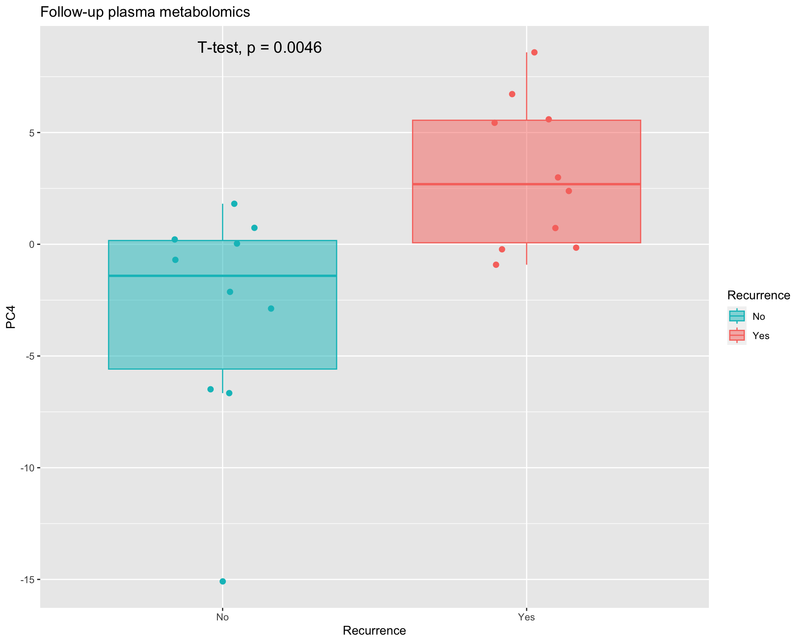
Plot molecular signatures captured by PC4 in input data. We took a look at top 20 features with highest loadings and observed metabolite levels of these top features through heatmap. Note that features in heatmap are ordered by their loadings.
# Plot molecular signatures in input data
# Extract top features with highest loadings
topFeats <- pcTopFeatTab$PC4$Feature[1:20]
# Order features by loadings
topFeatsIdx <- sapply(topFeats, function(feat) {which(rownames(datMat) == feat)})
pheatmap::pheatmap(datMat[topFeatsIdx, smpOrder],
annotation_col = smpRecur,
color = colorRampPalette(c('navy', 'white', 'red'))(100),
cluster_rows = F, cluster_cols = F,
scale = 'row', main = 'Follow-up plasma metabolomics - PC4')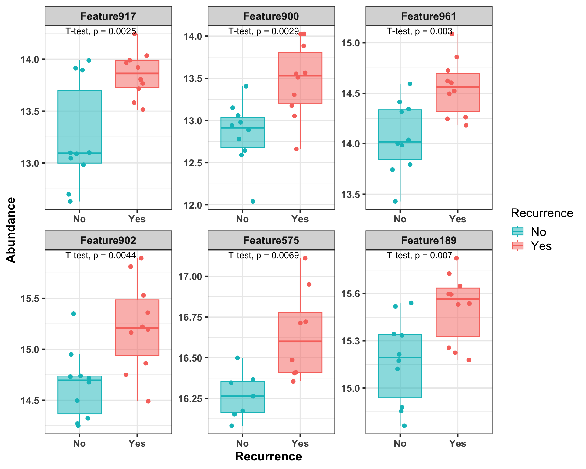
# Display top features with highest loadings of PC of interest
pcTopFeats <- dplyr::left_join(pcTopFeatTab$PC4, featInfo, by = 'Feature')
pcTopFeats Feature Loading m.z_RT
1 Feature435 0.18598917 203.0524/0.91
2 Feature1250 0.15413533 685.43524/9.16
3 Feature186 0.14824007 241.17313/6.66
4 Feature494 0.13978021 282.12667/3.11
5 Feature493 0.13745375 189.06895/3.11
6 Feature184 0.13600420 423.19858/6.44
7 Feature489 0.12585141 294.15569/3
8 Feature629 0.12242915 431.15645/5.56
9 Feature209 0.11941419 675.54304/7.79
10 Feature1031 0.11688503 369.35128/8.45
11 Feature742 0.11513299 320.25576/7.15
12 Feature495 0.11379723 292.12232/3.35
13 Feature1047 0.10855644 465.44783/8.45
14 Feature624 0.10855059 453.13787/5.56
15 Feature39 0.10695657 309.09255/1.35
16 Feature885 0.10689557 685.43464/8.09
17 Feature364 0.10555410 763.51665/9.71
18 Feature318 0.10521020 404.29387/9.12
19 Feature1360 0.09980013 663.45283/9.53
20 Feature490 0.09892547 276.14539/3.05
21 Feature359 0.09768247 380.29424/9.4
22 Feature1134 0.09733986 302.24754/8.61
23 Feature1055 0.09720520 276.23191/8.47
24 Feature1243 0.09619268 430.37772/9.15
25 Feature491 0.09566176 310.13347/3.05
26 Feature57 0.09553592 175.05344/2.94
27 Feature948 0.09457936 522.35648/8.22
28 Feature1344 0.09316357 330.27883/9.43
29 Feature836 0.09233233 320.25559/7.81
30 Feature62 0.08961890 217.07523/3.04# Store table in list for creating Excel file
sigFeatSheet <- append(sigFeatSheet, list(FolloPlasmaMetab_PC4 = pcTopFeats))Changes in time course
Differences between Follow-up and Baseline samples (Follow-up matrix
- baseline matrix):
Display significant associations between features (Var1) and cancer recurrence (Var2) and observe molecular signatures in input data through heatmap. Note that features in heatmap are ordered by their t-statistics.
# Subset baseline samples
smpBaseIdx <- which(colData(metaPlasmaVsn)$Condition == 'Baseline')
metaBase <- metaPlasmaVsn[, smpBaseIdx]
# Subset follow-up samples
smpFoloIdx <- which(colData(metaPlasmaVsn)$Condition != 'Baseline')
metaFolo <- metaPlasmaVsn[, smpFoloIdx]
# Modify column names for matching two matrices
colnames(metaBase) <- stringr::str_remove(colnames(metaBase), '_P_B')
colnames(metaFolo) <- stringr::str_remove(colnames(metaFolo), '_P_R')
# Retrieve data matrix
metaBaseMat <- SummarizedExperiment::assay(metaBase)
metaFoloMat <- SummarizedExperiment::assay(metaFolo)
# Subtract follow-up matrix by baseline matrix
if (identical(colnames(metaBaseMat), colnames(metaFoloMat)) &
identical(rownames(metaBaseMat), rownames(metaFoloMat))) {
metaPlasmaDiffMat <- metaFoloMat - metaBaseMat
} else {
print('Align samples or features first.')
}
# Retrieve samples metadata for creating SE object
colAnno <- dplyr::select(as.data.frame(colData(metaBase)), Patient, Recurrence)
metaPlasmaDiff <- SummarizedExperiment(assays = metaPlasmaDiffMat, colData = colAnno)
# Perform analysis
metaPlasmaDiffRes <- SOA(metaPlasmaDiff, fac = 'Recurrence', num_feats = 30)
datMat <- metaPlasmaDiffRes$data
smpAnno <- metaPlasmaDiffRes$smpMetadata
tFeatSigRes <- metaPlasmaDiffRes$tFeatSigRes
tPCASigRes <- metaPlasmaDiffRes$tPCASigRes
# Display features that can significantly separate recurrence and non-recurrence
# patients
sigFeatTab <- dplyr::mutate(tFeatSigRes, m.z_RT = plyr::mapvalues(Var1,
from = featInfo$Feature,
to = featInfo$m.z_RT,
warn_missing = F))
sigFeatTab Var1 Var2 pVal tStats pValAdj m.z_RT
1 Feature1022 Recurrence 0.0006213247 -4.242125 0.8667479 124.08715/8.45
2 Feature905 Recurrence 0.0018393886 -3.648102 0.8927844 137.10733/8.13
3 Feature974 Recurrence 0.0028279172 -225.118182 0.8927844 151.123/8.3
4 Feature1350 Recurrence 0.0031382580 -3.438056 0.8927844 786.60009/9.45
5 Feature272 Recurrence 0.0036540465 -3.338831 0.8927844 398.23243/8.45
6 Feature1369 Recurrence 0.0044977866 -4.414441 0.8927844 311.31227/9.59
7 Feature1007 Recurrence 0.0047022188 -3.224493 0.8927844 313.27329/8.39
8 Feature1000 Recurrence 0.0075016611 -3.011124 0.8927844 313.27355/8.39
9 Feature958 Recurrence 0.0079362635 -2.985223 0.8927844 313.27324/8.23
10 Feature952 Recurrence 0.0105124459 2.951605 0.8927844 605.60162/8.2
11 Feature457 Recurrence 0.0107591468 -2.844462 0.8927844 346.00917/1.29
12 Feature1042 Recurrence 0.0108271797 -3.061280 0.8927844 164.08184/8.44
13 Feature982 Recurrence 0.0114886634 -2.906711 0.8927844 429.37212/8.27
14 Feature550 Recurrence 0.0117830756 2.802120 0.8927844 265.06383/4.39
15 Feature1005 Recurrence 0.0125071062 -2.774263 0.8927844 466.29777/8.4
16 Feature1061 Recurrence 0.0125295615 -2.862797 0.8927844 150.06631/8.46
17 Feature924 Recurrence 0.0128328272 -2.800322 0.8927844 168.07674/8.18
18 Feature1136 Recurrence 0.0138121816 -2.787184 0.8927844 280.26335/8.64
19 Feature914 Recurrence 0.0160173632 -2.893264 0.8927844 217.10438/8.14
20 Feature608 Recurrence 0.0168436899 2.634139 0.8927844 261.10909/5.49
21 Feature1021 Recurrence 0.0174068090 -2.756028 0.8927844 205.10846/8.44
22 Feature705 Recurrence 0.0197722357 2.557855 0.8927844 198.05801/6.18
23 Feature1402 Recurrence 0.0207793637 2.660314 0.8927844 758.56907/9.71
24 Feature704 Recurrence 0.0210122503 2.528739 0.8927844 182.06337/6.18
25 Feature889 Recurrence 0.0214893926 -2.548013 0.8927844 123.09143/8.11
26 Feature1255 Recurrence 0.0225755741 -3.047800 0.8927844 187.09783/9.16
27 Feature659 Recurrence 0.0226228082 -2.493256 0.8927844 128.05286/5.73
28 Feature658 Recurrence 0.0233544132 -2.477918 0.8927844 505.10153/5.72
29 Feature1164 Recurrence 0.0235778874 -2.473323 0.8927844 786.60045/8.77
30 Feature528 Recurrence 0.0252787044 2.439634 0.8927844 148.06033/3.91
31 Feature130 Recurrence 0.0257809556 2.430092 0.8927844 265.09994/4.79
32 Feature177 Recurrence 0.0270264983 2.407161 0.8927844 593.09179/6.18
33 Feature1336 Recurrence 0.0276508889 -2.575033 0.8927844 168.07665/9.36
34 Feature84 Recurrence 0.0278787332 2.392034 0.8927844 261.03582/3.55
35 Feature1069 Recurrence 0.0279929826 -2.390039 0.8927844 137.10739/8.46
36 Feature312 Recurrence 0.0288921523 -2.374599 0.8927844 241.17951/8.88
37 Feature525 Recurrence 0.0293743459 2.366502 0.8927844 283.07437/3.91
38 Feature1038 Recurrence 0.0301045713 -2.354474 0.8927844 445.36728/8.44
39 Feature968 Recurrence 0.0309269427 -2.473531 0.8927844 168.07676/8.3
40 Feature912 Recurrence 0.0339993637 -2.369000 0.8927844 577.56676/8.16
41 Feature223 Recurrence 0.0347191710 -2.284206 0.8927844 547.38137/8.07
42 Feature640 Recurrence 0.0353239341 -2.275648 0.8927844 741.14195/5.65
43 Feature599 Recurrence 0.0364151264 2.581077 0.8927844 207.12369/5.44
44 Feature1039 Recurrence 0.0369122802 -2.253800 0.8927844 432.31045/8.44
45 Feature426 Recurrence 0.0386418718 2.638035 0.8927844 828.8044/0.8
46 Feature934 Recurrence 0.0397871992 -2.238095 0.8927844 207.12361/8.17
47 Feature1273 Recurrence 0.0401604199 -2.356969 0.8927844 549.5404/9.18
48 Feature856 Recurrence 0.0403354348 -2.511041 0.8927844 166.09773/7.95
49 Feature1196 Recurrence 0.0404957911 -2.207532 0.8927844 315.25248/8.88
50 Feature1161 Recurrence 0.0410668370 -2.221841 0.8927844 782.57045/8.76
51 Feature549 Recurrence 0.0413839598 -2.245752 0.8927844 245.07401/4.32
52 Feature1066 Recurrence 0.0416623702 -2.193281 0.8927844 210.08713/8.46
53 Feature723 Recurrence 0.0425074881 -2.183184 0.8927844 227.0635/6.75
54 Feature981 Recurrence 0.0445898985 -2.242574 0.8927844 168.07666/8.31
55 Feature1092 Recurrence 0.0452012822 -2.287555 0.8927844 194.11745/8.53
56 Feature1070 Recurrence 0.0458935227 -2.144492 0.8927844 168.07669/8.46
57 Feature1257 Recurrence 0.0469635056 -2.164516 0.8927844 808.58325/9.2
58 Feature1218 Recurrence 0.0487529716 -2.113798 0.8927844 346.31004/9.06
59 Feature887 Recurrence 0.0498837915 -2.121120 0.8927844 124.08707/8.1# Plot molecular signatures in input data
# Order features according to t-statistics
featOrder <- dplyr::arrange(tFeatSigRes, dplyr::desc(tStats))$Var1
# Arrange samples to make same groups in same clusters
smpOrder <- c(which(smpAnno$Recurrence == 'No'),
which(smpAnno$Recurrence == 'Yes'))
# Prepare recurrence table for annotating samples in heatmap
smpRecur <- dplyr::select(smpAnno, Sample, Recurrence) %>%
tibble::column_to_rownames('Sample')
pheatmap::pheatmap(datMat[featOrder, smpOrder],
annotation_col = smpRecur,
color = colorRampPalette(c('navy', 'white', 'red'))(100),
cluster_rows = F, cluster_cols = F, show_rownames = F,
scale = 'row', main = 'Differential plasma metabolomics')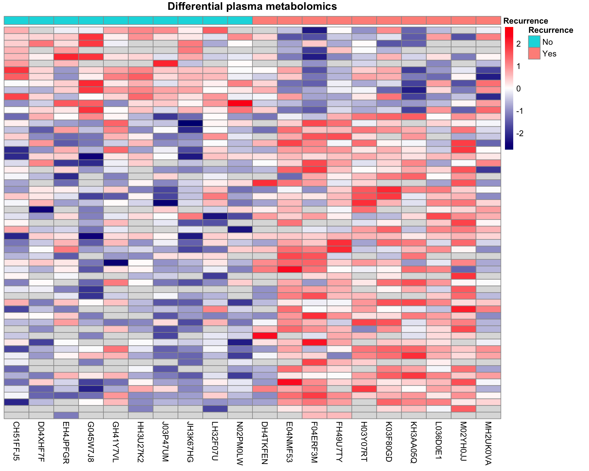
Use probabilistic dropout model to account for missing values and identify differentially abundant entity differences that are significantly associated with cancer recurrence. Note that features in heatmap are ordered by their t-statistics.
# Fit linear probabilistic dropout model to normalized data
fit <- proDA::proDA(datMat, design = ~ smpAnno$Recurrence)
# fit
# Check coefficient names for Parameter 'contrast' in proDA::test_diff()
# proDA::result_names(fit)
# Identify significant differentially abundant entities
proDAMetaPlasmaDiffRes <- proDA::test_diff(fit,
contrast = Intercept + `smpAnno$RecurrenceYes` - Intercept,
sort_by = 'pval') %>%
dplyr::select(-c(diff, se, df, avg_abundance, n_approx)) %>%
dplyr::filter(pval < 0.05) %>%
dplyr::mutate(MZ_RT = plyr::mapvalues(name,
from = featInfo$Feature,
to = featInfo$m.z_RT,
warn_missing = F))
proDAMetaPlasmaDiffRes name pval adj_pval t_statistic n_obs MZ_RT
1 Feature905 0.01571275 0.9998111 2.667025 20 137.10733/8.13
2 Feature272 0.02265644 0.9998111 2.492541 20 398.23243/8.45
3 Feature1042 0.02341126 0.9998111 2.476745 13 164.08184/8.44
4 Feature1350 0.02415381 0.9998111 2.461666 19 786.60009/9.45
5 Feature1061 0.03471958 0.9998111 2.284200 16 150.06631/8.46
6 Feature924 0.04165001 0.9998111 2.193430 18 168.07674/8.18
7 Feature457 0.04446678 0.9998111 2.160466 20 346.00917/1.29# Plot molecular signatures in input data
# Order features according to t-statistics
featOrder <- dplyr::arrange(proDAMetaPlasmaDiffRes, dplyr::desc(t_statistic))$name
pheatmap::pheatmap(datMat[featOrder, smpOrder],
annotation_col = smpRecur,
color = colorRampPalette(c('navy', 'white', 'red'))(100),
cluster_rows = F, cluster_cols = F, scale = 'row',
main = 'Differential plasma metabolomics (proDA)')
# Store table in list for creating Excel file
# sigFeatSheet <- append(sigFeatSheet, list(DiffPlasmaMetab_Feats = proDAMetaPlasmaDiffRes))ovl <- intersect(metaPlasmaDiffRes$tFeatSigRes$Var1, proDAMetaPlasmaDiffRes$name)
cat('The following features', paste0('(n =', length(ovl), ')'),
'are tested significant by both methods:\n', ovl)The following features (n =7) are tested significant by both methods:
Feature905 Feature1350 Feature272 Feature457 Feature1042 Feature1061 Feature924Visualize data of top 6 significant features
# Visualize data of top 6 significant features
topSigFeats <- proDAMetaPlasmaDiffRes$name[1:6]
topSigFeatData <- tibble::as_tibble(datMat[topSigFeats,], rownames = 'Feature') %>%
tidyr::pivot_longer(cols = -'Feature',
names_to = 'Sample', values_to = 'Abundance') %>%
dplyr::mutate(Feature = factor(Feature, levels = topSigFeats)) %>%
dplyr::left_join(smpAnno, by = 'Sample')
ggplot(topSigFeatData, aes(x=Recurrence, y=Abundance, col=Recurrence, fill=Recurrence)) +
geom_boxplot(alpha = 0.5, outlier.shape = NA) +
geom_jitter(position = position_jitter(0.2), size = 2, show.legend = F) +
scale_color_manual(values=c('#00BFC4', '#F8766D')) +
scale_fill_manual(values=c('#00BFC4', '#F8766D')) +
facet_wrap(vars(Feature), scales = 'free') +
ggpubr::stat_compare_means(method = 't.test', paired = F,
method.args = list(var.equal = T),
show.legend = F)
Display significant associations between PCs (Var1) and cancer recurrence (Var2)
# Display PCs that can significantly separate recurrence and non-recurrence
# patients
tPCASigRes[1] Var1 Var2 pVal tStats pValAdj
<0 rows> (or 0-length row.names)Plasma Lipidomics
As described in Plasma Metabolomics section, we analyzed Baseline and Follow-up samples separately.
# Load normalized data
lipPlasmaVsn <- readRDS('./data/AG_Hopf/lipPlasmaVsn.rds')
# Retrieve feature information for making significant feature table
featInfo <- tibble::as_tibble(rowData(lipPlasmaVsn), rownames = 'Feature')
# Load Plasma Metabolomics data from AG Hell for changing sample names
metaPlasma_Hell <- readRDS('./data/AG_Hell/metaPlasmaNorm.rds')
smpNames <- tibble::as_tibble(colData(metaPlasma_Hell), rownames = 'Sample') %>%
dplyr::select(Sample, Identifier) %>%
dplyr::mutate(Identifier = stringr::str_remove(Identifier, '_3$'))
# Change sample names
colnames(lipPlasmaVsn) <- plyr::mapvalues(colnames(lipPlasmaVsn),
from = smpNames$Identifier,
to = smpNames$Sample)
# Add time point information into data
timePoint <- as.data.frame(colData(lipPlasmaVsn)) %>%
dplyr::mutate(TimePoint = dplyr::case_when(
Condition == 'Baseline' ~ 'Baseline',
Condition != 'Baseline' ~ '2 years later')) %>%
dplyr::select(TimePoint)
colData(lipPlasmaVsn)['TimePoint'] <- timePoint
# Perform analysis
lipPlasmaRes <- SOA(lipPlasmaVsn, fac = c('Recurrence', 'TimePoint'))
tPCASigRes <- lipPlasmaRes$tPCASigRes
pcaRes <- lipPlasmaRes$pcaRes
pcTab <- lipPlasmaRes$pcTabDisplay associations between learned PCs (Var1) and factors (Var2). Basically t-test was performed to test significance of difference between two groups, e.g., recurrence and non-recurrence patient groups or baseline and follow-up sample groups.
# Display PCs of interest
tPCASigRes Var1 Var2 pVal tStats pValAdj
1 PC1 TimePoint 4.602714e-06 5.337781 0.0003682171
2 PC2 TimePoint 1.175856e-02 2.646839 0.3234433581
3 PC15 Recurrence 1.212913e-02 -2.634351 0.3234433581
4 PC40 TimePoint 2.438062e-02 2.344487 0.4876124272
5 PC8 Recurrence 3.626976e-02 -2.170689 0.5803161231PC1 explains most variation in data and separates patient samples by time point.
ggplot(pcTab, aes(x=PC1, y=PC2, col=TimePoint, shape=Recurrence, group=Patient)) +
geom_point(size = 3) +
geom_line(col = 'grey50', linetype = 'dashed') +
scale_color_discrete(name = 'Time point',
labels = c('Baseline', '2 years later'))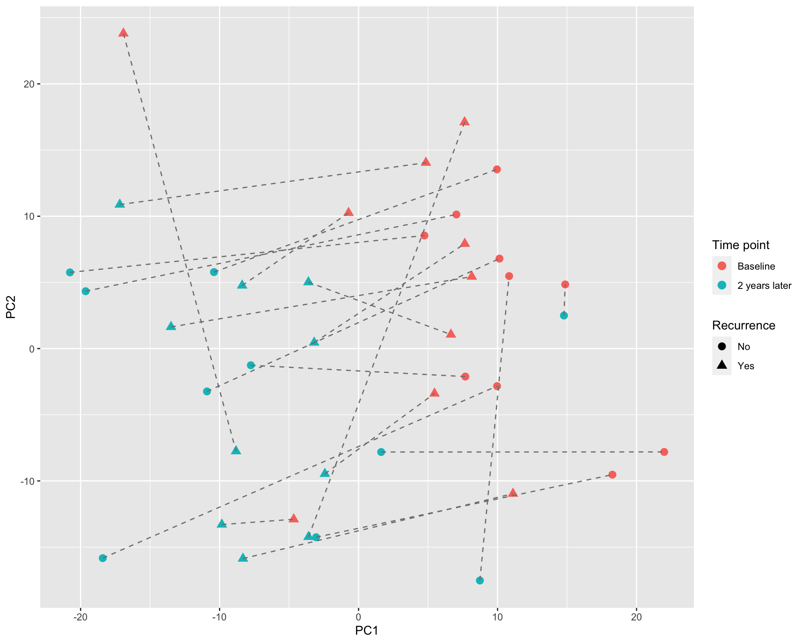
Display variance explained by each PC
# Display proportion of total variance captured by all PCs explained by each PC
varExplained <- pcaRes$sdev^2 / sum(pcaRes$sdev^2)
PC <- paste0('PC', seq(length(varExplained)))
varTab <- data.frame(PC = factor(PC, levels = PC),
Var_explained = varExplained)
ggplot(varTab, aes(x=PC, y=Var_explained*100)) +
geom_col() +
labs(x = '', y = 'Variance explained (%)') +
theme(axis.text.x = element_text(angle = 90, hjust = 1, vjust = 0.5))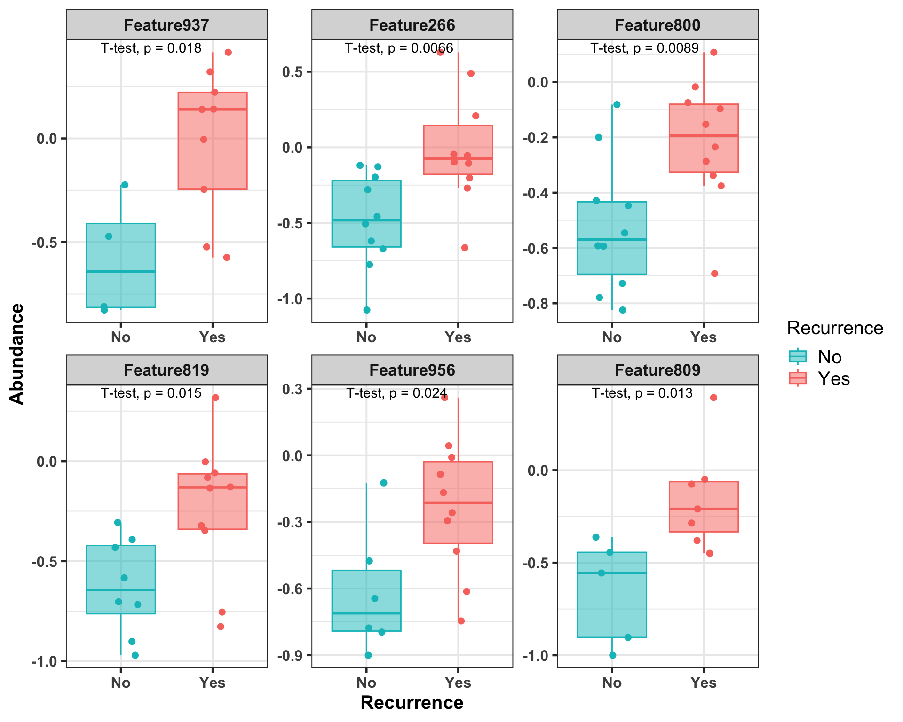
Baseline samples
Display significant associations between features (Var1) and cancer recurrence (Var2) and observe molecular signatures in input data through heatmap. Note that features in heatmap are ordered by their t-statistics.
# Subset baseline samples
smpBaseIdx <- which(colData(lipPlasmaVsn)$Condition == 'Baseline')
lipBase <- lipPlasmaVsn[, smpBaseIdx]
# Perform analysis
lipBaseRes <- SOA(lipBase, fac = 'Recurrence', num_feats = 30)
datMat <- lipBaseRes$data
smpAnno <- lipBaseRes$smpMetadata
tFeatSigRes <- lipBaseRes$tFeatSigRes
tPCASigRes <- lipBaseRes$tPCASigRes
pcaRes <- lipBaseRes$pcaRes
pcTab <- lipBaseRes$pcTab
pcTopFeatTab <- lipBaseRes$pcTopFeatTab
# Display features that can significantly separate recurrence and non-recurrence
# patients
sigFeatTab <- dplyr::mutate(tFeatSigRes, m.z_RT = plyr::mapvalues(Var1,
from = featInfo$Feature,
to = featInfo$m.z_RT,
warn_missing = F))
sigFeatTab Var1 Var2 pVal tStats pValAdj m.z_RT
1 Feature709 Recurrence 0.002265434 3.554447 0.9994104 807.67/7.94
2 Feature719 Recurrence 0.003037868 3.422270 0.9994104 749.70/7.96
3 Feature528 Recurrence 0.003087643 -3.414936 0.9994104 878.58/5.82
4 Feature527 Recurrence 0.003974119 -3.300819 0.9994104 895.57/5.82
5 Feature2399 Recurrence 0.004199418 3.275826 0.9994104 748.69/7.97
6 Feature597 Recurrence 0.005969800 -3.115763 0.9994104 628.59/6.3
7 Feature2043 Recurrence 0.006903826 -3.049244 0.9994104 619.53/6.65
8 Feature1278 Recurrence 0.007567876 3.204585 0.9994104 703.57/4.23
9 Feature2487 Recurrence 0.007948188 3.394028 0.9994104 736.54/8.92
10 Feature2379 Recurrence 0.008237580 2.968061 0.9994104 719.65/7.98
11 Feature707 Recurrence 0.009567567 2.919078 0.9994104 1,317.21/7.94
12 Feature1994 Recurrence 0.010083245 -2.874595 0.9994104 591.49/6.29
13 Feature142 Recurrence 0.010663139 -2.848630 0.9994104 909.80/1.04
14 Feature1756 Recurrence 0.011522642 2.938547 0.9994104 339.34/5.55
15 Feature334 Recurrence 0.012246724 2.784098 0.9994104 859.52/4.02
16 Feature628 Recurrence 0.012700563 -2.767082 0.9994104 614.57/6.66
17 Feature704 Recurrence 0.014085680 2.718534 0.9994104 371.36/7.94
18 Feature2215 Recurrence 0.014661559 2.699682 0.9994104 742.65/7.74
19 Feature729 Recurrence 0.014765178 2.696365 0.9994104 735.68/7.98
20 Feature1747 Recurrence 0.017247630 2.622900 0.9994104 817.59/5.56
21 Feature2284 Recurrence 0.017353702 2.619990 0.9994104 746.68/7.85
22 Feature496 Recurrence 0.017766504 -2.608825 0.9994104 725.54/5.54
23 Feature2216 Recurrence 0.018382453 2.592615 0.9994104 756.66/7.74
24 Feature1499 Recurrence 0.018947965 2.652189 0.9994104 767.58/5.01
25 Feature1736 Recurrence 0.019351832 2.568119 0.9994104 816.59/5.56
26 Feature1422 Recurrence 0.019530543 -2.693843 0.9994104 732.55/4.82
27 Feature2329 Recurrence 0.019536801 2.563577 0.9994104 682.65/7.92
28 Feature724 Recurrence 0.020386952 2.984415 0.9994104 663.45/7.97
29 Feature2370 Recurrence 0.021562289 2.516341 0.9994104 748.66/7.94
30 Feature2346 Recurrence 0.022413534 2.497730 0.9994104 722.68/7.94
31 Feature2390 Recurrence 0.022557337 2.494651 0.9994104 692.63/7.96
32 Feature919 Recurrence 0.023403035 -2.476914 0.9994104 815.80/1.05
33 Feature2256 Recurrence 0.023958711 2.465586 0.9994104 721.67/7.8
34 Feature879 Recurrence 0.024131270 2.996039 0.9994104 770.85/1.04
35 Feature2210 Recurrence 0.024347199 2.457811 0.9994104 719.57/7.74
36 Feature1325 Recurrence 0.024762030 2.449637 0.9994104 980.50/4.44
37 Feature1063 Recurrence 0.026244757 -2.421435 0.9994104 384.85/1.08
38 Feature2311 Recurrence 0.026331856 2.419825 0.9994104 369.35/7.94
39 Feature1508 Recurrence 0.027072638 -2.907382 0.9994104 818.60/5.04
40 Feature2218 Recurrence 0.027660929 2.395859 0.9994104 770.68/7.74
41 Feature1975 Recurrence 0.027921015 2.531053 0.9994104 850.67/6.25
42 Feature1974 Recurrence 0.028796577 2.551363 0.9994104 785.65/6.28
43 Feature2403 Recurrence 0.030135460 2.353972 0.9994104 734.68/7.98
44 Feature1050 Recurrence 0.030442744 -2.348996 0.9994104 854.81/1.05
45 Feature1011 Recurrence 0.031685514 -2.329338 0.9994104 658.79/1.08
46 Feature2389 Recurrence 0.031867161 2.326525 0.9994104 720.66/7.98
47 Feature1012 Recurrence 0.032932069 -2.310327 0.9994104 1,158.71/1.07
48 Feature904 Recurrence 0.033048448 -2.332670 0.9994104 888.81/1.05
49 Feature764 Recurrence 0.033553354 -2.744090 0.9994104 660.08/0.74
50 Feature1665 Recurrence 0.034316980 2.289974 0.9994104 811.66/5.41
51 Feature1282 Recurrence 0.034649467 2.719855 0.9994104 655.32/4.27
52 Feature1067 Recurrence 0.034772146 -2.283451 0.9994104 980.76/1.05
53 Feature2280 Recurrence 0.035036133 2.279703 0.9994104 732.66/7.85
54 Feature2292 Recurrence 0.036993422 2.252707 0.9994104 717.63/7.86
55 Feature1996 Recurrence 0.037026354 -2.252265 0.9994104 642.60/6.3
56 Feature713 Recurrence 0.037050256 2.251943 0.9994104 723.68/7.95
57 Feature2342 Recurrence 0.037200995 -2.272485 0.9994104 878.82/7.91
58 Feature698 Recurrence 0.038608330 2.471694 0.9994104 906.83/7.91
59 Feature1419 Recurrence 0.038880898 -2.344233 0.9994104 822.54/4.79
60 Feature909 Recurrence 0.039475098 -2.220314 0.9994104 870.79/1.06
61 Feature2237 Recurrence 0.039669050 2.217862 0.9994104 706.65/7.8
62 Feature1880 Recurrence 0.040960958 -2.201805 0.9994104 665.51/5.89
63 Feature1842 Recurrence 0.041019410 -2.201090 0.9994104 868.55/5.82
64 Feature177 Recurrence 0.041245258 2.198334 0.9994104 288.22/1.11
65 Feature784 Recurrence 0.041959384 -2.276280 0.9994104 382.07/0.77
66 Feature2241 Recurrence 0.042389792 2.184580 0.9994104 720.66/7.8
67 Feature1421 Recurrence 0.043760739 2.168545 0.9994104 816.59/4.78
68 Feature1914 Recurrence 0.044470301 2.244065 0.9994104 812.67/5.98
69 Feature1175 Recurrence 0.045084956 -2.153488 0.9994104 381.30/3.09
70 Feature899 Recurrence 0.046357951 -2.159259 0.9994104 820.82/1.06
71 Feature2183 Recurrence 0.047509400 2.172189 0.9994104 737.54/7.68
72 Feature1881 Recurrence 0.047729470 -2.124591 0.9994104 686.57/5.9
73 Feature1014 Recurrence 0.048292396 -2.118629 0.9994104 944.72/1.08
74 Feature1070 Recurrence 0.048669228 -2.114673 0.9994104 804.80/1.07
75 Feature977 Recurrence 0.049520927 -2.105834 0.9994104 823.79/1.05
76 Feature2357 Recurrence 0.049552683 2.105507 0.9994104 708.66/7.95
77 Feature716 Recurrence 0.049776238 2.103211 0.9994104 736.69/7.96
78 Feature723 Recurrence 0.049890116 2.102045 0.9994104 709.67/7.97# Plot molecular signatures in input data
# Order features according to t-statistics
featOrder <- dplyr::arrange(tFeatSigRes, dplyr::desc(tStats))$Var1
# Arrange samples to make same groups in same clusters
smpOrder <- c(which(smpAnno$Recurrence == 'No'),
which(smpAnno$Recurrence == 'Yes'))
# Prepare recurrence table for annotating samples in heatmap
smpRecur <- dplyr::select(smpAnno, Sample, Recurrence) %>%
tibble::column_to_rownames('Sample')
pheatmap::pheatmap(datMat[featOrder, smpOrder],
annotation_col = smpRecur,
color = colorRampPalette(c('navy', 'white', 'red'))(100),
cluster_rows = F, cluster_cols = F, show_rownames = F,
scale = 'row', main = 'Baseline plasma lipidomics')
Use probabilistic dropout model to account for missing values and identify differentially abundant entities that are significantly associated with cancer recurrence. Note that features in heatmap are ordered by their t-statistics.
# Fit linear probabilistic dropout model to normalized data
fit <- proDA::proDA(datMat, design = ~ smpAnno$Recurrence)
# fit
# Check coefficient names for Parameter 'contrast' in proDA::test_diff()
# proDA::result_names(fit)
# Identify significant differentially abundant entities
all_proDALipBaseRes <- proDA::test_diff(fit,
contrast = Intercept + `smpAnno$RecurrenceYes` - Intercept,
sort_by = 'pval')
proDALipBaseRes <- dplyr::select(all_proDALipBaseRes,
-c(diff, se, df, avg_abundance, n_approx)) %>%
dplyr::filter(pval < 0.05) %>%
dplyr::mutate(MZ_RT = plyr::mapvalues(name,
from = featInfo$Feature,
to = featInfo$m.z_RT,
warn_missing = F))
proDALipBaseRes name pval adj_pval t_statistic n_obs MZ_RT
1 Feature709 0.002348172 0.9991934 -3.538307 20 807.67/7.94
2 Feature719 0.003738154 0.9991934 -3.328534 20 749.70/7.96
3 Feature2399 0.005284476 0.9991934 -3.171384 20 748.69/7.97
4 Feature197 0.005816900 0.9991934 3.127611 3 818.45/1.42
5 Feature1278 0.006302279 0.9991934 -3.090990 14 703.57/4.23
6 Feature597 0.008299052 0.9991934 2.964635 20 628.59/6.3
7 Feature527 0.008393257 0.9991934 2.959431 20 895.57/5.82
8 Feature707 0.009202661 0.9991934 -2.916920 19 1,317.21/7.94
9 Feature2379 0.009855600 0.9991934 -2.885184 20 719.65/7.98
10 Feature1422 0.012956355 0.9991934 2.757746 14 732.55/4.82
11 Feature528 0.014480514 0.9991934 2.705531 20 878.58/5.82
12 Feature704 0.014740426 0.9991934 -2.697156 20 371.36/7.94
13 Feature2043 0.014946128 0.9991934 2.690626 20 619.53/6.65
14 Feature142 0.016060564 0.9991934 2.656677 20 909.80/1.04
15 Feature1994 0.016264140 0.9991934 2.650719 20 591.49/6.29
16 Feature2215 0.018285364 0.9991934 -2.595136 20 742.65/7.74
17 Feature2284 0.018792163 0.9991934 -2.582116 20 746.68/7.85
18 Feature1975 0.019344351 0.9991934 -2.568303 13 850.67/6.25
19 Feature729 0.020124964 0.9991934 -2.549401 20 735.68/7.98
20 Feature2329 0.020787942 0.9991934 -2.533884 20 682.65/7.92
21 Feature628 0.021702235 0.9991934 2.513234 20 614.57/6.66
22 Feature2370 0.021915652 0.9991934 -2.508533 20 748.66/7.94
23 Feature2216 0.022343421 0.9991934 -2.499237 20 756.66/7.74
24 Feature1736 0.022932265 0.9991934 -2.486712 20 816.59/5.56
25 Feature1499 0.023221936 0.9991934 -2.480661 16 767.58/5.01
26 Feature1419 0.023438569 0.9991934 2.476182 13 822.54/4.79
27 Feature2390 0.023630139 0.9991934 -2.472254 20 692.63/7.96
28 Feature2256 0.023876897 0.9991934 -2.467238 20 721.67/7.8
29 Feature1747 0.024851547 0.9991934 -2.447890 20 817.59/5.56
30 Feature2487 0.025343904 0.9991934 -2.438385 11 736.54/8.92
31 Feature1756 0.027354254 0.9991934 -2.401292 15 339.34/5.55
32 Feature784 0.027391835 0.9991934 2.400623 14 382.07/0.77
33 Feature2210 0.027554893 0.9991934 -2.397731 20 719.57/7.74
34 Feature919 0.027877056 0.9991934 2.392064 20 815.80/1.05
35 Feature2346 0.028343617 0.9991934 -2.383964 20 722.68/7.94
36 Feature2218 0.029388201 0.9991934 -2.366272 20 770.68/7.74
37 Feature2311 0.030288446 0.9991934 -2.351488 20 369.35/7.94
38 Feature724 0.031708811 0.9991934 -2.328976 9 663.45/7.97
39 Feature334 0.033717208 0.9991934 -2.298693 20 859.52/4.02
40 Feature1665 0.034195700 0.9991934 -2.291725 20 811.66/5.41
41 Feature2183 0.037690059 0.9991934 -2.243417 16 737.54/7.68
42 Feature2342 0.037864971 0.9991934 2.241109 18 878.82/7.91
43 Feature2403 0.038060998 0.9991934 -2.238534 20 734.68/7.98
44 Feature1063 0.038077312 0.9991934 2.238320 20 384.85/1.08
45 Feature2237 0.039973211 0.9991934 -2.214039 20 706.65/7.8
46 Feature2389 0.040692544 0.9991934 -2.205102 20 720.66/7.98
47 Feature698 0.042055386 0.9991934 -2.188563 10 906.83/7.91
48 Feature2280 0.042384297 0.9991934 -2.184645 20 732.66/7.85
49 Feature1996 0.042515583 0.9991934 2.183089 20 642.60/6.3
50 Feature2241 0.042640369 0.9991934 -2.181614 20 720.66/7.8
51 Feature1011 0.042926363 0.9991934 2.178248 20 658.79/1.08
52 Feature1880 0.043001208 0.9991934 2.177371 20 665.51/5.89
53 Feature177 0.043762422 0.9991934 -2.168526 20 288.22/1.11
54 Feature1421 0.044105138 0.9991934 -2.164590 20 816.59/4.78
55 Feature1325 0.044383551 0.9991934 -2.161412 20 980.50/4.44
56 Feature1914 0.044619712 0.9991934 -2.158732 14 812.67/5.98
57 Feature1067 0.044625075 0.9991934 2.158671 20 980.76/1.05
58 Feature904 0.046495330 0.9991934 2.137890 18 888.81/1.05
59 Feature713 0.047444431 0.9991934 -2.127634 20 723.68/7.95
60 Feature1012 0.047764403 0.9991934 2.124219 20 1,158.71/1.07
61 Feature2292 0.047885352 0.9991934 -2.122934 20 717.63/7.86
62 Feature1881 0.048184080 0.9991934 2.119771 20 686.57/5.9# Plot molecular signatures in input data
# Order features according to t-statistics
featOrder <- dplyr::arrange(proDALipBaseRes, dplyr::desc(t_statistic))$name
pheatmap::pheatmap(datMat[featOrder, smpOrder],
annotation_col = smpRecur,
color = colorRampPalette(c('navy', 'white', 'red'))(100),
cluster_rows = F, cluster_cols = F, show_rownames = F,
scale = 'row', main = 'Baseline plasma lipidomics (proDA)')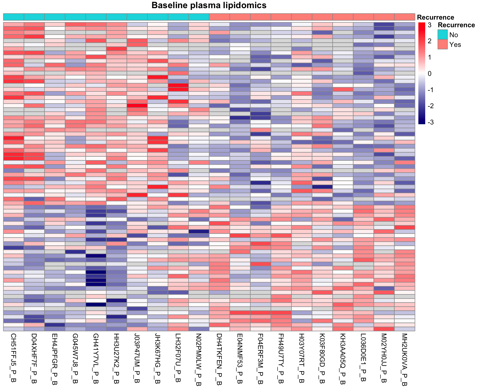
# Store table in list for creating Excel file
sigFeatSheet <- append(sigFeatSheet, list(BasePlasmaLipid_Feats = proDALipBaseRes))ovl <- intersect(lipBaseRes$tFeatSigRes$Var1, proDALipBaseRes$name)
cat('The following features', paste0('(n =', length(ovl), ')'),
'are tested significant by both methods:\n', ovl)The following features (n =61) are tested significant by both methods:
Feature709 Feature719 Feature528 Feature527 Feature2399 Feature597 Feature2043 Feature1278 Feature2487 Feature2379 Feature707 Feature1994 Feature142 Feature1756 Feature334 Feature628 Feature704 Feature2215 Feature729 Feature1747 Feature2284 Feature2216 Feature1499 Feature1736 Feature1422 Feature2329 Feature724 Feature2370 Feature2346 Feature2390 Feature919 Feature2256 Feature2210 Feature1325 Feature1063 Feature2311 Feature2218 Feature1975 Feature2403 Feature1011 Feature2389 Feature1012 Feature904 Feature1665 Feature1067 Feature2280 Feature2292 Feature1996 Feature713 Feature2342 Feature698 Feature1419 Feature2237 Feature1880 Feature177 Feature784 Feature2241 Feature1421 Feature1914 Feature2183 Feature1881Visualize data of top 6 significant features
# Visualize data of top 6 significant features
topSigFeats <- proDALipBaseRes$name[1:6]
topSigFeatData <- tibble::as_tibble(datMat[topSigFeats,], rownames = 'Feature') %>%
tidyr::pivot_longer(cols = -'Feature',
names_to = 'Sample', values_to = 'Abundance') %>%
dplyr::mutate(Feature = factor(Feature, levels = topSigFeats)) %>%
dplyr::left_join(smpAnno, by = 'Sample')
ggplot(topSigFeatData, aes(x=Recurrence, y=Abundance, col=Recurrence, fill=Recurrence)) +
geom_boxplot(alpha = 0.5, outlier.shape = NA) +
geom_jitter(position = position_jitter(0.2), size = 2, show.legend = F) +
scale_color_manual(values=c('#00BFC4', '#F8766D')) +
scale_fill_manual(values=c('#00BFC4', '#F8766D')) +
facet_wrap(vars(Feature), scales = 'free') +
ggpubr::stat_compare_means(method = 't.test', paired = F,
method.args = list(var.equal = T),
show.legend = F)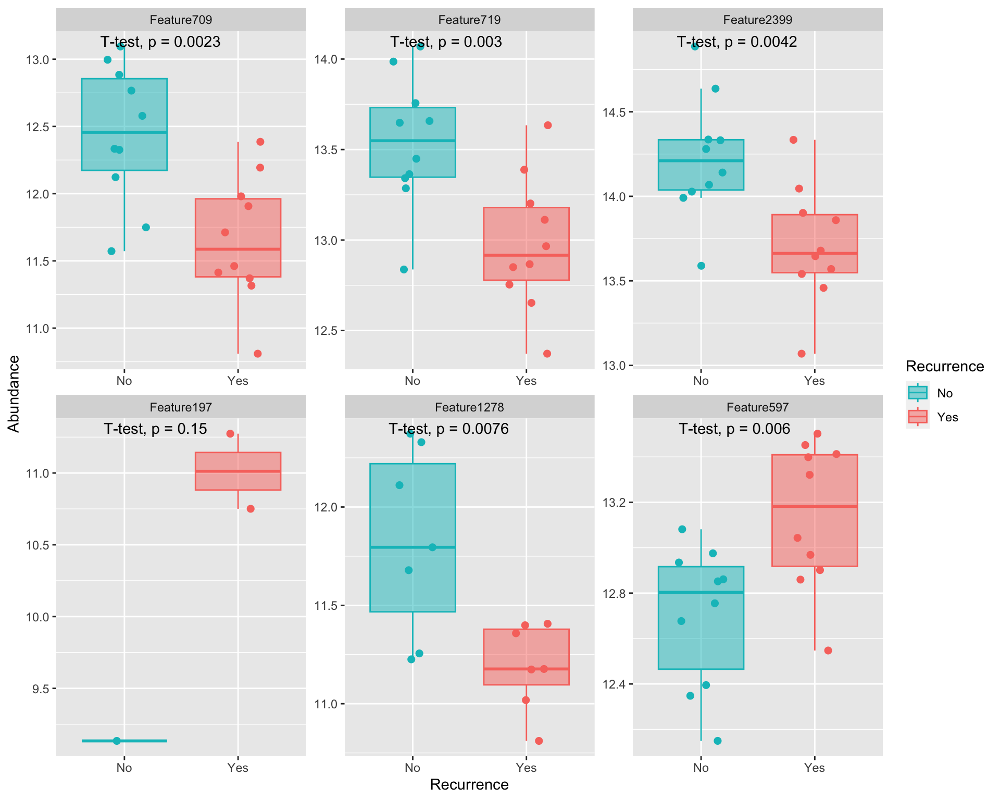
Display significant associations between PCs (Var1) and cancer recurrence (Var2)
# Display PCs that can significantly separate recurrence and non-recurrence
# patients
tPCASigRes Var1 Var2 pVal tStats pValAdj
1 PC18 Recurrence 0.03988104 2.215194 0.4237112# Display proportion of total variance captured by all PCs explained by each PC
varExplained <- pcaRes$sdev^2 / sum(pcaRes$sdev^2)
PC <- paste0('PC', seq(length(varExplained)))
varTab <- data.frame(PC = factor(PC, levels = PC),
Var_explained = varExplained)
ggplot(varTab, aes(x=PC, y=Var_explained*100)) +
geom_col() +
labs(x = '', y = 'Variance explained (%)',
title = 'Baseline plasma lipidomics')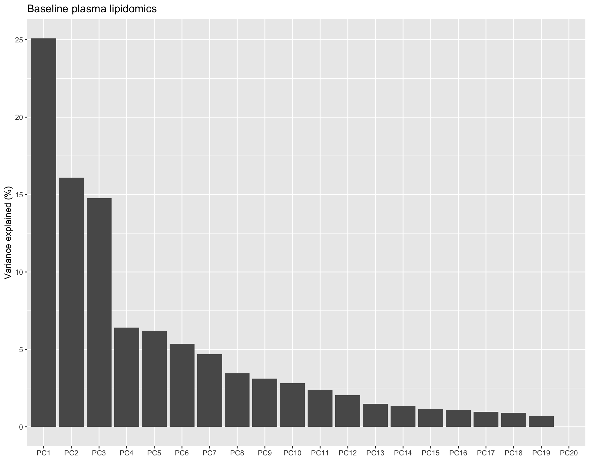
PC18 potentially separates recurrence and non-recurrence patients.
# Visualize PCs
ggplot(pcTab, aes(x=Recurrence, y=PC18, col=Recurrence, fill=Recurrence)) +
geom_boxplot(alpha = 0.5, outlier.shape = NA) +
geom_jitter(position = position_jitter(0.2), size = 2, show.legend = F) +
# geom_text_repel(aes(label=Sample), size = 2, show.legend = F) +
labs(title = 'Baseline plasma lipidomics') +
scale_color_manual(values=c('#00BFC4', '#F8766D')) +
scale_fill_manual(values=c('#00BFC4', '#F8766D')) +
ggpubr::stat_compare_means(method = 't.test', paired = F, size = 5,
method.args = list(var.equal = T),
show.legend = F)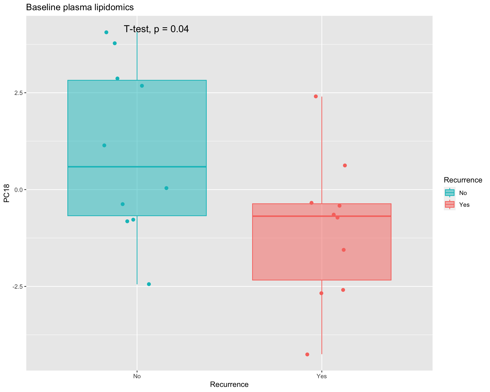
Plot molecular signatures captured by PC18 in input data. We took a look at top 20 features with highest loadings and observed lipid levels of these top features through heatmap. Note that features in heatmap are ordered by their loadings.
# Plot molecular signatures in input data
# Extract top features with highest loadings
topFeats <- pcTopFeatTab$PC18$Feature[1:20]
# Order features by loadings
topFeatsIdx <- sapply(topFeats, function(feat) {which(rownames(datMat) == feat)})
pheatmap::pheatmap(datMat[topFeatsIdx, smpOrder],
annotation_col = smpRecur,
color = colorRampPalette(c('navy', 'white', 'red'))(100),
cluster_rows = F, cluster_cols = F,
scale = 'row', main = 'Baseline plasma lipidomics - PC18')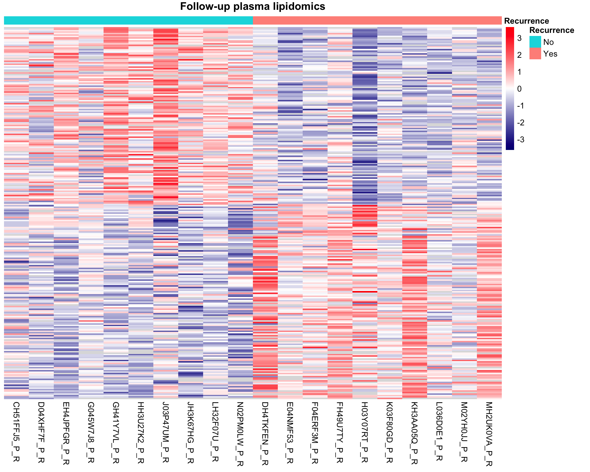
Display top features that build the PC18
# Display top features with highest loadings of PC of interest
pcTopFeats <- dplyr::left_join(pcTopFeatTab$PC18, featInfo, by = 'Feature')
pcTopFeats Feature Loading m.z_RT
1 Feature186 0.16965977 439.17/1.28
2 Feature2433 0.15355815 666.62/8.06
3 Feature1481 0.11404631 759.57/4.94
4 Feature161 0.11287704 286.20/1.05
5 Feature1090 0.10793562 336.23/1.57
6 Feature1476 0.09459361 758.57/4.94
7 Feature2321 0.09167695 867.82/7.91
8 Feature221 0.08715620 523.36/1.93
9 Feature2456 0.08590152 699.68/8.12
10 Feature1831 0.08559096 789.62/5.83
11 Feature809 0.08494755 337.06/0.85
12 Feature840 0.08234931 317.06/0.88
13 Feature2142 0.08035860 662.58/7.65
14 Feature790 0.07790056 638.10/0.76
15 Feature1584 0.07733142 828.61/5.18
16 Feature177 0.07629648 288.22/1.11
17 Feature682 0.07568222 707.65/7.8
18 Feature2435 0.07557709 369.35/8.09
19 Feature820 0.07462984 346.01/0.84
20 Feature2256 0.07450048 721.67/7.8
21 Feature748 0.07360726 498.90/0.24
22 Feature1969 0.07354014 892.68/6.25
23 Feature695 0.07319269 853.80/7.88
24 Feature1231 0.07301587 772.55/4.02
25 Feature1819 0.07194018 856.64/5.79
26 Feature1369 0.07186511 662.23/4.6
27 Feature829 0.07015736 359.04/0.87
28 Feature182 0.06885633 316.25/1.23
29 Feature694 0.06852747 960.88/7.87
30 Feature1104 0.06814380 424.34/1.76# Store table in list for creating Excel file
sigFeatSheet <- append(sigFeatSheet, list(BasePlasmaLipid_PC18 = pcTopFeats))Follow-up samples
Display significant associations between features (Var1) and cancer recurrence (Var2) and observe molecular signatures in input data through heatmap. Note that features in heatmap are ordered by their t-statistics.
# Subset follow-up samples
smpFoloIdx <- which(colData(lipPlasmaVsn)$Condition != 'Baseline')
lipFolo <- lipPlasmaVsn[, smpFoloIdx]
# Perform analysis
lipFoloRes <- SOA(lipFolo, fac = 'Recurrence', num_feats = 30)
datMat <- lipFoloRes$data
smpAnno <- lipFoloRes$smpMetadata
tFeatSigRes <- lipFoloRes$tFeatSigRes
tPCASigRes <- lipFoloRes$tPCASigRes
pcaRes <- lipFoloRes$pcaRes
# Display features that can significantly separate recurrence and non-recurrence
# patients
sigFeatTab <- dplyr::mutate(tFeatSigRes, m.z_RT = plyr::mapvalues(Var1,
from = featInfo$Feature,
to = featInfo$m.z_RT,
warn_missing = F))
sigFeatTab Var1 Var2 pVal tStats pValAdj m.z_RT
1 Feature1813 Recurrence 0.0001848388 4.683951 0.2535387 800.55/5.78
2 Feature1826 Recurrence 0.0004782972 4.253160 0.2535387 784.58/5.8
3 Feature990 Recurrence 0.0005045814 -4.229059 0.2535387 883.79/1.05
4 Feature1395 Recurrence 0.0005153612 6.051172 0.2535387 703.57/4.65
5 Feature1962 Recurrence 0.0005206134 4.214973 0.2535387 790.63/6.24
6 Feature1804 Recurrence 0.0009638154 3.938186 0.3911484 752.56/5.74
7 Feature1822 Recurrence 0.0013721830 3.779664 0.4452214 762.60/5.79
8 Feature1885 Recurrence 0.0017909260 3.660096 0.4452214 817.64/5.87
9 Feature1948 Recurrence 0.0021878145 3.570130 0.4452214 780.59/6.2
10 Feature1743 Recurrence 0.0021912613 3.569422 0.4452214 767.57/5.56
11 Feature1111 Recurrence 0.0023491587 3.654278 0.4452214 520.34/1.88
12 Feature1809 Recurrence 0.0025820064 3.495569 0.4452214 778.57/5.74
13 Feature1858 Recurrence 0.0027295184 3.470537 0.4452214 838.63/5.84
14 Feature1063 Recurrence 0.0038725305 -3.312547 0.4452214 384.85/1.08
15 Feature1807 Recurrence 0.0048496743 3.210458 0.4452214 796.52/5.75
16 Feature1403 Recurrence 0.0049201626 3.203896 0.4452214 790.57/4.71
17 Feature1736 Recurrence 0.0052243680 3.176594 0.4452214 816.59/5.56
18 Feature1970 Recurrence 0.0052767260 3.259758 0.4452214 787.60/6.24
19 Feature1984 Recurrence 0.0052898760 3.258544 0.4452214 814.63/6.24
20 Feature1159 Recurrence 0.0055589040 3.148310 0.4452214 508.38/2.55
21 Feature195 Recurrence 0.0056658283 3.425708 0.4452214 241.17/1.41
22 Feature335 Recurrence 0.0056748684 3.138892 0.4452214 723.54/4.02
23 Feature1565 Recurrence 0.0066777453 3.064502 0.4452214 792.59/5.17
24 Feature2361 Recurrence 0.0068245840 -4.430550 0.4452214 671.57/7.93
25 Feature866 Recurrence 0.0070452868 -3.039942 0.4452214 488.87/1.02
26 Feature1142 Recurrence 0.0071870876 3.030798 0.4452214 524.37/2.38
27 Feature1582 Recurrence 0.0072343638 3.027789 0.4452214 887.57/5.18
28 Feature251 Recurrence 0.0072837325 -3.047132 0.4452214 268.26/2.3
29 Feature1856 Recurrence 0.0072962756 3.046327 0.4452214 823.64/5.84
30 Feature244 Recurrence 0.0073829363 -3.129746 0.4452214 559.52/2.19
31 Feature2347 Recurrence 0.0073844825 -3.095521 0.4452214 680.48/7.91
32 Feature1143 Recurrence 0.0074113028 3.016692 0.4452214 614.34/2.38
33 Feature1454 Recurrence 0.0074149455 3.016466 0.4452214 766.57/4.9
34 Feature989 Recurrence 0.0076973899 -2.999284 0.4452214 964.78/1.05
35 Feature1873 Recurrence 0.0077333546 3.106406 0.4452214 833.65/5.86
36 Feature974 Recurrence 0.0081290979 -2.974169 0.4452214 917.78/1.04
37 Feature1838 Recurrence 0.0082099296 2.969610 0.4452214 839.63/5.84
38 Feature896 Recurrence 0.0082875787 -2.965272 0.4452214 930.79/1.06
39 Feature1676 Recurrence 0.0084954848 -2.953848 0.4452214 736.54/5.43
40 Feature2335 Recurrence 0.0091502414 -2.940083 0.4452214 924.75/7.93
41 Feature1421 Recurrence 0.0093705226 2.908558 0.4452214 816.59/4.78
42 Feature1140 Recurrence 0.0094809938 2.946414 0.4452214 496.34/2.25
43 Feature1141 Recurrence 0.0097919861 2.888185 0.4452214 524.37/2.27
44 Feature1132 Recurrence 0.0107965035 2.842851 0.4452214 480.34/2.08
45 Feature887 Recurrence 0.0110126599 -2.833629 0.4452214 776.79/1.06
46 Feature1058 Recurrence 0.0111849657 -2.826402 0.4452214 640.82/1.06
47 Feature1827 Recurrence 0.0111881494 2.866667 0.4452214 827.63/5.8
48 Feature235 Recurrence 0.0112935508 -2.840712 0.4452214 228.23/1.99
49 Feature1867 Recurrence 0.0112986565 2.821691 0.4452214 814.63/5.87
50 Feature929 Recurrence 0.0115806795 -2.810201 0.4452214 841.81/1.04
51 Feature1768 Recurrence 0.0116048893 2.809227 0.4452214 752.56/5.58
52 Feature1828 Recurrence 0.0116397923 2.807827 0.4452214 785.59/5.81
53 Feature831 Recurrence 0.0116498202 -2.807425 0.4452214 361.02/0.87
54 Feature1949 Recurrence 0.0117864532 2.801986 0.4452214 730.57/6.2
55 Feature1279 Recurrence 0.0118377576 -2.799959 0.4452214 338.34/4.25
56 Feature859 Recurrence 0.0119362130 -2.796093 0.4452214 352.90/1.02
57 Feature160 Recurrence 0.0120505632 -2.809940 0.4452214 896.79/1.05
58 Feature1425 Recurrence 0.0121443252 2.788021 0.4452214 792.59/4.82
59 Feature968 Recurrence 0.0122729684 -2.783098 0.4452214 807.82/1.04
60 Feature2464 Recurrence 0.0124735104 -2.935601 0.4452214 932.86/8.14
61 Feature2190 Recurrence 0.0124915436 -2.836962 0.4452214 954.85/7.74
62 Feature542 Recurrence 0.0126774040 2.767936 0.4452214 837.62/5.87
63 Feature541 Recurrence 0.0127222166 3.100012 0.4452214 836.65/5.86
64 Feature947 Recurrence 0.0129653442 -2.757421 0.4452214 724.78/1.07
65 Feature83 Recurrence 0.0135087561 -2.738174 0.4452214 488.96/0.96
66 Feature1921 Recurrence 0.0137762588 2.746236 0.4452214 794.60/6
67 Feature1735 Recurrence 0.0138286602 2.727186 0.4452214 776.56/5.57
68 Feature89 Recurrence 0.0139630754 -2.722642 0.4452214 546.83/0.99
69 Feature851 Recurrence 0.0142660472 -2.729553 0.4452214 818.78/1
70 Feature1227 Recurrence 0.0143783373 2.708863 0.4452214 701.56/4.02
71 Feature2208 Recurrence 0.0146196464 -2.850115 0.4452214 300.14/7.72
72 Feature255 Recurrence 0.0147143663 2.697989 0.4452214 604.31/2.38
73 Feature141 Recurrence 0.0147807585 -2.695869 0.4452214 875.80/1.04
74 Feature1268 Recurrence 0.0147847224 2.695742 0.4452214 721.58/4.23
75 Feature912 Recurrence 0.0149147252 -2.691617 0.4452214 972.77/1.06
76 Feature1144 Recurrence 0.0154300920 2.675596 0.4452214 786.25/2.38
77 Feature92 Recurrence 0.0155464397 -2.688411 0.4452214 614.82/0.99
78 Feature166 Recurrence 0.0156187844 -2.750854 0.4452214 794.81/1.06
79 Feature1463 Recurrence 0.0161026269 2.655440 0.4452214 815.57/4.91
80 Feature879 Recurrence 0.0162090513 -2.950451 0.4452214 770.85/1.04
81 Feature1087 Recurrence 0.0165326046 2.697768 0.4452214 286.14/1.32
82 Feature1067 Recurrence 0.0165705184 -2.641885 0.4452214 980.76/1.05
83 Feature865 Recurrence 0.0166177799 -2.640536 0.4452214 420.88/1.02
84 Feature2272 Recurrence 0.0167381686 -2.670937 0.4452214 898.72/7.83
85 Feature1069 Recurrence 0.0168187354 -2.634841 0.4452214 368.87/1.06
86 Feature274 Recurrence 0.0175831106 -2.629219 0.4452214 270.28/2.63
87 Feature574 Recurrence 0.0179215414 2.604695 0.4452214 817.69/6.26
88 Feature906 Recurrence 0.0184540089 -2.590766 0.4452214 684.84/1.04
89 Feature125 Recurrence 0.0187514555 -2.615225 0.4452214 739.83/1.04
90 Feature1642 Recurrence 0.0190242914 2.576263 0.4452214 794.60/5.38
91 Feature980 Recurrence 0.0190634706 -2.575282 0.4452214 436.86/1.06
92 Feature168 Recurrence 0.0191432351 -2.605054 0.4452214 904.78/1.06
93 Feature880 Recurrence 0.0191954109 -2.571992 0.4452214 922.80/1.06
94 Feature1579 Recurrence 0.0195404518 2.563488 0.4452214 768.59/5.19
95 Feature1468 Recurrence 0.0195799368 2.562524 0.4452214 814.57/4.89
96 Feature1546 Recurrence 0.0198233627 2.556620 0.4452214 724.53/5.13
97 Feature1018 Recurrence 0.0198598664 -2.555741 0.4452214 462.86/1.07
98 Feature1002 Recurrence 0.0201371472 -2.549111 0.4452214 708.81/1.06
99 Feature935 Recurrence 0.0202629133 -2.546133 0.4452214 998.77/1.05
100 Feature697 Recurrence 0.0203759476 -2.557896 0.4452214 949.75/7.9
101 Feature1056 Recurrence 0.0203822682 -2.543322 0.4452214 878.73/1.07
102 Feature1129 Recurrence 0.0204419316 2.638817 0.4452214 496.34/2.05
103 Feature891 Recurrence 0.0205681202 -2.569668 0.4452214 828.81/1.05
104 Feature243 Recurrence 0.0209538801 -2.544305 0.4452214 242.25/2.15
105 Feature1459 Recurrence 0.0211292731 2.526076 0.4452214 748.53/4.9
106 Feature295 Recurrence 0.0211376037 -2.525887 0.4452214 391.28/3.12
107 Feature1871 Recurrence 0.0216483019 2.514429 0.4452214 850.63/5.86
108 Feature1861 Recurrence 0.0217424056 2.512346 0.4452214 728.56/5.85
109 Feature2348 Recurrence 0.0219223547 -2.710299 0.4452214 916.83/7.91
110 Feature1135 Recurrence 0.0219461331 2.507865 0.4452214 482.36/2.13
111 Feature2440 Recurrence 0.0220182077 2.930194 0.4452214 369.35/8.09
112 Feature68 Recurrence 0.0220202712 -2.506244 0.4452214 344.23/0.86
113 Feature1351 Recurrence 0.0220417862 2.505774 0.4452214 858.60/4.51
114 Feature2186 Recurrence 0.0222792628 -2.500621 0.4452214 929.75/7.73
115 Feature413 Recurrence 0.0223131110 -2.499890 0.4452214 1,148.34/4.73
116 Feature1072 Recurrence 0.0223708641 -2.498647 0.4452214 452.83/1.08
117 Feature937 Recurrence 0.0223831369 -2.498383 0.4452214 849.80/1.04
118 Feature1700 Recurrence 0.0224942987 2.495999 0.4452214 820.62/5.47
119 Feature256 Recurrence 0.0229590006 2.486151 0.4452214 608.32/2.38
120 Feature970 Recurrence 0.0229922079 -2.485454 0.4452214 857.78/1.05
121 Feature1003 Recurrence 0.0230541920 -2.484157 0.4452214 656.79/1.08
122 Feature1145 Recurrence 0.0231243543 2.482692 0.4452214 666.31/2.38
123 Feature919 Recurrence 0.0231910135 -2.481304 0.4452214 815.80/1.05
124 Feature857 Recurrence 0.0233848706 -2.477289 0.4452214 352.90/1.02
125 Feature876 Recurrence 0.0235091962 -2.474731 0.4452214 718.84/1.06
126 Feature1576 Recurrence 0.0236312819 2.472231 0.4452214 778.60/5.18
127 Feature440 Recurrence 0.0239684039 2.478714 0.4452214 807.64/4.92
128 Feature82 Recurrence 0.0242137287 -2.526087 0.4452214 284.99/0.96
129 Feature672 Recurrence 0.0244093935 -2.456577 0.4452214 947.73/7.79
130 Feature334 Recurrence 0.0246529840 2.451773 0.4452214 859.52/4.02
131 Feature1086 Recurrence 0.0248757699 2.460496 0.4452214 286.14/1.32
132 Feature242 Recurrence 0.0249151713 2.459719 0.4452214 497.34/2.05
133 Feature2036 Recurrence 0.0250944162 2.631571 0.4452214 828.69/6.48
134 Feature2411 Recurrence 0.0252494961 -2.627981 0.4452214 902.82/8.04
135 Feature416 Recurrence 0.0253895190 -2.437513 0.4452214 770.56/4.73
136 Feature2470 Recurrence 0.0257081660 -2.544847 0.4452214 948.89/8.16
137 Feature1981 Recurrence 0.0258990267 2.427874 0.4452214 799.67/6.26
138 Feature676 Recurrence 0.0260276104 -2.452778 0.4452214 1,015.71/7.8
139 Feature854 Recurrence 0.0261637694 -2.422936 0.4452214 886.77/1
140 Feature537 Recurrence 0.0263737087 2.446177 0.4452214 815.68/5.86
141 Feature2275 Recurrence 0.0264094690 -2.431082 0.4452214 882.75/7.81
142 Feature91 Recurrence 0.0265351284 -2.416087 0.4452214 682.81/0.99
143 Feature410 Recurrence 0.0266760393 2.524738 0.4452214 812.54/4.64
144 Feature1863 Recurrence 0.0269925650 2.407773 0.4452214 811.67/5.86
145 Feature1006 Recurrence 0.0270949229 -2.405930 0.4452214 740.76/1.08
146 Feature1485 Recurrence 0.0275865924 2.397170 0.4452214 774.54/4.96
147 Feature1402 Recurrence 0.0277704893 -2.768088 0.4452214 338.34/4.66
148 Feature81 Recurrence 0.0277911727 2.419971 0.4452214 315.00/0.95
149 Feature966 Recurrence 0.0277928335 -2.476495 0.4452214 846.82/1.04
150 Feature1042 Recurrence 0.0278374181 -2.392758 0.4452214 1,100.76/1.05
151 Feature656 Recurrence 0.0279014851 -2.474423 0.4452214 925.80/7.6
152 Feature2481 Recurrence 0.0280587593 2.760920 0.4452214 641.30/8.52
153 Feature881 Recurrence 0.0281899974 -2.386617 0.4452214 990.79/1.05
154 Feature926 Recurrence 0.0282719742 -2.385199 0.4452214 1,142.74/1.06
155 Feature1243 Recurrence 0.0283405839 2.384016 0.4452214 830.57/4.07
156 Feature1060 Recurrence 0.0287028315 -2.377812 0.4471285 516.87/1.06
157 Feature1503 Recurrence 0.0288292271 2.375665 0.4471285 742.57/5.04
158 Feature900 Recurrence 0.0295403318 -2.404904 0.4544386 862.80/1.06
159 Feature361 Recurrence 0.0298600206 2.358472 0.4544386 594.48/4.23
160 Feature1887 Recurrence 0.0298604412 -2.530204 0.4544386 338.34/5.86
161 Feature877 Recurrence 0.0302021535 -2.352888 0.4546645 786.82/1.06
162 Feature1675 Recurrence 0.0302487295 2.377387 0.4546645 768.59/5.41
163 Feature1223 Recurrence 0.0310478318 2.339333 0.4591153 854.57/3.93
164 Feature856 Recurrence 0.0316464863 -2.329944 0.4591153 420.88/1.01
165 Feature1103 Recurrence 0.0317089738 -2.328974 0.4591153 336.23/1.76
166 Feature685 Recurrence 0.0318397426 2.404099 0.4591153 708.65/7.8
167 Feature2360 Recurrence 0.0319447952 -2.490829 0.4591153 920.86/7.96
168 Feature137 Recurrence 0.0319757973 -2.364305 0.4591153 739.83/1.04
169 Feature174 Recurrence 0.0320321049 -2.323983 0.4591153 946.72/1.07
170 Feature1781 Recurrence 0.0320532246 2.323659 0.4591153 770.60/5.66
171 Feature252 Recurrence 0.0326965667 2.313867 0.4638000 428.37/2.35
172 Feature573 Recurrence 0.0329784028 2.309633 0.4638000 791.68/6.26
173 Feature133 Recurrence 0.0336370713 -2.299869 0.4638000 1,045.77/1.04
174 Feature890 Recurrence 0.0337818909 -2.297746 0.4638000 956.79/1.04
175 Feature730 Recurrence 0.0338831070 -2.296267 0.4638000 973.90/7.98
176 Feature793 Recurrence 0.0341452925 -2.316114 0.4638000 684.04/0.77
177 Feature536 Recurrence 0.0341981959 2.291689 0.4638000 729.56/5.84
178 Feature1100 Recurrence 0.0341993680 2.889685 0.4638000 448.34/1.73
179 Feature1092 Recurrence 0.0342421733 2.291054 0.4638000 518.32/1.56
180 Feature1113 Recurrence 0.0343233033 2.289883 0.4638000 991.67/1.93
181 Feature1148 Recurrence 0.0344754850 2.287693 0.4638000 682.33/2.38
182 Feature534 Recurrence 0.0348310754 2.282612 0.4655574 822.12/5.84
183 Feature1064 Recurrence 0.0351131003 -2.278616 0.4655574 996.73/1.06
184 Feature1793 Recurrence 0.0352049249 2.288215 0.4655574 813.62/5.65
185 Feature910 Recurrence 0.0354768554 -2.273505 0.4655574 928.74/1.06
186 Feature156 Recurrence 0.0355620843 -2.283148 0.4655574 752.83/1.05
187 Feature1966 Recurrence 0.0357867545 2.466302 0.4659933 759.64/6.24
188 Feature1011 Recurrence 0.0361542569 -2.264116 0.4682746 658.79/1.08
189 Feature129 Recurrence 0.0364860564 -2.259576 0.4700717 943.79/1.04
190 Feature2206 Recurrence 0.0370078788 -2.252513 0.4731096 880.74/7.71
191 Feature2285 Recurrence 0.0372691896 -2.249010 0.4731096 931.77/7.87
192 Feature1007 Recurrence 0.0373047382 -2.248536 0.4731096 808.74/1.08
193 Feature1562 Recurrence 0.0376099724 2.314814 0.4731278 806.60/5.16
194 Feature1935 Recurrence 0.0382853527 2.235602 0.4731278 772.62/6.06
195 Feature1731 Recurrence 0.0384949803 2.232877 0.4731278 744.59/5.55
196 Feature2229 Recurrence 0.0386602315 -2.252817 0.4731278 907.76/7.8
197 Feature871 Recurrence 0.0388116238 -2.228786 0.4731278 446.89/1.07
198 Feature135 Recurrence 0.0388668049 -2.228077 0.4731278 705.83/1.04
199 Feature718 Recurrence 0.0390453318 -2.341841 0.4731278 922.87/7.96
200 Feature138 Recurrence 0.0392251692 -2.223490 0.4731278 773.82/1.04
201 Feature1035 Recurrence 0.0393248561 -2.222221 0.4731278 1,048.75/1.05
202 Feature1439 Recurrence 0.0394906486 2.241931 0.4731278 703.57/4.83
203 Feature972 Recurrence 0.0395267917 -2.219659 0.4731278 781.81/1.05
204 Feature1964 Recurrence 0.0396557693 2.218029 0.4731278 838.67/6.25
205 Feature961 Recurrence 0.0398321172 -2.215809 0.4731278 726.78/1.07
206 Feature221 Recurrence 0.0402574248 2.210490 0.4758584 523.36/1.93
207 Feature2225 Recurrence 0.0405575562 2.216830 0.4770901 669.56/7.8
208 Feature903 Recurrence 0.0412434133 -2.198357 0.4781877 514.87/1.05
209 Feature861 Recurrence 0.0413112869 -2.197531 0.4781877 1,100.76/1.03
210 Feature170 Recurrence 0.0414564750 -2.282952 0.4781877 836.79/1.06
211 Feature1598 Recurrence 0.0416583569 2.305074 0.4781877 794.60/5.24
212 Feature1574 Recurrence 0.0423949901 2.184518 0.4781877 734.57/5.18
213 Feature245 Recurrence 0.0424417127 -2.183964 0.4781877 263.24/2.19
214 Feature1558 Recurrence 0.0427476022 2.180349 0.4781877 769.59/5.14
215 Feature682 Recurrence 0.0428777176 2.178819 0.4781877 707.65/7.8
216 Feature2188 Recurrence 0.0429255422 -2.178258 0.4781877 966.84/7.74
217 Feature1782 Recurrence 0.0429473094 2.178002 0.4781877 812.61/5.66
218 Feature717 Recurrence 0.0434466911 -2.172177 0.4781877 985.90/7.96
219 Feature2240 Recurrence 0.0436425456 -2.169909 0.4781877 874.79/7.79
220 Feature1458 Recurrence 0.0437966523 2.168131 0.4781877 716.56/4.9
221 Feature2250 Recurrence 0.0440041391 -2.165747 0.4781877 879.74/7.8
222 Feature2302 Recurrence 0.0442799603 -2.162592 0.4781877 968.86/7.87
223 Feature1160 Recurrence 0.0442923804 2.162451 0.4781877 510.39/2.62
224 Feature1937 Recurrence 0.0449357877 2.155164 0.4781877 748.62/6.09
225 Feature2234 Recurrence 0.0451765493 -2.152462 0.4781877 916.83/7.79
226 Feature894 Recurrence 0.0451794486 -2.152429 0.4781877 792.77/1.07
227 Feature2219 Recurrence 0.0458509722 -2.191188 0.4781877 872.77/7.77
228 Feature2343 Recurrence 0.0459042453 -2.144374 0.4781877 944.86/7.91
229 Feature1575 Recurrence 0.0459678362 2.143673 0.4781877 750.54/5.18
230 Feature2244 Recurrence 0.0465655671 -2.218480 0.4781877 944.86/7.81
231 Feature2293 Recurrence 0.0465659026 -2.168991 0.4781877 954.84/7.87
232 Feature1074 Recurrence 0.0467634615 -2.134973 0.4781877 742.75/1.08
233 Feature692 Recurrence 0.0468075131 -2.134496 0.4781877 867.74/7.85
234 Feature206 Recurrence 0.0468733287 2.133783 0.4781877 468.31/1.58
235 Feature1112 Recurrence 0.0470889098 2.131454 0.4781877 496.34/1.94
236 Feature1747 Recurrence 0.0473073099 2.129105 0.4781877 817.59/5.56
237 Feature511 Recurrence 0.0475312362 2.126706 0.4781877 798.63/5.68
238 Feature1374 Recurrence 0.0475377115 2.206978 0.4781877 756.55/4.59
239 Feature1492 Recurrence 0.0479381432 2.122373 0.4781877 911.57/4.97
240 Feature952 Recurrence 0.0479670253 -2.131187 0.4781877 726.82/1.06
241 Feature167 Recurrence 0.0481360778 -2.250533 0.4781877 760.82/1.06
242 Feature1364 Recurrence 0.0484302111 2.117179 0.4781877 859.54/4.58
243 Feature2462 Recurrence 0.0484403552 -2.136424 0.4781877 933.87/8.11
244 Feature427 Recurrence 0.0485102995 2.116338 0.4781877 700.57/4.81
245 Feature1963 Recurrence 0.0485759914 2.115649 0.4781877 788.61/6.25
246 Feature1544 Recurrence 0.0486188717 2.175676 0.4781877 848.55/5.08
247 Feature1139 Recurrence 0.0488056856 2.113247 0.4781877 508.38/2.2
248 Feature1326 Recurrence 0.0490520150 2.110683 0.4781877 852.61/4.44
249 Feature2266 Recurrence 0.0490740748 -2.110454 0.4781877 902.82/7.79
250 Feature1883 Recurrence 0.0493292440 -2.789659 0.4781877 680.48/5.89
251 Feature1070 Recurrence 0.0494142996 -2.106933 0.4781877 804.80/1.07
252 Feature2294 Recurrence 0.0495869895 -2.124233 0.4781877 955.85/7.86
253 Feature1124 Recurrence 0.0496843944 2.310060 0.4781877 1,039.67/1.97# Plot molecular signatures in input data
# Order features according to t-statistics
featOrder <- dplyr::arrange(tFeatSigRes, dplyr::desc(tStats))$Var1
# Arrange samples to make same groups in same clusters
smpOrder <- c(which(smpAnno$Recurrence == 'No'),
which(smpAnno$Recurrence == 'Yes'))
# Prepare recurrence table for annotating samples in heatmap
smpRecur <- dplyr::select(smpAnno, Sample, Recurrence) %>%
tibble::column_to_rownames('Sample')
pheatmap::pheatmap(datMat[featOrder, smpOrder],
annotation_col = smpRecur,
color = colorRampPalette(c('navy', 'white', 'red'))(100),
cluster_rows = F, cluster_cols = F, show_rownames = F,
scale = 'row', main = 'Follow-up plasma lipidomics')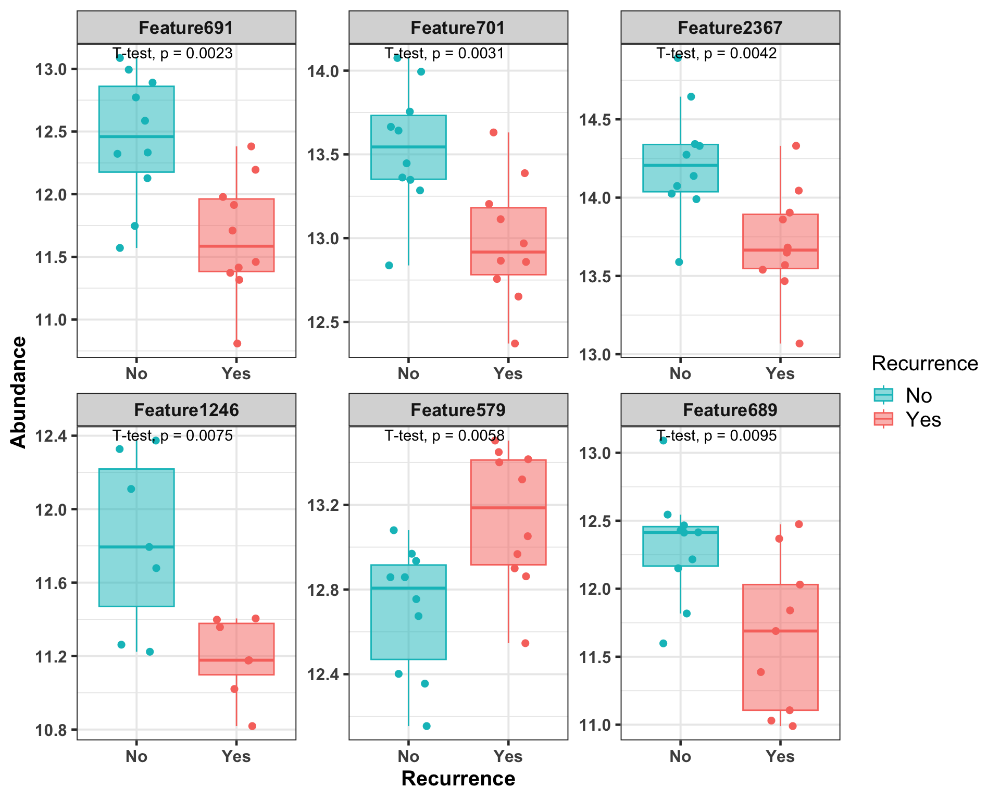
Use probabilistic dropout model to account for missing values and identify differentially abundant entities that are significantly associated with cancer recurrence. Note that features in heatmap are ordered by their t-statistics.
# Fit linear probabilistic dropout model to normalized data
fit <- proDA::proDA(datMat, design = ~ smpAnno$Recurrence)
# fit
# Check coefficient names for Parameter 'contrast' in proDA::test_diff()
# proDA::result_names(fit)
# Identify significant differentially abundant entities
all_proDALipFoloRes <- proDA::test_diff(fit,
contrast = Intercept + `smpAnno$RecurrenceYes` - Intercept,
sort_by = 'pval')
proDALipFoloRes <- dplyr::select(all_proDALipFoloRes,
-c(diff, se, df, avg_abundance, n_approx)) %>%
dplyr::filter(pval < 0.05) %>%
dplyr::mutate(MZ_RT = plyr::mapvalues(name,
from = featInfo$Feature,
to = featInfo$m.z_RT,
warn_missing = F))
proDALipFoloRes name pval adj_pval t_statistic n_obs MZ_RT
1 Feature1813 0.0003292981 0.5727847 -4.421674 20 800.55/5.78
2 Feature1962 0.0007546431 0.5727847 -4.048032 20 790.63/6.24
3 Feature1826 0.0009385900 0.5727847 -3.950090 20 784.58/5.8
4 Feature1804 0.0010308735 0.5727847 -3.908000 20 752.56/5.74
5 Feature990 0.0018820829 0.5727847 3.637793 20 883.79/1.05
6 Feature1822 0.0020531715 0.5727847 -3.598690 20 762.60/5.79
7 Feature1948 0.0022360976 0.5727847 -3.560311 20 780.59/6.2
8 Feature1885 0.0024126130 0.5727847 -3.526122 20 817.64/5.87
9 Feature1111 0.0026531962 0.5727847 -3.483316 17 520.34/1.88
10 Feature1809 0.0028120630 0.5727847 -3.457107 20 778.57/5.74
11 Feature1743 0.0033624691 0.5727847 -3.376430 20 767.57/5.56
12 Feature1858 0.0050722809 0.5727847 -3.190043 20 838.63/5.84
13 Feature1807 0.0052360677 0.5727847 -3.175575 20 796.52/5.75
14 Feature1736 0.0054974034 0.5727847 -3.153382 20 816.59/5.56
15 Feature335 0.0057750512 0.5727847 -3.130907 20 723.54/4.02
16 Feature1159 0.0058073988 0.5727847 -3.128357 20 508.38/2.55
17 Feature1984 0.0058180829 0.5727847 -3.127518 17 814.63/6.24
18 Feature1403 0.0058622917 0.5727847 -3.124062 20 790.57/4.71
19 Feature1970 0.0059036956 0.5727847 -3.120849 17 787.60/6.24
20 Feature794 0.0064720087 0.5727847 3.078831 2 336.06/0.8
21 Feature1142 0.0069644007 0.5727847 -3.045238 20 524.37/2.38
22 Feature1565 0.0072150763 0.5727847 -3.029014 20 792.59/5.17
23 Feature1582 0.0072711307 0.5727847 -3.025461 20 887.57/5.18
24 Feature1143 0.0074823599 0.5727847 -3.012308 20 614.34/2.38
25 Feature251 0.0076082654 0.5727847 3.004639 19 268.26/2.3
26 Feature195 0.0083705616 0.5727847 -2.960680 13 241.17/1.41
27 Feature1873 0.0083988845 0.5727847 -2.959122 16 833.65/5.86
28 Feature1454 0.0088522873 0.5727847 -2.934859 20 766.57/4.9
29 Feature1100 0.0091757328 0.5727847 -2.918275 7 448.34/1.73
30 Feature1140 0.0092143915 0.5727847 -2.916331 18 496.34/2.25
31 Feature1421 0.0094431225 0.5727847 -2.904987 20 816.59/4.78
32 Feature1856 0.0094798006 0.5727847 -2.903192 19 823.64/5.84
33 Feature879 0.0094896402 0.5727847 2.902712 11 770.85/1.04
34 Feature1827 0.0102353998 0.5727847 -2.867646 18 827.63/5.8
35 Feature410 0.0102742535 0.5727847 -2.865887 14 812.54/4.64
36 Feature1141 0.0106506422 0.5727847 -2.849175 20 524.37/2.27
37 Feature1132 0.0109350506 0.5727847 -2.836920 20 480.34/2.08
38 Feature2335 0.0112004904 0.5727847 2.825756 19 924.75/7.93
39 Feature1063 0.0114973538 0.5727847 2.813568 20 384.85/1.08
40 Feature1838 0.0120518916 0.5727847 -2.791590 20 839.63/5.84
41 Feature1949 0.0120923905 0.5727847 -2.790023 20 730.57/6.2
42 Feature1768 0.0121362617 0.5727847 -2.788332 20 752.56/5.58
43 Feature541 0.0122999608 0.5727847 -2.782071 11 836.65/5.86
44 Feature1867 0.0125228398 0.5727847 -2.773675 20 814.63/5.87
45 Feature2348 0.0135268753 0.5727847 2.737545 12 916.83/7.91
46 Feature244 0.0136551191 0.5727847 2.733116 16 559.52/2.19
47 Feature896 0.0138654497 0.5727847 2.725939 20 930.79/1.06
48 Feature974 0.0140481706 0.5727847 2.719787 20 917.78/1.04
49 Feature1735 0.0141292793 0.5727847 -2.717081 20 776.56/5.57
50 Feature1425 0.0151450754 0.5727847 -2.684392 20 792.59/4.82
51 Feature1921 0.0151879873 0.5727847 -2.683058 19 794.60/6
52 Feature542 0.0154596982 0.5727847 -2.674692 20 837.62/5.87
53 Feature255 0.0154612928 0.5727847 -2.674643 20 604.31/2.38
54 Feature2347 0.0155377986 0.5727847 2.672313 17 680.48/7.91
55 Feature2411 0.0160364343 0.5727847 2.657388 12 902.82/8.04
56 Feature966 0.0161840967 0.5727847 2.653053 15 846.82/1.04
57 Feature1144 0.0161908510 0.5727847 -2.652856 20 786.25/2.38
58 Feature2272 0.0163828642 0.5727847 2.647277 18 898.72/7.83
59 Feature1268 0.0163878792 0.5727847 -2.647132 20 721.58/4.23
60 Feature989 0.0170919283 0.5727847 2.627202 20 964.78/1.05
61 Feature851 0.0171770588 0.5727847 2.624845 19 818.78/1
62 Feature831 0.0172663023 0.5727847 2.622387 20 361.02/0.87
63 Feature92 0.0173244997 0.5727847 2.620790 19 614.82/0.99
64 Feature1828 0.0173310559 0.5727847 -2.620610 20 785.59/5.81
65 Feature89 0.0177233664 0.5727847 2.609980 20 546.83/0.99
66 Feature235 0.0179091197 0.5727847 2.605025 19 228.23/1.99
67 Feature929 0.0181281189 0.5727847 2.599245 20 841.81/1.04
68 Feature1463 0.0181625551 0.5727847 -2.598342 20 815.57/4.91
69 Feature83 0.0185780300 0.5727847 2.587576 20 488.96/0.96
70 Feature274 0.0195165667 0.5727847 2.564072 19 270.28/2.63
71 Feature2464 0.0201954853 0.5727847 2.547727 14 932.86/8.14
72 Feature1579 0.0202050410 0.5727847 -2.547501 20 768.59/5.19
73 Feature866 0.0203457042 0.5727847 2.544181 20 488.87/1.02
74 Feature1546 0.0204000431 0.5727847 -2.542905 20 724.53/5.13
75 Feature141 0.0204594675 0.5727847 2.541512 20 875.80/1.04
76 Feature697 0.0207187952 0.5727847 2.535480 19 949.75/7.9
77 Feature242 0.0209433798 0.5727847 -2.530313 19 497.34/2.05
78 Feature2036 0.0209718185 0.5727847 -2.529663 12 828.69/6.48
79 Feature166 0.0213583302 0.5727847 2.520903 16 794.81/1.06
80 Feature1213 0.0216746717 0.5727847 -2.513845 6 360.32/3.84
81 Feature1861 0.0219121912 0.5727847 -2.508609 20 728.56/5.85
82 Feature1124 0.0219430745 0.5727847 -2.507932 10 1,039.67/1.97
83 Feature574 0.0221270801 0.5727847 -2.503917 20 817.69/6.26
84 Feature1135 0.0222212432 0.5727847 -2.501875 20 482.36/2.13
85 Feature1459 0.0224034624 0.5727847 -2.497946 20 748.53/4.9
86 Feature1676 0.0224948751 0.5727847 2.495986 20 736.54/5.43
87 Feature243 0.0226261463 0.5727847 2.493185 19 242.25/2.15
88 Feature1351 0.0227797798 0.5727847 -2.489926 20 858.60/4.51
89 Feature256 0.0231310933 0.5727847 -2.482551 20 608.32/2.38
90 Feature2186 0.0231399852 0.5727847 2.482366 20 929.75/7.73
91 Feature68 0.0233637789 0.5727847 2.477724 20 344.23/0.86
92 Feature160 0.0237096178 0.5727847 2.470633 19 896.79/1.05
93 Feature1227 0.0241105006 0.5727847 -2.462534 20 701.56/4.02
94 Feature1087 0.0244401332 0.5727847 -2.455968 17 286.14/1.32
95 Feature676 0.0246203883 0.5727847 2.452413 18 1,015.71/7.8
96 Feature656 0.0246695825 0.5727847 2.451447 15 925.80/7.6
97 Feature440 0.0248037254 0.5727847 -2.448822 19 807.64/4.92
98 Feature1468 0.0248614200 0.5727847 -2.447698 20 814.57/4.89
99 Feature1145 0.0253436239 0.5727847 -2.438391 20 666.31/2.38
100 Feature968 0.0256865452 0.5727847 2.431872 20 807.82/1.04
101 Feature685 0.0256908486 0.5727847 -2.431791 15 708.65/7.8
102 Feature1700 0.0259385302 0.5727847 -2.427135 20 820.62/5.47
103 Feature2275 0.0264518282 0.5727847 2.417615 19 882.75/7.81
104 Feature672 0.0267314736 0.5727847 2.412502 20 947.73/7.79
105 Feature1981 0.0267374829 0.5727847 -2.412393 20 799.67/6.26
106 Feature935 0.0268499979 0.5727847 2.410350 20 998.77/1.05
107 Feature125 0.0269312393 0.5727847 2.408880 18 739.83/1.04
108 Feature891 0.0274573625 0.5727847 2.399459 18 828.81/1.05
109 Feature947 0.0275480793 0.5727847 2.397851 20 724.78/1.07
110 Feature859 0.0276518678 0.5727847 2.396018 20 352.90/1.02
111 Feature1863 0.0276804399 0.5727847 -2.395515 20 811.67/5.86
112 Feature1485 0.0277681245 0.5727847 -2.393973 20 774.54/4.96
113 Feature537 0.0279063229 0.5727847 -2.391552 18 815.68/5.86
114 Feature912 0.0285258591 0.5727847 2.380834 20 972.77/1.06
115 Feature1243 0.0290890716 0.5727847 -2.371277 20 830.57/4.07
116 Feature1056 0.0291438892 0.5727847 2.370356 20 878.73/1.07
117 Feature1642 0.0293206642 0.5727847 -2.367398 20 794.60/5.38
118 Feature1675 0.0293809296 0.5727847 -2.366393 18 768.59/5.41
119 Feature1871 0.0294773383 0.5727847 -2.364789 20 850.63/5.86
120 Feature1503 0.0295862454 0.5727847 -2.362984 20 742.57/5.04
121 Feature168 0.0299324757 0.5727847 2.357284 18 904.78/1.06
122 Feature1793 0.0300414960 0.5727847 -2.355502 19 813.62/5.65
123 Feature887 0.0304723806 0.5727847 2.348518 20 776.79/1.06
124 Feature91 0.0305198668 0.5727847 2.347754 20 682.81/0.99
125 Feature1223 0.0308812371 0.5727847 -2.341976 20 854.57/3.93
126 Feature413 0.0314145781 0.5727847 2.333561 20 1,148.34/4.73
127 Feature906 0.0315477177 0.5727847 2.331482 20 684.84/1.04
128 Feature854 0.0318941482 0.5727847 2.326108 20 886.77/1
129 Feature1599 0.0322230995 0.5727847 -2.321055 9 780.59/5.25
130 Feature937 0.0322422209 0.5727847 2.320763 20 849.80/1.04
131 Feature252 0.0324818342 0.5727847 -2.317115 20 428.37/2.35
132 Feature1781 0.0329208861 0.5727847 -2.310494 20 770.60/5.66
133 Feature361 0.0329604266 0.5727847 -2.309902 20 594.48/4.23
134 Feature2470 0.0331873825 0.5727847 2.306516 14 948.89/8.16
135 Feature82 0.0334004205 0.5727847 2.303357 16 284.99/0.96
136 Feature1966 0.0339321564 0.5727847 -2.295552 11 759.64/6.24
137 Feature730 0.0340614871 0.5727847 2.293671 20 973.90/7.98
138 Feature295 0.0341841612 0.5727847 2.291892 20 391.28/3.12
139 Feature536 0.0342038992 0.5727847 -2.291607 20 729.56/5.84
140 Feature1092 0.0342092995 0.5727847 -2.291529 20 518.32/1.56
141 Feature1148 0.0349343602 0.5727847 -2.281145 20 682.33/2.38
142 Feature1279 0.0350346385 0.5727847 2.279724 20 338.34/4.25
143 Feature1069 0.0361331479 0.5727847 2.264406 20 368.87/1.06
144 Feature573 0.0362304768 0.5727847 -2.263070 20 791.68/6.26
145 Feature2225 0.0370977052 0.5727847 -2.251306 19 669.56/7.8
146 Feature1103 0.0377916154 0.5727847 2.242075 20 336.23/1.76
147 Feature174 0.0378059919 0.5727847 2.241886 20 946.72/1.07
148 Feature980 0.0379073814 0.5727847 2.240551 20 436.86/1.06
149 Feature919 0.0379627004 0.5727847 2.239824 20 815.80/1.05
150 Feature1042 0.0381699997 0.5727847 2.237107 20 1,100.76/1.05
151 Feature2285 0.0382156989 0.5727847 2.236511 20 931.77/7.87
152 Feature1395 0.0385271911 0.5727847 -2.232459 9 703.57/4.65
153 Feature416 0.0388150830 0.5727847 2.228742 20 770.56/4.73
154 Feature1935 0.0392687674 0.5727847 -2.222934 20 772.62/6.06
155 Feature900 0.0392814280 0.5727847 2.222773 17 862.80/1.06
156 Feature137 0.0395072092 0.5727847 2.219907 17 739.83/1.04
157 Feature133 0.0397208401 0.5727847 2.217209 20 1,045.77/1.04
158 Feature865 0.0400831843 0.5727847 2.212663 20 420.88/1.02
159 Feature926 0.0401361617 0.5727847 2.212001 20 1,142.74/1.06
160 Feature1731 0.0405774844 0.5727847 -2.206522 20 744.59/5.55
161 Feature1147 0.0407329912 0.5727847 -2.204604 10 682.33/2.38
162 Feature2208 0.0408162092 0.5727847 2.203581 14 300.14/7.72
163 Feature2229 0.0422660635 0.5727847 2.186050 18 907.76/7.8
164 Feature1058 0.0425517898 0.5727847 2.182660 20 640.82/1.06
165 Feature682 0.0425616220 0.5727847 -2.182544 20 707.65/7.8
166 Feature129 0.0427391212 0.5727847 2.180449 20 943.79/1.04
167 Feature880 0.0434670135 0.5727847 2.171941 20 922.80/1.06
168 Feature2188 0.0434977537 0.5727847 2.171585 20 966.84/7.74
169 Feature245 0.0436841214 0.5727847 2.169429 20 263.24/2.19
170 Feature717 0.0437988389 0.5727847 2.168106 20 985.90/7.96
171 Feature1067 0.0438282401 0.5727847 2.167768 20 980.76/1.05
172 Feature334 0.0438542619 0.5727847 -2.167468 20 859.52/4.02
173 Feature1363 0.0439257967 0.5727847 -2.166646 17 806.56/4.56
174 Feature890 0.0441503090 0.5727847 2.164073 20 956.79/1.04
175 Feature1160 0.0441649526 0.5727847 -2.163905 20 510.39/2.62
176 Feature2302 0.0442062340 0.5727847 2.163434 20 968.86/7.87
177 Feature1562 0.0444356951 0.5727847 -2.160819 15 806.60/5.16
178 Feature2206 0.0444529687 0.5727847 2.160623 20 880.74/7.71
179 Feature1112 0.0445325501 0.5727847 -2.159720 20 496.34/1.94
180 Feature1018 0.0447793580 0.5727847 2.156927 20 462.86/1.07
181 Feature1391 0.0448235351 0.5727847 -2.156428 17 885.56/4.61
182 Feature2234 0.0455277586 0.5727847 2.148544 20 916.83/7.79
183 Feature2293 0.0455774932 0.5727847 2.147991 17 954.84/7.87
184 Feature1558 0.0455882885 0.5727847 -2.147871 20 769.59/5.14
185 Feature1458 0.0456136240 0.5727847 -2.147590 20 716.56/4.9
186 Feature1937 0.0456246860 0.5727847 -2.147467 20 748.62/6.09
187 Feature1219 0.0465522735 0.5727847 2.137269 8 338.34/3.87
188 Feature692 0.0466874633 0.5727847 2.135799 20 867.74/7.85
189 Feature1575 0.0467396248 0.5727847 -2.135232 20 750.54/5.18
190 Feature1003 0.0468175832 0.5727847 2.134387 20 656.79/1.08
191 Feature857 0.0469060426 0.5727847 2.133429 20 352.90/1.02
192 Feature793 0.0471395004 0.5727847 2.130909 18 684.04/0.77
193 Feature2343 0.0472474539 0.5727847 2.129747 20 944.86/7.91
194 Feature1747 0.0475674078 0.5727847 -2.126319 20 817.59/5.56
195 Feature1492 0.0477815185 0.5727847 -2.124037 20 911.57/4.97
196 Feature206 0.0479042846 0.5727847 -2.122733 20 468.31/1.58
197 Feature221 0.0483030092 0.5727847 -2.118517 20 523.36/1.93
198 Feature1364 0.0483370325 0.5727847 -2.118159 20 859.54/4.58
199 Feature2294 0.0484850247 0.5727847 2.116603 18 955.85/7.86
200 Feature1501 0.0485567342 0.5727847 -2.115851 17 766.57/5.01
201 Feature1782 0.0488769322 0.5727847 -2.112504 20 812.61/5.66
202 Feature970 0.0490182778 0.5727847 2.111033 20 857.78/1.05
203 Feature1963 0.0494239226 0.5727847 -2.106833 20 788.61/6.25
204 Feature1139 0.0495749335 0.5727847 -2.105278 20 508.38/2.2
205 Feature1974 0.0498164849 0.5727847 -2.102798 16 785.65/6.28# Plot molecular signatures in input data
# Order features according to t-statistics
featOrder <- dplyr::arrange(proDALipFoloRes, dplyr::desc(t_statistic))$name
pheatmap::pheatmap(datMat[featOrder, smpOrder], #Feature794 only has 2 observed values
annotation_col = smpRecur,
color = colorRampPalette(c('navy', 'white', 'red'))(100),
cluster_rows = F, cluster_cols = F, show_rownames = F,
scale = 'row', main = 'Follow-up plasma lipidomics (proDA)')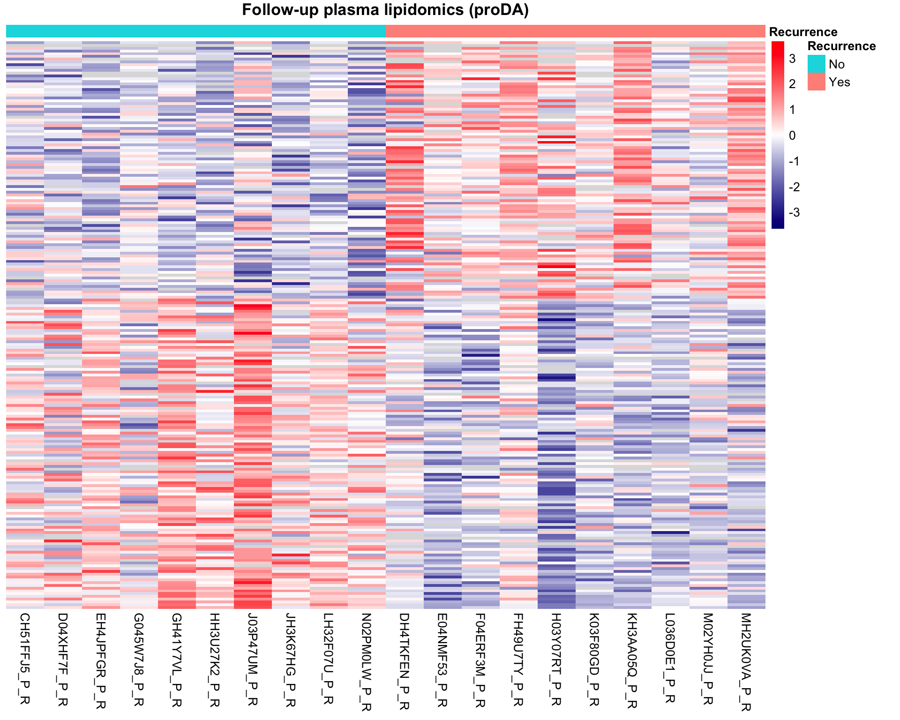
# Store table in list for creating Excel file
sigFeatSheet <- append(sigFeatSheet, list(FolloPlasmaLipid_Feats = proDALipFoloRes))ovl <- intersect(lipFoloRes$tFeatSigRes$Var1, proDALipFoloRes$name)
cat('The following features', paste0('(n =', length(ovl), ')'),
'are tested significant by both methods:\n', ovl)The following features (n =196) are tested significant by both methods:
Feature1813 Feature1826 Feature990 Feature1395 Feature1962 Feature1804 Feature1822 Feature1885 Feature1948 Feature1743 Feature1111 Feature1809 Feature1858 Feature1063 Feature1807 Feature1403 Feature1736 Feature1970 Feature1984 Feature1159 Feature195 Feature335 Feature1565 Feature866 Feature1142 Feature1582 Feature251 Feature1856 Feature244 Feature2347 Feature1143 Feature1454 Feature989 Feature1873 Feature974 Feature1838 Feature896 Feature1676 Feature2335 Feature1421 Feature1140 Feature1141 Feature1132 Feature887 Feature1058 Feature1827 Feature235 Feature1867 Feature929 Feature1768 Feature1828 Feature831 Feature1949 Feature1279 Feature859 Feature160 Feature1425 Feature968 Feature2464 Feature542 Feature541 Feature947 Feature83 Feature1921 Feature1735 Feature89 Feature851 Feature1227 Feature2208 Feature255 Feature141 Feature1268 Feature912 Feature1144 Feature92 Feature166 Feature1463 Feature879 Feature1087 Feature1067 Feature865 Feature2272 Feature1069 Feature274 Feature574 Feature906 Feature125 Feature1642 Feature980 Feature168 Feature880 Feature1579 Feature1468 Feature1546 Feature1018 Feature935 Feature697 Feature1056 Feature891 Feature243 Feature1459 Feature295 Feature1871 Feature1861 Feature2348 Feature1135 Feature68 Feature1351 Feature2186 Feature413 Feature937 Feature1700 Feature256 Feature970 Feature1003 Feature1145 Feature919 Feature857 Feature440 Feature82 Feature672 Feature334 Feature242 Feature2036 Feature2411 Feature416 Feature2470 Feature1981 Feature676 Feature854 Feature537 Feature2275 Feature91 Feature410 Feature1863 Feature1485 Feature966 Feature1042 Feature656 Feature926 Feature1243 Feature1503 Feature900 Feature361 Feature1675 Feature1223 Feature1103 Feature685 Feature137 Feature174 Feature1781 Feature252 Feature573 Feature133 Feature890 Feature730 Feature793 Feature536 Feature1100 Feature1092 Feature1148 Feature1793 Feature1966 Feature129 Feature2206 Feature2285 Feature1562 Feature1935 Feature1731 Feature2229 Feature221 Feature2225 Feature245 Feature1558 Feature682 Feature2188 Feature1782 Feature717 Feature1458 Feature2302 Feature1160 Feature1937 Feature2234 Feature2343 Feature1575 Feature2293 Feature692 Feature206 Feature1112 Feature1747 Feature1492 Feature1364 Feature1963 Feature1139 Feature2294 Feature1124Visualize data of top 6 significant features
# Visualize data of top 6 significant features
topSigFeats <- proDALipFoloRes$name[1:6]
topSigFeatData <- tibble::as_tibble(datMat[topSigFeats,], rownames = 'Feature') %>%
tidyr::pivot_longer(cols = -'Feature',
names_to = 'Sample', values_to = 'Abundance') %>%
dplyr::mutate(Feature = factor(Feature, levels = topSigFeats)) %>%
dplyr::left_join(smpAnno, by = 'Sample')
ggplot(topSigFeatData, aes(x=Recurrence, y=Abundance, col=Recurrence, fill=Recurrence)) +
geom_boxplot(alpha = 0.5, outlier.shape = NA) +
geom_jitter(position = position_jitter(0.2), size = 2, show.legend = F) +
scale_color_manual(values=c('#00BFC4', '#F8766D')) +
scale_fill_manual(values=c('#00BFC4', '#F8766D')) +
facet_wrap(vars(Feature), scales = 'free') +
ggpubr::stat_compare_means(method = 't.test', paired = F,
method.args = list(var.equal = T),
show.legend = F)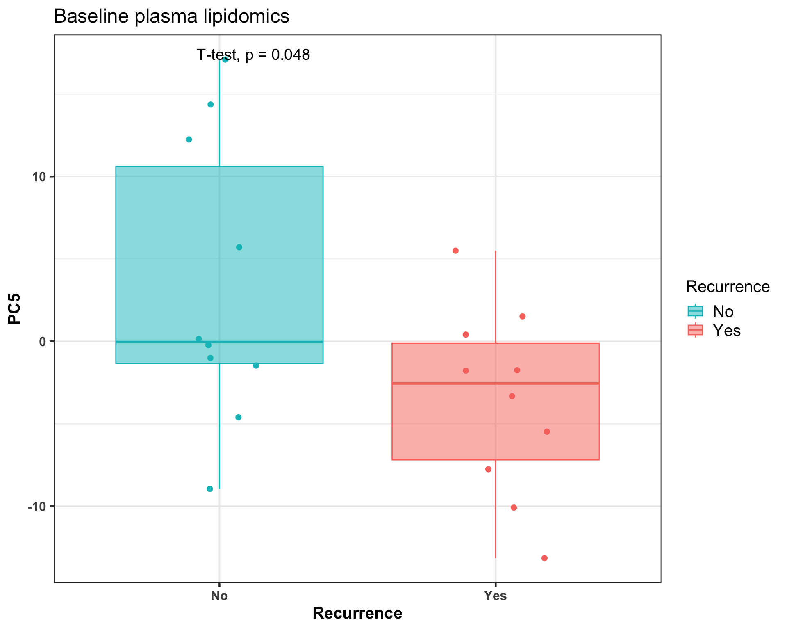
Display significant associations between PCs (Var1) and cancer recurrence (Var2)
# Display PCs that can significantly separate recurrence and non-recurrence
# patients
tPCASigRes Var1 Var2 pVal tStats pValAdj
1 PC20 Recurrence 0.04568832 -2.146762 0.5336206# Display proportion of total variance captured by all PCs explained by each PC
varExplained <- pcaRes$sdev^2 / sum(pcaRes$sdev^2)
PC <- paste0('PC', seq(length(varExplained)))
varTab <- data.frame(PC = factor(PC, levels = PC),
Var_explained = varExplained)
ggplot(varTab, aes(x=PC, y=Var_explained*100)) +
geom_col() +
labs(x = '', y = 'Variance explained (%)',
title = 'Follow-up plasma lipidomics')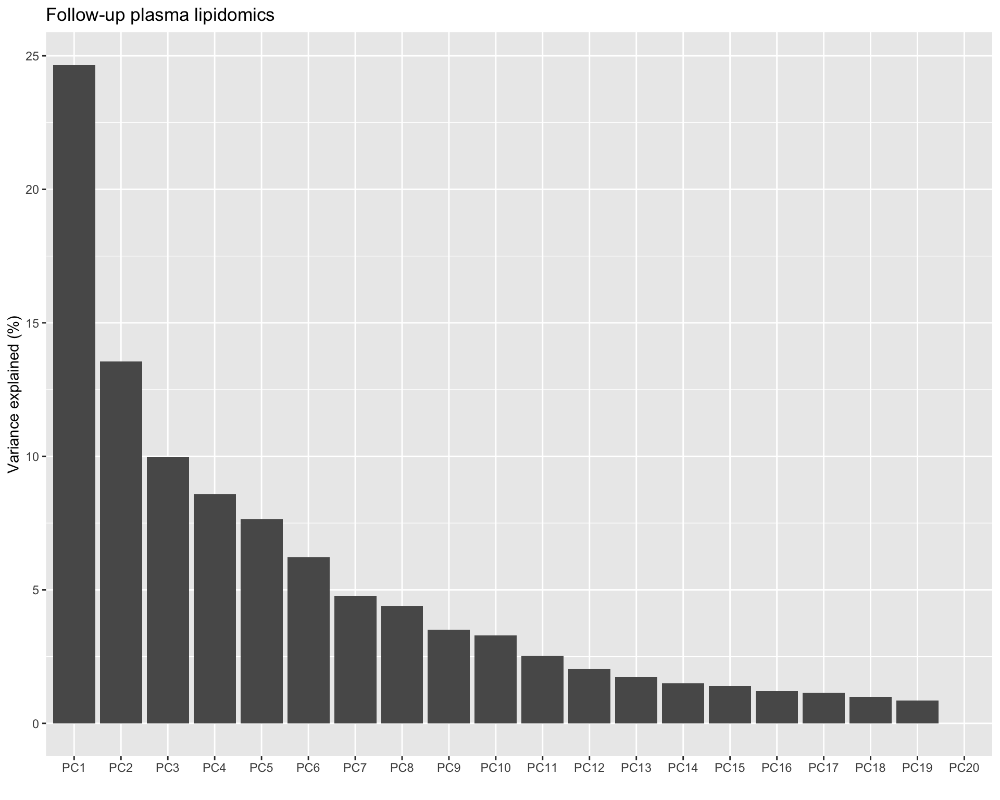
Changes in time course
Differences between Follow-up and Baseline samples (Follow-up matrix
- baseline matrix):
Display significant associations between features (Var1) and cancer recurrence (Var2) and observe molecular signatures in input data through heatmap. Note that features in heatmap are ordered by their t-statistics.
# Subset Baseline samples
smpBaseIdx <- which(colData(lipPlasmaVsn)$Condition == 'Baseline')
lipBase <- lipPlasmaVsn[, smpBaseIdx]
# Subset follow-up samples
smpFoloIdx <- which(colData(lipPlasmaVsn)$Condition != 'Baseline')
lipFolo <- lipPlasmaVsn[, smpFoloIdx]
# Modify column names for matching two matrices
colnames(lipBase) <- stringr::str_remove(colnames(lipBase), '_P_B')
colnames(lipFolo) <- stringr::str_remove(colnames(lipFolo), '_P_R')
# Retrieve data matrix
lipBaseMat <- SummarizedExperiment::assay(lipBase)
lipFoloMat <- SummarizedExperiment::assay(lipFolo)
# Subtract follow-up matrix by baseline matrix
if (identical(colnames(lipBaseMat), colnames(lipFoloMat)) &
identical(rownames(lipBaseMat), rownames(lipFoloMat))) {
lipPlasmaDiffMat <- lipFoloMat - lipBaseMat
} else {
print('Align samples or features first.')
}
# Retrieve samples metadata for creating SE object
colAnno <- dplyr::select(as.data.frame(colData(lipBase)), Patient, Recurrence)
lipPlasmaDiff <- SummarizedExperiment(assays = lipPlasmaDiffMat, colData = colAnno)
# Perform analysis
lipPlasmaDiffRes <- SOA(lipPlasmaDiff, fac = 'Recurrence', num_feats = 30)
datMat <- lipPlasmaDiffRes$data
smpAnno <- lipPlasmaDiffRes$smpMetadata
tFeatSigRes <- lipPlasmaDiffRes$tFeatSigRes
tPCASigRes <- lipPlasmaDiffRes$tPCASigRes
pcaRes <- lipPlasmaDiffRes$pcaRes
pcTab <- lipPlasmaDiffRes$pcTab
pcTopFeatTab <- lipPlasmaDiffRes$pcTopFeatTab
# Display features that can significantly separate recurrence and non-recurrence
# patients
sigFeatTab <- dplyr::mutate(tFeatSigRes, m.z_RT = plyr::mapvalues(Var1,
from = featInfo$Feature,
to = featInfo$m.z_RT,
warn_missing = F))
sigFeatTab Var1 Var2 pVal tStats pValAdj m.z_RT
1 Feature1111 Recurrence 5.181274e-05 6.119381 0.1247651 520.34/1.88
2 Feature1628 Recurrence 1.660371e-04 4.975618 0.1999086 814.61/5.28
3 Feature1460 Recurrence 3.165134e-03 -3.403747 0.9958862 875.56/4.9
4 Feature1962 Recurrence 7.277459e-03 3.025062 0.9958862 790.63/6.24
5 Feature1979 Recurrence 7.548620e-03 3.263743 0.9958862 760.58/6.25
6 Feature1838 Recurrence 8.878383e-03 2.933500 0.9958862 839.63/5.84
7 Feature2044 Recurrence 1.114838e-02 2.827927 0.9958862 645.54/6.67
8 Feature1901 Recurrence 1.298193e-02 2.959714 0.9958862 810.60/5.93
9 Feature638 Recurrence 1.407923e-02 2.718749 0.9958862 695.70/6.75
10 Feature770 Recurrence 1.467875e-02 -2.812342 0.9958862 293.10/0.76
11 Feature1383 Recurrence 1.993976e-02 -2.682630 0.9958862 804.55/4.62
12 Feature1476 Recurrence 2.013514e-02 2.549159 0.9958862 758.57/4.94
13 Feature1970 Recurrence 2.072200e-02 2.743106 0.9958862 787.60/6.24
14 Feature2205 Recurrence 2.091240e-02 -2.794125 0.9958862 953.83/7.71
15 Feature1379 Recurrence 2.189597e-02 3.643543 0.9958862 796.58/4.62
16 Feature1577 Recurrence 2.195042e-02 -2.709554 0.9958862 798.60/5.22
17 Feature530 Recurrence 2.276320e-02 2.490277 0.9958862 799.60/5.82
18 Feature2183 Recurrence 2.426453e-02 -2.703242 0.9958862 737.54/7.68
19 Feature128 Recurrence 2.553771e-02 -6.137121 0.9958862 773.82/1.04
20 Feature1582 Recurrence 2.574194e-02 2.430827 0.9958862 887.57/5.18
21 Feature2186 Recurrence 2.647115e-02 -2.417260 0.9958862 929.75/7.73
22 Feature2487 Recurrence 2.718564e-02 -2.904186 0.9958862 736.54/8.92
23 Feature629 Recurrence 2.808035e-02 2.388519 0.9958862 682.63/6.67
24 Feature1391 Recurrence 2.883896e-02 2.597867 0.9958862 885.56/4.61
25 Feature2347 Recurrence 2.925339e-02 -2.428030 0.9958862 680.48/7.91
26 Feature1830 Recurrence 2.983137e-02 2.358942 0.9958862 788.62/5.84
27 Feature1351 Recurrence 3.007061e-02 2.366888 0.9958862 858.60/4.51
28 Feature1326 Recurrence 3.043264e-02 2.349159 0.9958862 852.61/4.44
29 Feature709 Recurrence 3.140494e-02 -2.333712 0.9958862 807.67/7.94
30 Feature1816 Recurrence 3.212670e-02 2.322531 0.9958862 810.60/5.82
31 Feature336 Recurrence 3.230162e-02 2.319856 0.9958862 902.57/4.02
32 Feature1822 Recurrence 3.240738e-02 2.318246 0.9958862 762.60/5.79
33 Feature1809 Recurrence 3.304812e-02 2.308591 0.9958862 778.57/5.74
34 Feature598 Recurrence 3.308437e-02 -2.308050 0.9958862 475.41/6.3
35 Feature2370 Recurrence 3.395047e-02 -2.295285 0.9958862 748.66/7.94
36 Feature1676 Recurrence 3.517407e-02 -2.277756 0.9958862 736.54/5.43
37 Feature2329 Recurrence 3.663318e-02 -2.257575 0.9958862 682.65/7.92
38 Feature1850 Recurrence 3.754725e-02 2.245308 0.9958862 832.65/5.84
39 Feature1143 Recurrence 3.807092e-02 2.238404 0.9958862 614.34/2.38
40 Feature1646 Recurrence 3.827207e-02 2.235775 0.9958862 762.59/5.36
41 Feature2360 Recurrence 3.832442e-02 -3.042071 0.9958862 920.86/7.96
42 Feature2193 Recurrence 3.919681e-02 -2.223851 0.9958862 992.86/7.73
43 Feature842 Recurrence 3.964653e-02 2.268480 0.9958862 229.15/0.96
44 Feature2264 Recurrence 4.006836e-02 -2.358314 0.9958862 923.73/7.81
45 Feature1948 Recurrence 4.015238e-02 2.211799 0.9958862 780.59/6.2
46 Feature1508 Recurrence 4.101613e-02 3.447337 0.9958862 818.60/5.04
47 Feature1989 Recurrence 4.147832e-02 2.491945 0.9958862 811.60/6.26
48 Feature44 Recurrence 4.175126e-02 2.303808 0.9958862 603.07/0.78
49 Feature1142 Recurrence 4.184663e-02 2.191064 0.9958862 524.37/2.38
50 Feature1606 Recurrence 4.201004e-02 -15.131989 0.9958862 808.58/5.25
51 Feature1103 Recurrence 4.249711e-02 -2.193102 0.9958862 336.23/1.76
52 Feature1826 Recurrence 4.265679e-02 2.181420 0.9958862 784.58/5.8
53 Feature1514 Recurrence 4.271957e-02 4.681815 0.9958862 856.58/5.08
54 Feature2042 Recurrence 4.311236e-02 -2.176070 0.9958862 774.36/6.69
55 Feature410 Recurrence 4.321486e-02 2.463943 0.9958862 812.54/4.64
56 Feature473 Recurrence 4.344154e-02 2.172237 0.9958862 797.08/5.27
57 Feature1768 Recurrence 4.360605e-02 2.170331 0.9958862 752.56/5.58
58 Feature1140 Recurrence 4.362451e-02 2.203245 0.9958862 496.34/2.25
59 Feature2049 Recurrence 4.443263e-02 2.160854 0.9958862 647.46/6.73
60 Feature2051 Recurrence 4.524061e-02 2.151745 0.9958862 622.61/6.75
61 Feature697 Recurrence 4.568078e-02 -2.156234 0.9958862 949.75/7.9
62 Feature1362 Recurrence 4.597507e-02 2.143593 0.9958862 888.57/4.54
63 Feature1141 Recurrence 4.611080e-02 2.142100 0.9958862 524.37/2.27
64 Feature2206 Recurrence 4.614045e-02 -2.141774 0.9958862 880.74/7.71
65 Feature529 Recurrence 4.647604e-02 2.138100 0.9958862 810.60/5.82
66 Feature2430 Recurrence 4.740362e-02 -2.128072 0.9958862 695.65/8.09
67 Feature1828 Recurrence 4.803669e-02 2.121329 0.9958862 785.59/5.81
68 Feature456 Recurrence 4.868628e-02 -2.114495 0.9958862 429.37/5.1
69 Feature457 Recurrence 4.880868e-02 2.113216 0.9958862 882.60/5.11
70 Feature1202 Recurrence 4.886403e-02 -3.212470 0.9958862 327.25/3.63
71 Feature2260 Recurrence 4.996184e-02 -2.179239 0.9958862 976.83/7.77# Plot molecular signatures in input data
# Order features according to t-statistics
featOrder <- dplyr::arrange(tFeatSigRes, dplyr::desc(tStats))$Var1
# Arrange samples to make same groups in same clusters
smpOrder <- c(which(smpAnno$Recurrence == 'No'),
which(smpAnno$Recurrence == 'Yes'))
# Prepare recurrence table for annotating samples in heatmap
smpRecur <- dplyr::select(smpAnno, Sample, Recurrence) %>%
tibble::column_to_rownames('Sample')
pheatmap::pheatmap(datMat[featOrder, smpOrder],
annotation_col = smpRecur,
color = colorRampPalette(c('navy', 'white', 'red'))(100),
cluster_rows = F, cluster_cols = F, show_rownames = F,
scale = 'row', main = 'Differential plasma lipidomics')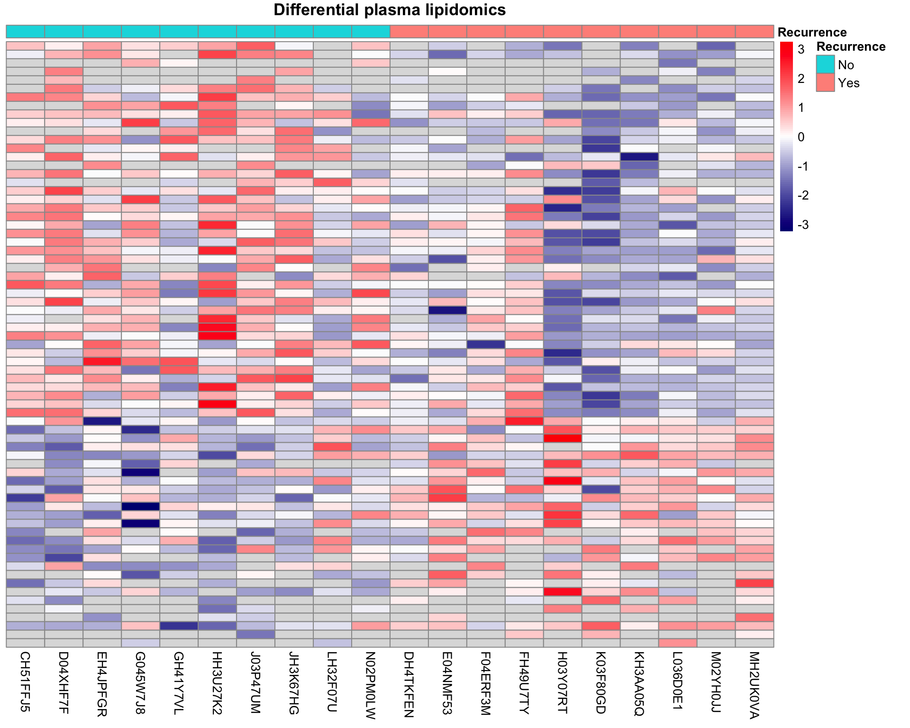
Use probabilistic dropout model to account for missing values and identify differentially abundant entity differences that are significantly associated with cancer recurrence. Note that features in heatmap are ordered by their t-statistics.
# Fit linear probabilistic dropout model to normalized data
fit <- proDA::proDA(datMat, design = ~ smpAnno$Recurrence)
# fit
# Check coefficient names for Parameter 'contrast' in proDA::test_diff()
# proDA::result_names(fit)
# Identify significant differentially abundant entities
proDALipPlasmaDiffRes <- proDA::test_diff(fit,
contrast = Intercept + `smpAnno$RecurrenceYes` - Intercept,
sort_by = 'pval', n_max = 30) %>%
dplyr::select(-c(diff, se, df, avg_abundance, n_approx)) %>%
dplyr::mutate(m.z_RT = plyr::mapvalues(name,
from = featInfo$Feature,
to = featInfo$m.z_RT,
warn_missing = F))
proDALipPlasmaDiffRes name pval adj_pval t_statistic n_obs m.z_RT
514 Feature1460 0.08060667 0.9999937 1.8512887 20 875.56/4.9
700 Feature1628 0.12330879 0.9999937 -1.6168137 17 814.61/5.28
365 Feature1326 0.18555577 0.9999937 -1.3764800 20 852.61/4.44
1089 Feature1979 0.21318766 0.9999937 -1.2905614 13 760.58/6.25
2048 Feature598 0.22157800 0.9999937 1.2662162 20 475.41/6.3
1910 Feature473 0.22611747 0.9999937 -1.2533423 20 797.08/5.27
2093 Feature638 0.23025922 0.9999937 -1.2417699 20 695.70/6.75
720 Feature1646 0.23433084 0.9999937 -1.2305488 20 762.59/5.36
753 Feature1676 0.24060758 0.9999937 1.2135405 20 736.54/5.43
1479 Feature2329 0.24079826 0.9999937 1.2130291 20 682.65/7.92
1847 Feature416 0.25599892 0.9999937 1.1732213 20 770.56/4.73
428 Feature1383 0.25693507 0.9999937 1.1708288 14 804.55/4.62
2015 Feature568 0.26521137 0.9999937 1.1499571 20 1,075.56/6.23
518 Feature1464 0.27419912 0.9999937 1.1278354 20 828.62/4.89
977 Feature1878 0.28130275 0.9999937 1.1107286 20 875.62/5.88
1161 Feature2042 0.28653564 0.9999937 1.0983294 20 774.36/6.69
1592 Feature2430 0.28793266 0.9999937 1.0950473 20 695.65/8.09
312 Feature1279 0.28946169 0.9999937 1.0914684 19 338.34/4.25
364 Feature1325 0.29283191 0.9999937 1.0836284 20 980.50/4.44
1320 Feature2186 0.29534201 0.9999937 1.0778320 20 929.75/7.73
1869 Feature436 0.29759520 0.9999937 1.0726591 20 824.54/4.89
1891 Feature456 0.29821952 0.9999937 1.0712309 20 429.37/5.1
1171 Feature2051 0.30651442 0.9999937 -1.0524565 20 622.61/6.75
49 Feature1041 0.30833106 0.9999937 1.0483938 20 242.93/1.06
498 Feature1446 0.31377308 0.9999937 1.0363250 20 338.34/4.85
1590 Feature2429 0.32469613 0.9999937 1.0125441 20 696.66/8.09
933 Feature1838 0.32506783 0.9999937 -1.0117449 20 839.63/5.84
2118 Feature660 0.32572981 0.9999937 1.0103232 17 228.10/7.7
359 Feature1320 0.34260264 0.9999937 -0.9747506 20 886.51/4.44
589 Feature1528 0.34303645 0.9999937 -0.9738523 20 993.56/5.09# Store table in list for creating Excel file
# sigFeatSheet <- append(sigFeatSheet, list(DiffPlasmaLipid_Feats = proDALipPlasmaDiffRes))We took top 30 differentially abundant features from proDA() to see overlaps
ovl <- intersect(lipPlasmaDiffRes$tFeatSigRes$Var1, proDALipPlasmaDiffRes$name)
cat('The following features', paste0('(n =', length(ovl), ')'),
'are overlapped between two methods:\n', ovl)The following features (n =17) are overlapped between two methods:
Feature1628 Feature1460 Feature1979 Feature1838 Feature638 Feature1383 Feature2186 Feature1326 Feature598 Feature1676 Feature2329 Feature1646 Feature2042 Feature473 Feature2051 Feature2430 Feature456# Filter univariate result for making summarized plot
proDALipPlasmaDiffRes <- dplyr::filter(proDALipPlasmaDiffRes, pval < 0.05)Display significant associations between PCs (Var1) and cancer recurrence (Var2)
# Display PCs that can significantly separate recurrence and non-recurrence
# patients
tPCASigRes Var1 Var2 pVal tStats pValAdj
1 PC18 Recurrence 0.002015163 -3.60709 0.04030325# Display proportion of total variance captured by all PCs explained by each PC
varExplained <- pcaRes$sdev^2 / sum(pcaRes$sdev^2)
PC <- paste0('PC', seq(length(varExplained)))
varTab <- data.frame(PC = factor(PC, levels = PC),
Var_explained = varExplained)
ggplot(varTab, aes(x=PC, y=Var_explained*100)) +
geom_col() +
labs(x = '', y = 'Variance explained (%)',
title = 'Differential plasma lipidomics')PC18 potentially separates recurrence and non-recurrence patients.
# Visualize PCs
ggplot(pcTab, aes(x=Recurrence, y=PC18, col=Recurrence, fill=Recurrence)) +
geom_boxplot(alpha = 0.5, outlier.shape = NA) +
geom_jitter(position = position_jitter(0.2), size = 2, show.legend = F) +
labs(title = 'Differential plasma lipidomics') +
scale_color_manual(values=c('#00BFC4', '#F8766D')) +
scale_fill_manual(values=c('#00BFC4', '#F8766D')) +
ggpubr::stat_compare_means(method = 't.test', paired = F, size = 5,
method.args = list(var.equal = T),
show.legend = F)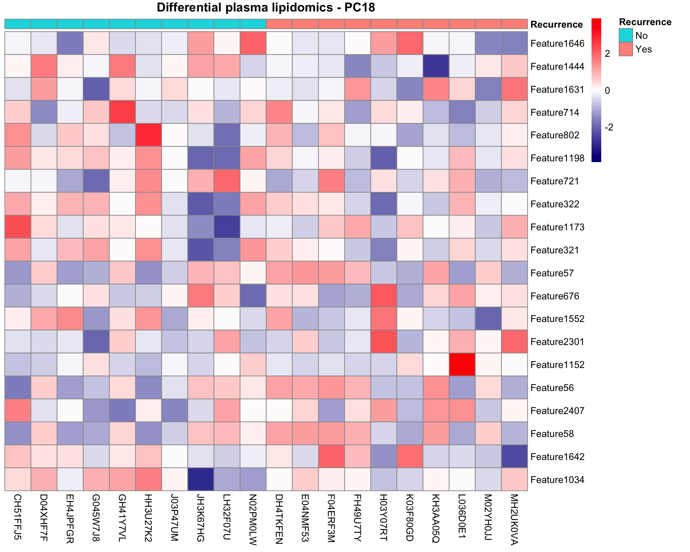
Plot molecular signatures captured by PC4 in input data. We took a look at top 20 features with highest loadings and observed lipid levels of these top features through heatmap. Note that features in heatmap are ordered by their loadings.
# Plot molecular signatures in input data
# Extract top features with highest loadings
topFeats <- pcTopFeatTab$PC18$Feature[1:20]
# Order features by loadings
topFeatsIdx <- sapply(topFeats, function(feat) {which(rownames(datMat) == feat)})
pheatmap::pheatmap(datMat[topFeatsIdx, smpOrder],
annotation_col = smpRecur,
color = colorRampPalette(c('navy', 'white', 'red'))(100),
cluster_rows = F, cluster_cols = F, scale = 'row',
main = 'Differential plasma lipidomics - PC18')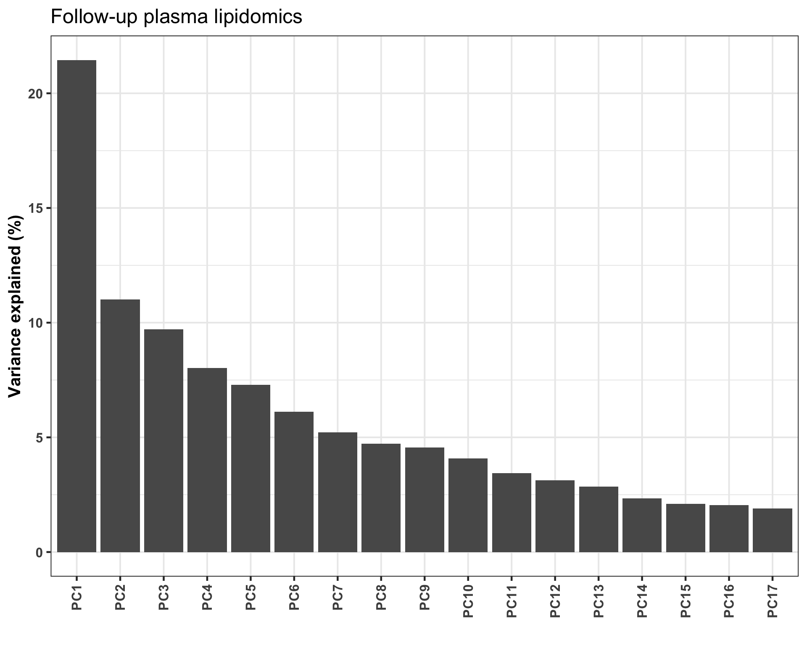
# Display top features with highest loadings of PC of interest
pcTopFeats <- dplyr::left_join(pcTopFeatTab$PC18, featInfo, by = 'Feature')
pcTopFeats Feature Loading m.z_RT
1 Feature1678 0.17277975 809.59/5.45
2 Feature1476 0.15678957 758.57/4.94
3 Feature1663 0.14910256 787.60/5.39
4 Feature732 0.13158961 667.62/8
5 Feature739 0.12288650 725.70/8.1
6 Feature834 0.12163043 280.09/0.85
7 Feature1230 0.11960992 429.37/4.03
8 Feature340 0.10385230 506.46/4.03
9 Feature1205 0.09723126 485.36/3.69
10 Feature2333 0.09254593 876.80/7.92
11 Feature339 0.09198807 1,064.60/4.03
12 Feature75 0.09090217 432.28/0.86
13 Feature694 0.09056275 960.88/7.87
14 Feature1584 0.08991309 828.61/5.18
15 Feature1674 0.07934705 813.62/5.4
16 Feature74 0.07834945 388.25/0.86
17 Feature1184 0.07832469 338.34/3.33
18 Feature2439 0.07688100 370.35/8.08
19 Feature1066 0.07557899 436.86/1.06
20 Feature76 0.07536210 476.31/0.87
21 Feature2310 0.07284204 369.35/7.94
22 Feature2055 0.07171542 650.64/6.83
23 Feature530 0.06976988 799.60/5.82
24 Feature2274 0.06782193 969.86/7.81
25 Feature40 0.06674364 379.99/0.77
26 Feature2306 0.06620548 902.82/7.92
27 Feature2049 0.06618310 647.46/6.73
28 Feature1478 0.06572427 717.56/4.92
29 Feature358 0.06534716 802.53/4.22
30 Feature1762 0.06503919 634.54/5.59# Store table in list for creating Excel file
sigFeatSheet <- append(sigFeatSheet, list(DiffPlasmaLipid_PC18 = pcTopFeats))Tissue Metabolomics
Based on PCA result obtained by analyzing whole Tissue Metabolomics dataset that includes Tumor and Normal samples, we found that PCA mainly captures source of variation in tissue conditions, which is not of direct interest. In addition, Recurrence-related significant PCs do not work that well, perhaps because Tumor and Normal samples are noise to each other. Therefore, we decided to analyze Tumor and Normal samples separately.
# Load normalized data
metaTissueVsn <- readRDS('./data/AG_Hopf/metaTissueVsn.rds')
# Retrieve feature information for making significant feature table
featInfo <- tibble::as_tibble(rowData(metaTissueVsn), rownames = 'Feature')
# Perform analysis
metaTissueRes <- SOA(metaTissueVsn, factor = c('Recurrence', 'Condition'))
tPCASigRes <- metaTissueRes$tPCASigRes
pcaRes <- metaTissueRes$pcaRes
pcTab <- metaTissueRes$pcTabDisplay associations between learned PCs (Var1) and factors (Var2). Basically t-test was performed to test significance of difference between two groups, e.g., recurrence and non-recurrence patient groups or tumor and normal sample groups.
# Display PCs of interest
tPCASigRes Var1 Var2 pVal tStats pValAdj
1 PC2 Condition 7.529826e-07 5.911471 6.023861e-05
2 PC4 Condition 8.242386e-03 -2.787773 3.296954e-01
3 PC1 Condition 1.247445e-02 2.623026 3.326519e-01
4 PC10 Recurrence 2.660487e-02 -2.306903 4.159678e-01
5 PC21 Recurrence 2.892063e-02 2.270660 4.159678e-01
6 PC16 Recurrence 3.119759e-02 2.237474 4.159678e-01PCA tends to capture variation in sample conditions (tumor and normal) and those PCs significantly associated with cancer recurrence do not perform that well.
ggplot(pcTab, aes(x=PC1, y=PC2, col=Condition, shape=Recurrence, group=Patient)) +
geom_point(size = 4) +
geom_line(col = 'grey50', linetype = 'dashed') +
theme(axis.title = element_text(size = 16),
legend.title = element_text(size = 14), legend.text = element_text(size = 12))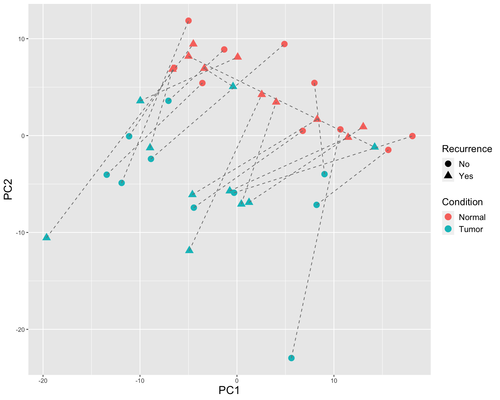
ggplot(pcTab, aes(x=Recurrence, y=PC10, col=Recurrence, fill=Recurrence)) +
geom_boxplot(alpha = 0.5, outlier.shape = NA) +
geom_jitter(position = position_jitter(0.2), size = 2, show.legend = F) +
scale_color_manual(values=c('#00BFC4', '#F8766D')) +
scale_fill_manual(values=c('#00BFC4', '#F8766D')) +
ggpubr::stat_compare_means(method = 't.test', paired = F, size = 6,
method.args = list(var.equal = T), hjust = 0.65,
show.legend = F) +
theme(axis.title = element_text(size = 16),
legend.title = element_text(size = 14), legend.text = element_text(size = 12))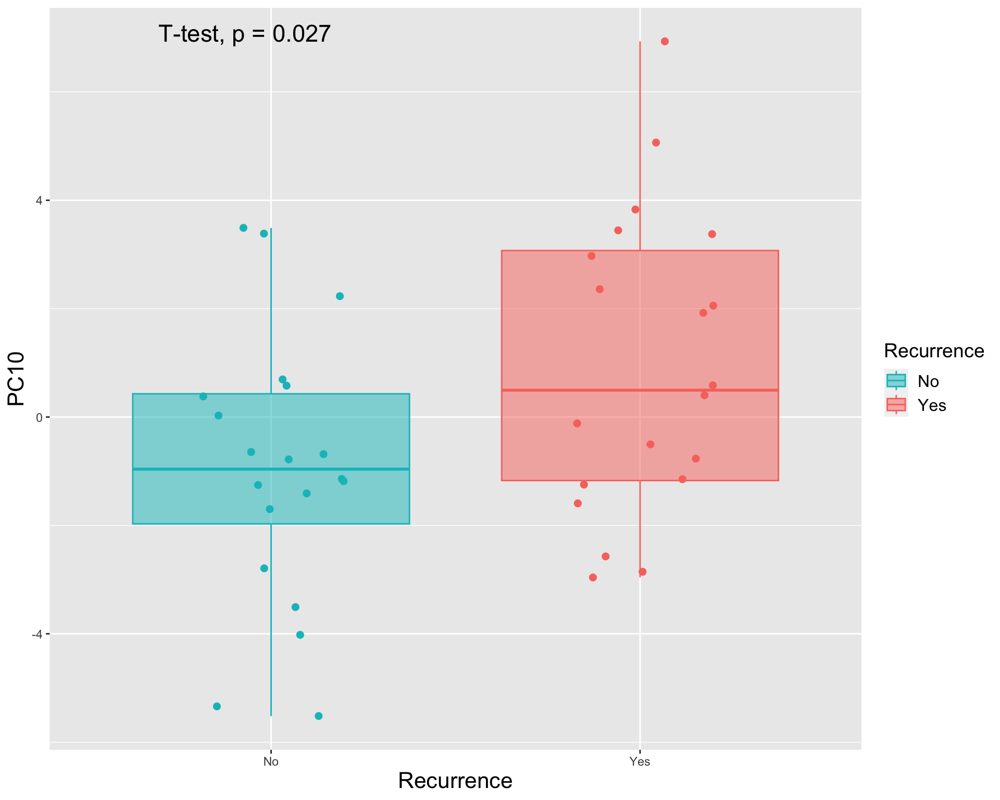
Display variance explained by each PC
# Display proportion of total variance captured by all PCs explained by each PC
varExplained <- pcaRes$sdev^2 / sum(pcaRes$sdev^2)
PC <- paste0('PC', seq(length(varExplained)))
varTab <- data.frame(PC = factor(PC, levels = PC),
Var_explained = varExplained)
ggplot(varTab, aes(x=PC, y=Var_explained*100)) +
geom_col() +
labs(x = '', y = 'Variance explained (%)') +
theme(axis.text.x = element_text(angle = 90, hjust = 1, vjust = 0.5))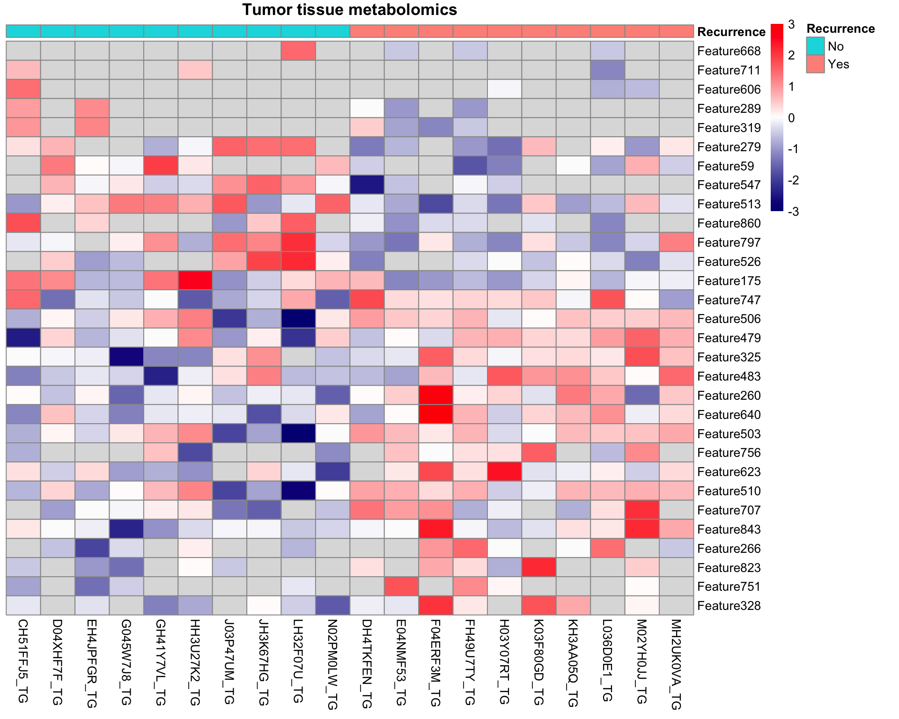
Tumor samples
Display significant associations between features (Var1) and cancer recurrence (Var2) and observe molecular signatures in input data through heatmap. Note that features in heatmap are ordered by their t-statistics.
# Subset tumor samples
smpTumorIdx <- which(colData(metaTissueVsn)$Condition == 'Tumor')
metaTumor <- metaTissueVsn[, smpTumorIdx]
# Perform analysis
metaTumorRes <- SOA(metaTumor, factor = 'Recurrence', num_feats = 30)
datMat <- metaTumorRes$data
smpAnno <- metaTumorRes$smpMetadata
tFeatSigRes <- metaTumorRes$tFeatSigRes
tPCASigRes <- metaTumorRes$tPCASigRes
pcaRes <- metaTumorRes$pcaRes
pcTab <- metaTumorRes$pcTab
pcTopFeatTab <- metaTumorRes$pcTopFeatTab
# Display features that can significantly separate recurrence and non-recurrence
# patients
sigFeatTab <- dplyr::mutate(tFeatSigRes, MZ.RT = plyr::mapvalues(Var1,
from = featInfo$Feature,
to = featInfo$MZ.RT,
warn_missing = F))
sigFeatTab Var1 Var2 pVal tStats pValAdj MZ.RT
1 Feature757 Recurrence 0.0004345902 47.953295 0.5975615 703.57424/7.78
2 Feature417 Recurrence 0.0040627617 -3.541078 0.9996428 229.07946/0.5
3 Feature1356 Recurrence 0.0059850070 -3.198270 0.9996428 426.35737/9.65
4 Feature343 Recurrence 0.0093692553 -2.908621 0.9996428 324.32558/8.74
5 Feature279 Recurrence 0.0127232313 2.886924 0.9996428 772.58438/8.12
6 Feature800 Recurrence 0.0143290367 44.421148 0.9996428 706.5379/7.97
7 Feature1207 Recurrence 0.0163965128 -2.879609 0.9996428 522.35483/9.18
8 Feature59 Recurrence 0.0169808629 2.809593 0.9996428 358.08891/3.3
9 Feature636 Recurrence 0.0190311551 2.745856 0.9996428 179.06368/6.21
10 Feature602 Recurrence 0.0200791786 2.550490 0.9996428 431.15648/5.51
11 Feature409 Recurrence 0.0209403900 -2.626141 0.9996428 525.37397/9.65
12 Feature932 Recurrence 0.0211961799 -2.524560 0.9996428 336.32587/8.32
13 Feature886 Recurrence 0.0217046822 2.527171 0.9996428 783.57202/8.22
14 Feature260 Recurrence 0.0243083199 -2.458584 0.9996428 226.15896/8
15 Feature840 Recurrence 0.0247788307 -2.975551 0.9996428 396.31045/8.08
16 Feature615 Recurrence 0.0249307979 2.534105 0.9996428 219.09508/5.6
17 Feature289 Recurrence 0.0285227349 3.972265 0.9996428 420.30383/8.21
18 Feature729 Recurrence 0.0291639112 -2.370020 0.9996428 665.33763/7.68
19 Feature325 Recurrence 0.0296260944 -2.374278 0.9996428 352.32111/8.47
20 Feature572 Recurrence 0.0298856723 -2.358051 0.9996428 567.11486/5.1
21 Feature1031 Recurrence 0.0302110270 -2.352744 0.9996428 401.31603/8.71
22 Feature712 Recurrence 0.0304465866 -2.374101 0.9996428 399.25021/7.6
23 Feature1351 Recurrence 0.0323471102 2.395653 0.9996428 746.56879/9.64
24 Feature376 Recurrence 0.0347370937 -2.321662 0.9996428 731.5409/9.19
25 Feature912 Recurrence 0.0353868772 -2.473151 0.9996428 595.47704/8.25
26 Feature1000 Recurrence 0.0360612480 3.627321 0.9996428 497.33062/8.62
27 Feature695 Recurrence 0.0380833372 4.976737 0.9996428 179.06366/7.45
28 Feature949 Recurrence 0.0382018127 2.426491 0.9996428 179.06365/8.34
29 Feature266 Recurrence 0.0391429126 -2.411651 0.9996428 428.37219/8.06
30 Feature175 Recurrence 0.0409550280 2.201878 0.9996428 266.07793/5.56
31 Feature564 Recurrence 0.0412784024 -2.207892 0.9996428 94.06519/5.06
32 Feature1165 Recurrence 0.0430970129 4.659879 0.9996428 398.32639/9.06
33 Feature319 Recurrence 0.0432443773 2.919979 0.9996428 517.35643/8.43
34 Feature877 Recurrence 0.0440621474 2.185557 0.9996428 808.58413/8.14
35 Feature341 Recurrence 0.0445996930 -2.158958 0.9996428 581.24489/8.74
36 Feature365 Recurrence 0.0454523200 -2.158800 0.9996428 354.33673/9.1
37 Feature1185 Recurrence 0.0481538069 -2.120091 0.9996428 239.23685/9.18
38 Feature532 Recurrence 0.0482511765 -2.599970 0.9996428 179.06369/4.09
39 Feature796 Recurrence 0.0494263017 -2.150984 0.9996428 480.34417/7.93# Plot molecular signatures in input data
# Order features according to t-statistics
featOrder <- dplyr::arrange(tFeatSigRes, dplyr::desc(tStats))$Var1
# Arrange samples to make same groups in same clusters
smpOrder <- c(which(smpAnno$Recurrence == 'No'),
which(smpAnno$Recurrence == 'Yes'))
# Prepare recurrence table for annotating samples in heatmap
smpRecur <- dplyr::select(smpAnno, Sample, Recurrence) %>%
tibble::column_to_rownames('Sample')
pheatmap::pheatmap(datMat[featOrder, smpOrder],
annotation_col = smpRecur,
color = colorRampPalette(c('navy', 'white', 'red'))(100),
cluster_rows = F, cluster_cols = F, show_rownames = T,
scale = 'row', main = 'Tumor tissue metabolomics')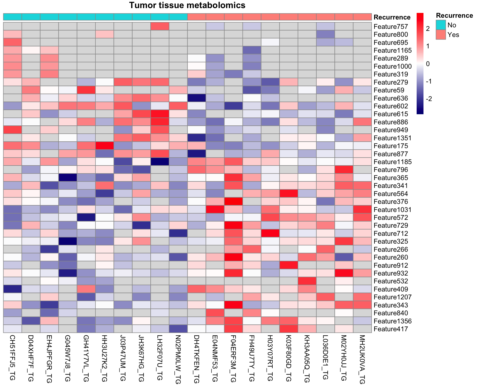
Use probabilistic dropout model to account for missing values and identify differentially abundant metabolites in Tumor tissue that are significantly associated with cancer recurrence. Note that features in heatmap are ordered by their t-statistics.
# Fit linear probabilistic dropout model to normalized data
fit <- proDA::proDA(datMat, design = ~ smpAnno$Recurrence)
# fit
# Check coefficient names for Parameter 'contrast' in proDA::test_diff()
# proDA::result_names(fit)
# Identify significant differentially abundant entities
all_proDAMetaTumorRes <- proDA::test_diff(fit,
contrast = Intercept + `smpAnno$RecurrenceYes` - Intercept,
sort_by = 'pval')
proDAMetaTumorRes <- dplyr::select(all_proDAMetaTumorRes,
-c(diff, se, df, avg_abundance, n_approx)) %>%
dplyr::filter(pval < 0.05) %>%
dplyr::mutate(MZ_RT = plyr::mapvalues(name,
from = featInfo$Feature,
to = featInfo$MZ.RT,
warn_missing = F))
proDAMetaTumorRes name pval adj_pval t_statistic n_obs MZ_RT
1 Feature1331 0.0007772955 0.9998395 4.034748 8 207.12408/9.56
2 Feature636 0.0069099913 0.9998395 -3.048834 13 179.06368/6.21
3 Feature417 0.0133392551 0.9998395 2.744097 14 229.07946/0.5
4 Feature343 0.0178448468 0.9998395 2.606734 20 324.32558/8.74
5 Feature279 0.0258463463 0.9998395 -2.428863 15 772.58438/8.12
6 Feature409 0.0310623903 0.9998395 2.339103 15 525.37397/9.65
7 Feature932 0.0346074333 0.9998395 2.285802 20 336.32587/8.32
8 Feature325 0.0405943701 0.9998395 2.206313 19 352.32111/8.47
9 Feature260 0.0428632163 0.9998395 2.178989 20 226.15896/8
10 Feature886 0.0448331857 0.9998395 -2.156320 19 783.57202/8.22
11 Feature1031 0.0463578872 0.9998395 2.139391 20 401.31603/8.71
12 Feature840 0.0493997206 0.9998395 2.107083 8 396.31045/8.08# Plot molecular signatures in input data
# Order features according to t-statistics
featOrder <- dplyr::arrange(proDAMetaTumorRes, dplyr::desc(t_statistic))$name
a <- pheatmap::pheatmap(datMat[featOrder, smpOrder],
annotation_col = smpRecur,
color = colorRampPalette(c('navy', 'white', 'red'))(100),
cluster_rows = F, cluster_cols = F,
scale = 'row', main = 'Tumor tissue metabolomics (proDA)')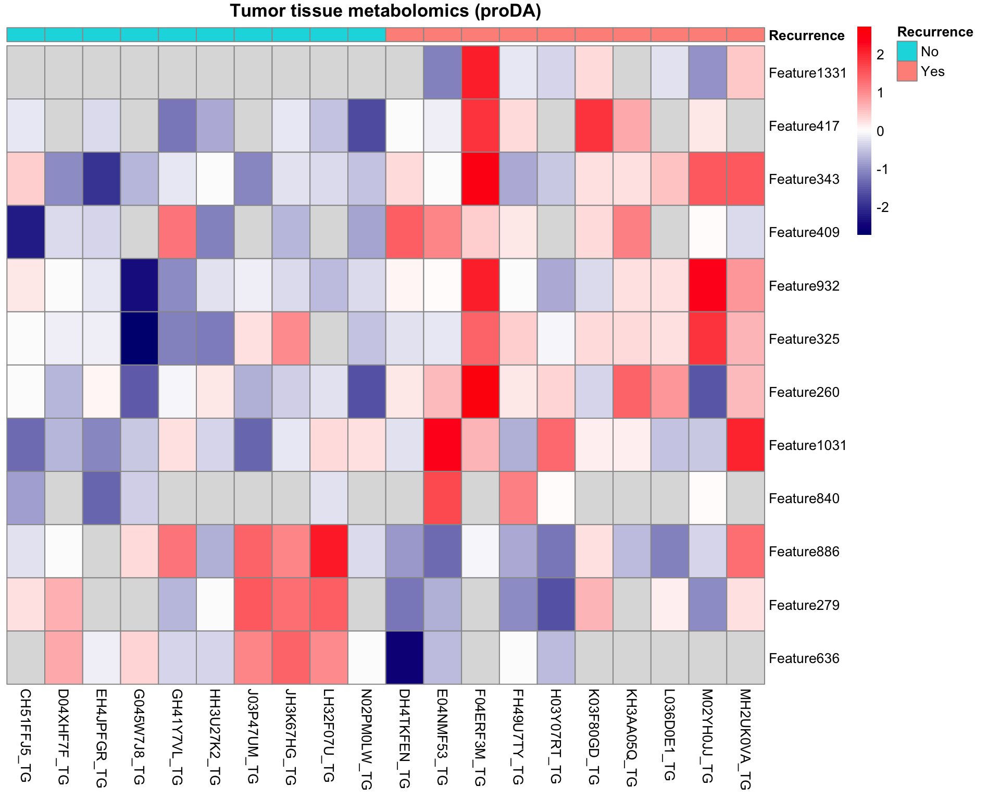
# ggsave(paste0(result_path, 'AG_Hopf/metaTumor_sigFeats.png'), plot = a, device = 'png', dpi = 400,
# height = 8, width = 10)
# Store table in list for creating Excel file
sigFeatSheet <- append(sigFeatSheet, list(TumorTissueMetab_Feats = proDAMetaTumorRes))ovl <- intersect(metaTumorRes$tFeatSigRes$Var1, proDAMetaTumorRes$name)
cat('The following features', paste0('(n =', length(ovl), ')'),
'are tested significant by both methods:\n', ovl)The following features (n =11) are tested significant by both methods:
Feature417 Feature343 Feature279 Feature636 Feature409 Feature932 Feature886 Feature260 Feature840 Feature325 Feature1031Visualize data of top 6 significant features
# Visualize data of top 6 significant features
topSigFeats <- proDAMetaTumorRes$name[2:7]
topSigFeatData <- tibble::as_tibble(datMat[topSigFeats,], rownames = 'Feature') %>%
tidyr::pivot_longer(cols = -'Feature',
names_to = 'Sample', values_to = 'Abundance') %>%
dplyr::mutate(Feature = factor(Feature, levels = topSigFeats)) %>%
dplyr::left_join(smpAnno, by = 'Sample')
ggplot(topSigFeatData, aes(x=Recurrence, y=Abundance, col=Recurrence, fill=Recurrence)) +
geom_boxplot(alpha = 0.5, outlier.shape = NA) +
geom_jitter(position = position_jitter(0.2), size = 2, show.legend = F) +
scale_color_manual(values=c('#00BFC4', '#F8766D')) +
scale_fill_manual(values=c('#00BFC4', '#F8766D')) +
facet_wrap(vars(Feature), scales = 'free') +
ggpubr::stat_compare_means(method = 't.test', paired = F,
method.args = list(var.equal = T),
show.legend = F)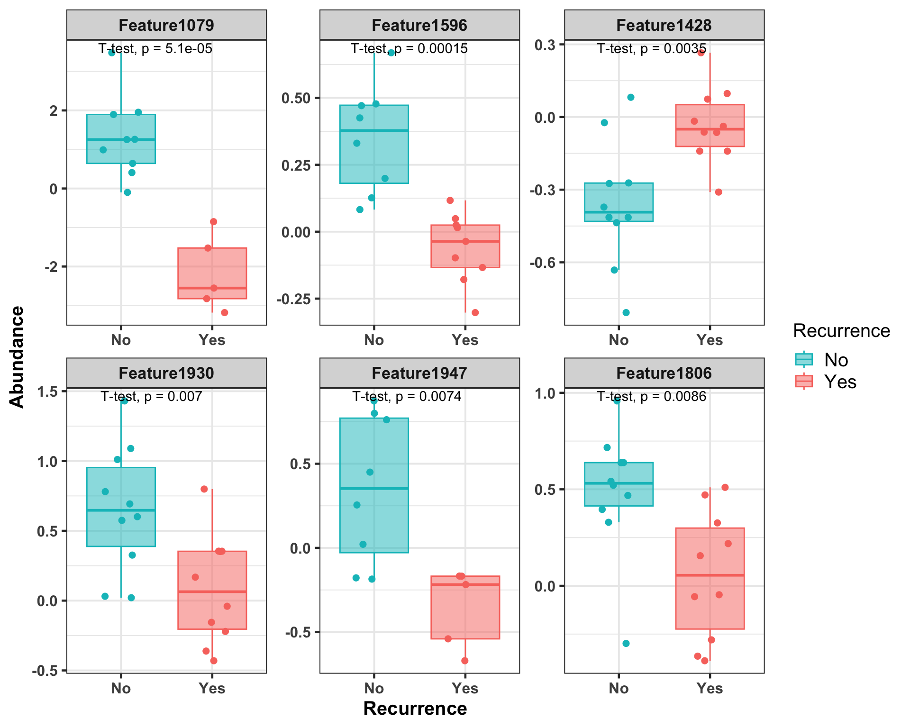
# ggsave(paste0(result_path, 'AG_Hopf/metaTumor_topSigFeats.png'), device = 'png', dpi = 400,
# height = 8, width = 10)Display significant associations between PCs (Var1) and cancer recurrence (Var2)
# Display PCs that can significantly separate recurrence and non-recurrence
# patients
tPCASigRes Var1 Var2 pVal tStats pValAdj
1 PC6 Recurrence 0.01851625 -2.589162 0.370325# Display proportion of total variance captured by all PCs explained by each PC
varExplained <- pcaRes$sdev^2 / sum(pcaRes$sdev^2)
PC <- paste0('PC', seq(length(varExplained)))
varTab <- data.frame(PC = factor(PC, levels = PC),
Var_explained = varExplained)
ggplot(varTab, aes(x=PC, y=Var_explained*100)) +
geom_col() +
labs(x = '', y = 'Variance explained (%)',
title = 'Tumor tissue metabolomics')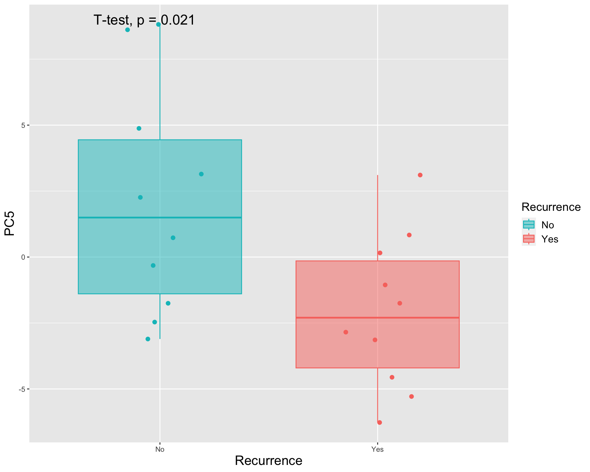
PC6 potentially separates recurrence and non-recurrence patients.
# Visualize PCs
ggplot(pcTab, aes(x=Recurrence, y=PC6, col=Recurrence, fill=Recurrence)) +
geom_boxplot(alpha = 0.5, outlier.shape = NA) +
geom_jitter(position = position_jitter(0.2), size = 2, show.legend = F) +
# labs(title = 'Tumor tissue metabolomics') +
scale_color_manual(values=c('#00BFC4', '#F8766D')) +
scale_fill_manual(values=c('#00BFC4', '#F8766D')) +
ggpubr::stat_compare_means(method = 't.test', paired = F, size = 6,
method.args = list(var.equal = T), hjust = 0.65,
show.legend = F) +
theme(axis.title = element_text(size = 16),
legend.title = element_text(size = 14), legend.text = element_text(size = 12))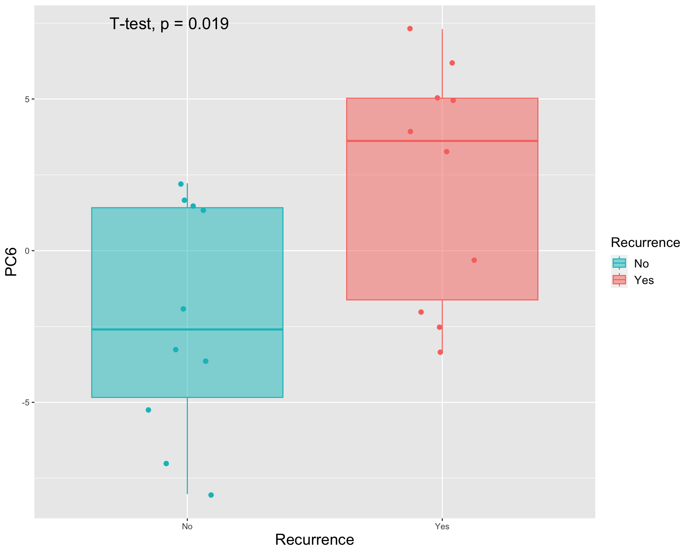
# ggsave(paste0(result_path, 'AG_Hopf/metaTumor_pca.png'), device = 'png', dpi = 400,
# height = 8, width = 10)Plot molecular signatures captured by PC6 in input data. We took a look at top 20 features with highest loadings and observed metabolite levels of these top features through heatmap. Note that features in heatmap are ordered by their loadings.
# Plot molecular signatures in input data
# Extract top features with highest loadings
topFeats <- pcTopFeatTab$PC6$Feature[1:20]
# Order features by loadings
topFeatsIdx <- sapply(topFeats, function(feat) {which(rownames(datMat) == feat)})
pheatmap::pheatmap(datMat[topFeatsIdx, smpOrder],
annotation_col = smpRecur,
color = colorRampPalette(c('navy', 'white', 'red'))(100),
cluster_rows = F, cluster_cols = F,
scale = 'row', main = 'Tumor tissue metabolomics - PC6')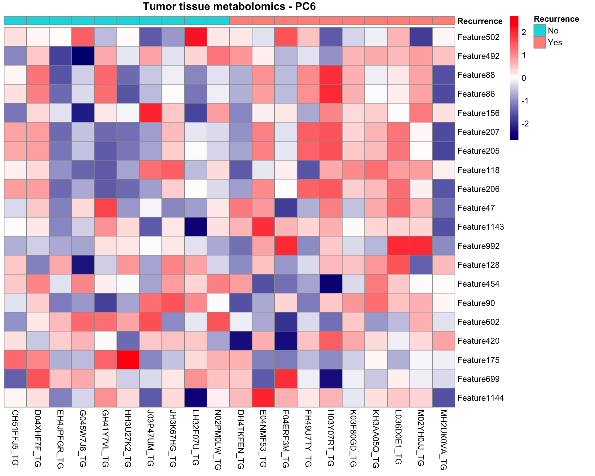
Display top features that build the PC6
# Display top features with highest loadings of PC of interest
pcTopFeats <- dplyr::left_join(pcTopFeatTab$PC6, featInfo, by = 'Feature')
pcTopFeats Feature Loading MZ.RT
1 Feature502 0.21422141 367.01034/3.55
2 Feature492 0.20955566 562.10893/3.45
3 Feature88 0.19291491 235.18046/3.64
4 Feature86 0.17407334 86.09648/3.63
5 Feature156 0.17340378 608.26518/5.26
6 Feature207 0.15620103 207.14914/5.99
7 Feature205 0.15189288 221.07426/5.98
8 Feature118 0.14708632 227.11789/4.15
9 Feature206 0.14490946 364.14509/5.99
10 Feature47 0.11786333 411.16936/3.21
11 Feature1143 0.11548304 435.30366/9.01
12 Feature992 0.11541263 326.37778/8.62
13 Feature128 0.11437457 473.19895/4.33
14 Feature454 0.11411301 179.06368/2.94
15 Feature90 0.11310617 212.11819/3.72
16 Feature602 0.11040161 431.15648/5.51
17 Feature420 0.10755638 242.9255/0.82
18 Feature175 0.10742305 266.07793/5.56
19 Feature699 0.10362269 760.58376/7.46
20 Feature1144 0.10341206 399.28246/9.01
21 Feature1298 0.10210196 524.37034/9.44
22 Feature226 0.10201474 743.27934/6.63
23 Feature836 0.10170181 510.35485/8.05
24 Feature609 0.10064890 359.13558/5.56
25 Feature990 0.09803078 617.33756/8.57
26 Feature422 0.09633508 184.07332/0.85
27 Feature1049 0.09605163 525.37405/8.74
28 Feature153 0.09450974 420.09418/5.1
29 Feature130 0.09352045 416.19328/4.42
30 Feature211 0.08986064 205.04296/6.17# Store table in list for creating Excel file
sigFeatSheet <- append(sigFeatSheet, list(TumorTissueMetab_PC6 = pcTopFeats))Normal samples
Display significant associations between features (Var1) and cancer recurrence (Var2) and observe molecular signatures in input data through heatmap. Note that features in heatmap are ordered by their t-statistics.
# Subset normal samples
smpNormalIdx <- which(colData(metaTissueVsn)$Condition == 'Normal')
metaNormal <- metaTissueVsn[, smpNormalIdx]
# Perform analysis
metaNormalRes <- SOA(metaNormal, factor = 'Recurrence', num_feats = 30)
datMat <- metaNormalRes$data
smpAnno <- metaNormalRes$smpMetadata
tFeatSigRes <- metaNormalRes$tFeatSigRes
tPCASigRes <- metaNormalRes$tPCASigRes
pcaRes <- metaNormalRes$pcaRes
pcTab <- metaNormalRes$pcTab
pcTopFeatTab <- metaNormalRes$pcTopFeatTab
# Display features that can significantly separate recurrence and non-recurrence
# patients
sigFeatTab <- dplyr::mutate(tFeatSigRes, MZ.RT = plyr::mapvalues(Var1,
from = featInfo$Feature,
to = featInfo$MZ.RT,
warn_missing = F))
sigFeatTab Var1 Var2 pVal tStats pValAdj MZ.RT
1 Feature196 Recurrence 0.002955556 3.434664 0.9847782 343.29532/5.75
2 Feature895 Recurrence 0.003547742 -5.172406 0.9847782 180.06677/8.23
3 Feature82 Recurrence 0.005404792 -3.161126 0.9847782 381.19522/3.56
4 Feature993 Recurrence 0.010867081 3.637516 0.9847782 372.31051/8.6
5 Feature1030 Recurrence 0.016259311 3.145260 0.9847782 544.33917/8.74
6 Feature1046 Recurrence 0.018091957 -3.069038 0.9847782 179.06371/8.76
7 Feature1005 Recurrence 0.019343998 -4.597219 0.9847782 369.35121/8.64
8 Feature417 Recurrence 0.019420059 2.734541 0.9847782 229.07946/0.5
9 Feature815 Recurrence 0.020408910 2.751976 0.9847782 806.56841/7.99
10 Feature763 Recurrence 0.022205643 -2.757420 0.9847782 766.57371/7.8
11 Feature428 Recurrence 0.023888848 -2.466996 0.9847782 248.14933/0.98
12 Feature1229 Recurrence 0.026120488 3.447230 0.9847782 663.45314/9.22
13 Feature1380 Recurrence 0.026500105 2.443787 0.9847782 685.43502/9.68
14 Feature436 Recurrence 0.027258458 2.632238 0.9847782 137.04573/1.29
15 Feature1037 Recurrence 0.028366857 2.465632 0.9847782 735.57188/8.71
16 Feature1367 Recurrence 0.030022874 2.828348 0.9847782 760.5843/9.62
17 Feature1164 Recurrence 0.030919250 2.419756 0.9847782 221.11072/9.1
18 Feature1250 Recurrence 0.032778053 2.323966 0.9847782 734.56832/9.32
19 Feature819 Recurrence 0.034336496 2.289692 0.9847782 761.58733/8
20 Feature720 Recurrence 0.036021341 2.319087 0.9847782 703.57406/7.63
21 Feature422 Recurrence 0.036329508 2.261713 0.9847782 184.07332/0.85
22 Feature1356 Recurrence 0.040736848 -2.239030 0.9847782 426.35737/9.65
23 Feature44 Recurrence 0.041018115 -2.235443 0.9847782 265.10044/3.19
24 Feature702 Recurrence 0.045797264 2.177744 0.9847782 639.32151/7.49
25 Feature896 Recurrence 0.045830095 -2.361789 0.9847782 615.3217/8.23
26 Feature1096 Recurrence 0.045944223 2.176060 0.9847782 735.5719/8.89
27 Feature1290 Recurrence 0.049470982 2.106348 0.9847782 761.58744/9.44
28 Feature1163 Recurrence 0.049941013 3.183984 0.9847782 732.5532/9.09# Plot molecular signatures in input data
# Order features according to t-statistics
featOrder <- dplyr::arrange(tFeatSigRes, dplyr::desc(tStats))$Var1
# Arrange samples to make same groups in same clusters
smpOrder <- c(which(smpAnno$Recurrence == 'No'),
which(smpAnno$Recurrence == 'Yes'))
# Prepare recurrence table for annotating samples in heatmap
smpRecur <- dplyr::select(smpAnno, Sample, Recurrence) %>%
tibble::column_to_rownames('Sample')
pheatmap::pheatmap(datMat[featOrder, smpOrder],
annotation_col = smpRecur,
color = colorRampPalette(c('navy', 'white', 'red'))(100),
cluster_rows = F, cluster_cols = F, show_rownames = T,
scale = 'row', main = 'Normal tissue metabolomics')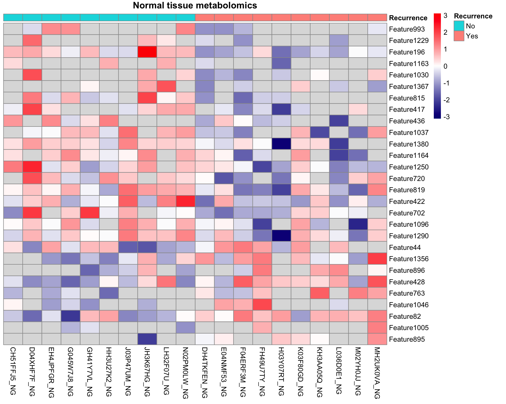
Use probabilistic dropout model to account for missing values and identify differentially abundant metabolites in Normal tissue that are significantly associated with cancer recurrence. Note that features in heatmap are ordered by their t-statistics.
# Fit linear probabilistic dropout model to normalized data
fit <- proDA::proDA(datMat, design = ~ smpAnno$Recurrence)
# fit
# Check coefficient names for Parameter 'contrast' in proDA::test_diff()
# proDA::result_names(fit)
# Identify significant differentially abundant entities
all_proDAMetaNormalRes <- proDA::test_diff(fit,
contrast = Intercept + `smpAnno$RecurrenceYes` - Intercept,
sort_by = 'pval')
proDAMetaNormalRes <- dplyr::select(all_proDAMetaNormalRes,
-c(diff, se, df, avg_abundance, n_approx)) %>%
dplyr::filter(pval < 0.05) %>%
dplyr::mutate(MZ_RT = plyr::mapvalues(name,
from = featInfo$Feature,
to = featInfo$MZ.RT,
warn_missing = F))
proDAMetaNormalRes name pval adj_pval t_statistic n_obs MZ_RT
1 Feature895 0.001024487 0.9999556 3.910789 7 180.06677/8.23
2 Feature196 0.005139057 0.9999556 -3.184090 20 343.29532/5.75
3 Feature82 0.010525942 0.9999556 2.854648 20 381.19522/3.56
4 Feature763 0.016217466 0.9999556 2.652079 11 766.57371/7.8
5 Feature815 0.020446665 0.9999556 -2.541812 12 806.56841/7.99
6 Feature417 0.027249859 0.9999556 -2.403154 13 229.07946/0.5
7 Feature1380 0.029153889 0.9999556 -2.370189 18 685.43502/9.68
8 Feature428 0.034586900 0.9999556 2.286096 20 248.14933/0.98
9 Feature422 0.049995913 0.9999556 -2.100964 20 184.07332/0.85# Plot molecular signatures in input data
# Order features according to t-statistics
featOrder <- dplyr::arrange(proDAMetaNormalRes, dplyr::desc(t_statistic))$name
a <- pheatmap::pheatmap(datMat[featOrder, smpOrder],
annotation_col = smpRecur,
color = colorRampPalette(c('navy', 'white', 'red'))(100),
cluster_rows = F, cluster_cols = F,
scale = 'row', main = 'Normal tissue metabolomics (proDA)')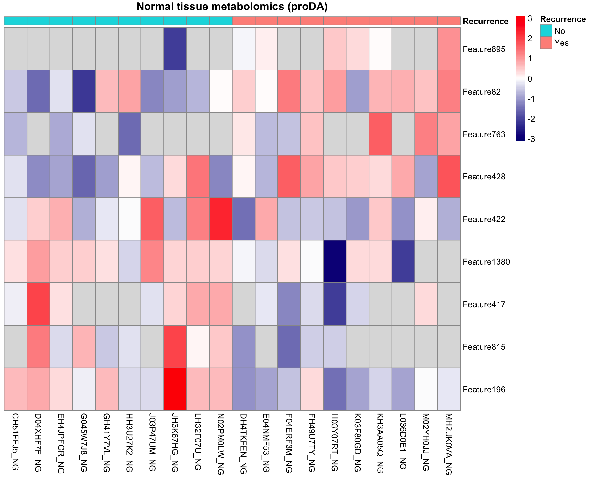
# ggsave(paste0(result_path, 'AG_Hopf/metaNormal_sigFeats.png'), plot = a, device = 'png', dpi = 400,
# height = 8, width = 10)
# Store table in list for creating Excel file
sigFeatSheet <- append(sigFeatSheet, list(NormalTissueMetab_Feats = proDAMetaNormalRes))ovl <- intersect(metaNormalRes$tFeatSigRes$Var1, proDAMetaNormalRes$name)
cat('The following features', paste0('(n =', length(ovl), ')'),
'are tested significant by both methods:\n', ovl)The following features (n =9) are tested significant by both methods:
Feature196 Feature895 Feature82 Feature417 Feature815 Feature763 Feature428 Feature1380 Feature422Visualize data of top 6 significant features
# Visualize data of top 6 significant features
topSigFeats <- proDAMetaNormalRes$name[2:7]
topSigFeatData <- tibble::as_tibble(datMat[topSigFeats,], rownames = 'Feature') %>%
tidyr::pivot_longer(cols = -'Feature',
names_to = 'Sample', values_to = 'Abundance') %>%
dplyr::mutate(Feature = factor(Feature, levels = topSigFeats)) %>%
dplyr::left_join(smpAnno, by = 'Sample')
ggplot(topSigFeatData, aes(x=Recurrence, y=Abundance, col=Recurrence, fill=Recurrence)) +
geom_boxplot(alpha = 0.5, outlier.shape = NA) +
geom_jitter(position = position_jitter(0.2), size = 2, show.legend = F) +
scale_color_manual(values=c('#00BFC4', '#F8766D')) +
scale_fill_manual(values=c('#00BFC4', '#F8766D')) +
facet_wrap(vars(Feature), scales = 'free') +
ggpubr::stat_compare_means(method = 't.test', paired = F,
method.args = list(var.equal = T),
show.legend = F)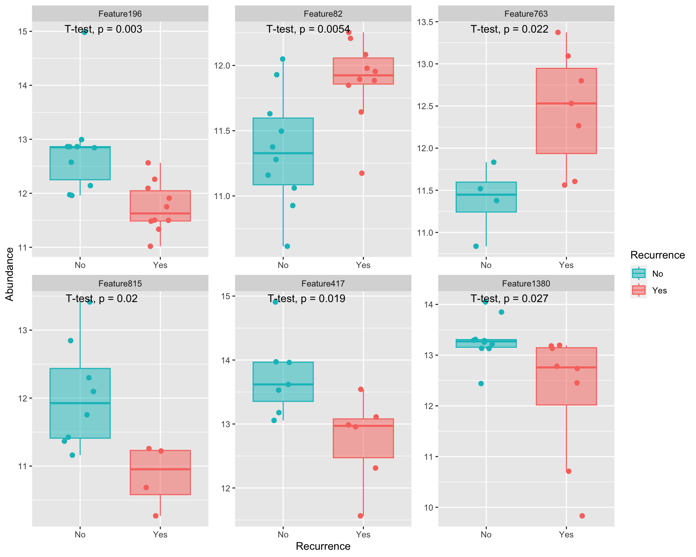
# ggsave(paste0(result_path, 'AG_Hopf/metaNormal_topSigFeats.png'), device = 'png', dpi = 400,
# height = 8, width = 10)Display significant associations between PCs (Var1) and cancer recurrence (Var2)
# Display PCs that can significantly separate recurrence and non-recurrence
# patients
tPCASigRes[1] Var1 Var2 pVal tStats pValAdj
<0 rows> (or 0-length row.names)Difference in tissue conditions
Differences between Tumor and Normal samples (Tumor matrix - Normal
matrix):
Display significant associations between features (Var1) and cancer recurrence (Var2) and observe molecular signatures in input data through heatmap. Note that features in heatmap are ordered by their t-statistics.
# Subset tumor samples
smpTumorIdx <- which(colData(metaTissueVsn)$Condition == 'Tumor')
metaTumor <- metaTissueVsn[, smpTumorIdx]
# Subset normal samples
smpNormalIdx <- which(colData(metaTissueVsn)$Condition == 'Normal')
metaNormal <- metaTissueVsn[, smpNormalIdx]
# Modify column names for matching two matrices
colnames(metaTumor) <- stringr::str_remove(colnames(metaTumor), '_TG')
colnames(metaNormal) <- stringr::str_remove(colnames(metaNormal), '_NG')
# Retrieve data matrix
metaTumorMat <- SummarizedExperiment::assay(metaTumor)
metaNormalMat <- SummarizedExperiment::assay(metaNormal)
# Subtract tumor matrix by normal matrix
if (identical(colnames(metaTumorMat), colnames(metaNormalMat)) &
identical(rownames(metaTumorMat), rownames(metaNormalMat))) {
metaTissueDiffMat <- metaTumorMat - metaNormalMat
} else {
print('Align samples or features first.')
}
# Retrieve samples metadata for creating SE object
colAnno <- dplyr::select(as.data.frame(colData(metaTumor)), Patient, Recurrence)
metaTissueDiff <- SummarizedExperiment(assays = metaTissueDiffMat, colData = colAnno)
# Perform analysis
metaTissueDiffRes <- SOA(metaTissueDiff, factor = 'Recurrence', num_feats = 30)
datMat <- metaTissueDiffRes$data
smpAnno <- metaTissueDiffRes$smpMetadata
tFeatSigRes <- metaTissueDiffRes$tFeatSigRes
tPCASigRes <- metaTissueDiffRes$tPCASigRes
pcaRes <- metaTissueDiffRes$pcaRes
pcTab <- metaTissueDiffRes$pcTab
pcTopFeatTab <- metaTissueDiffRes$pcTopFeatTab
# Display features that can significantly separate recurrence and non-recurrence
# patients
sigFeatTab <- dplyr::mutate(tFeatSigRes, MZ.RT = plyr::mapvalues(Var1,
from = featInfo$Feature,
to = featInfo$MZ.RT,
warn_missing = F))
sigFeatTab Var1 Var2 pVal tStats pValAdj MZ.RT
1 Feature1037 Recurrence 0.002671515 -3.699711 0.9873492 735.57188/8.71
2 Feature325 Recurrence 0.007026613 -3.063939 0.9873492 352.32111/8.47
3 Feature895 Recurrence 0.007433283 5.010835 0.9873492 180.06677/8.23
4 Feature932 Recurrence 0.008569688 -2.949836 0.9873492 336.32587/8.32
5 Feature300 Recurrence 0.009373426 -4.690620 0.9873492 650.64343/8.27
6 Feature1183 Recurrence 0.009645924 -2.895148 0.9873492 313.27354/9.18
7 Feature1185 Recurrence 0.012907283 -2.759523 0.9873492 239.23685/9.18
8 Feature271 Recurrence 0.012994041 -2.794269 0.9873492 813.68355/8.07
9 Feature423 Recurrence 0.016701810 2.868844 0.9873492 296.06608/0.85
10 Feature417 Recurrence 0.018505124 -2.947187 0.9873492 229.07946/0.5
11 Feature307 Recurrence 0.019204660 2.586600 0.9873492 557.41224/8.32
12 Feature528 Recurrence 0.019648894 -3.381182 0.9873492 179.06371/3.93
13 Feature343 Recurrence 0.020267365 -2.560490 0.9873492 324.32558/8.74
14 Feature428 Recurrence 0.022330097 2.499524 0.9873492 248.14933/0.98
15 Feature365 Recurrence 0.022733825 -2.504576 0.9873492 354.33673/9.1
16 Feature3 Recurrence 0.022780131 2.519117 0.9873492 348.07031/0.93
17 Feature1001 Recurrence 0.023213479 3.229704 0.9873492 720.55322/8.62
18 Feature12 Recurrence 0.023240985 2.493795 0.9873492 218.13871/1.75
19 Feature815 Recurrence 0.024472387 -2.985173 0.9873492 806.56841/7.99
20 Feature437 Recurrence 0.025776999 2.430167 0.9873492 248.1493/1.29
21 Feature19 Recurrence 0.026248267 2.421370 0.9873492 232.15432/2.84
22 Feature948 Recurrence 0.028200570 -2.563558 0.9873492 736.57523/8.38
23 Feature466 Recurrence 0.031043155 2.339407 0.9873492 94.06516/3.08
24 Feature175 Recurrence 0.031715994 2.328865 0.9873492 266.07793/5.56
25 Feature1323 Recurrence 0.032537043 -5.407631 0.9873492 304.29958/9.51
26 Feature702 Recurrence 0.034256747 -2.364960 0.9873492 639.32151/7.49
27 Feature335 Recurrence 0.034522996 2.445493 0.9873492 314.30524/8.6
28 Feature1121 Recurrence 0.036528873 -2.258993 0.9873492 313.27348/8.96
29 Feature1373 Recurrence 0.037684542 -2.243490 0.9873492 347.31543/9.67
30 Feature409 Recurrence 0.037704559 -2.393931 0.9873492 525.37397/9.65
31 Feature313 Recurrence 0.038685619 -2.230410 0.9873492 280.26349/8.37
32 Feature1377 Recurrence 0.039542731 4.878441 0.9873492 349.26696/9.67
33 Feature1063 Recurrence 0.040522153 4.815413 0.9873492 124.08686/8.8
34 Feature788 Recurrence 0.040583140 -4.811562 0.9873492 207.12408/7.9
35 Feature1202 Recurrence 0.041837048 15.194739 0.9873492 680.47994/9.17
36 Feature373 Recurrence 0.042205440 -2.207768 0.9873492 683.54269/9.18
37 Feature518 Recurrence 0.043975797 2.166072 0.9873492 283.07485/3.89
38 Feature609 Recurrence 0.047118392 2.131136 0.9873492 359.13558/5.56
39 Feature1000 Recurrence 0.047847999 4.405879 0.9873492 497.33062/8.62
40 Feature292 Recurrence 0.049006600 2.120157 0.9873492 601.43845/8.21
41 Feature44 Recurrence 0.049395731 2.167016 0.9873492 265.10044/3.19# Plot molecular signatures in input data
# Order features according to t-statistics
featOrder <- dplyr::arrange(tFeatSigRes, dplyr::desc(tStats))$Var1
# Arrange samples to make same groups in same clusters
smpOrder <- c(which(smpAnno$Recurrence == 'No'),
which(smpAnno$Recurrence == 'Yes'))
# Prepare recurrence table for annotating samples in heatmap
smpRecur <- dplyr::select(smpAnno, Sample, Recurrence) %>%
tibble::column_to_rownames('Sample')
pheatmap::pheatmap(datMat[featOrder, smpOrder],
annotation_col = smpRecur,
color = colorRampPalette(c('navy', 'white', 'red'))(100),
cluster_rows = F, cluster_cols = F, show_rownames = T,
scale = 'row', main = 'Differential tissue metabolomics')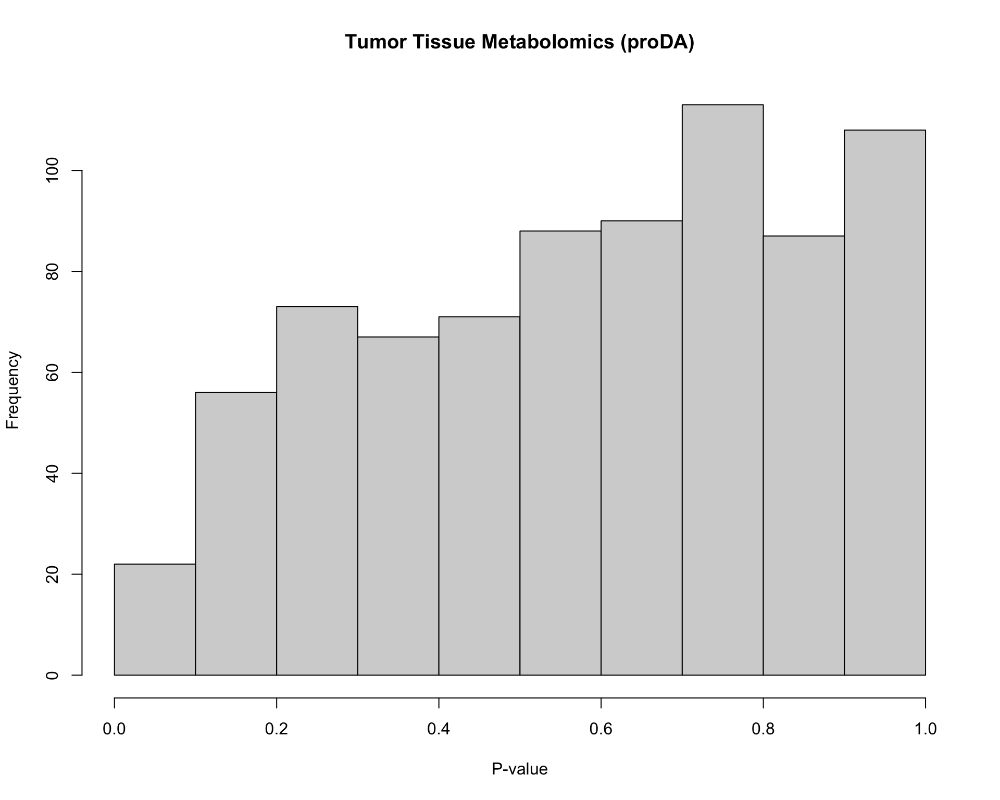
Use probabilistic dropout model to account for missing values and identify differentially abundant metabolite difference between Tumor and Normal tissues that are significantly associated with cancer recurrence. Note that features in heatmap are ordered by their t-statistics.
# Fit linear probabilistic dropout model to normalized data
fit <- proDA::proDA(datMat, design = ~ smpAnno$Recurrence)
# fit
# Check coefficient names for Parameter 'contrast' in proDA::test_diff()
# proDA::result_names(fit)
# Identify significant differentially abundant entities
proDAMetaTissueDiffRes <- proDA::test_diff(fit,
contrast = Intercept + `smpAnno$RecurrenceYes` - Intercept,
sort_by = 'pval', n_max = 30) %>%
dplyr::select(-c(diff, se, df, avg_abundance, n_approx)) %>%
dplyr::mutate(MZ_RT = plyr::mapvalues(name,
from = featInfo$Feature,
to = featInfo$MZ.RT,
warn_missing = F))
proDAMetaTissueDiffRes name pval adj_pval t_statistic n_obs MZ_RT
1314 Feature932 0.2235088 0.999726 1.2607157 20 336.32587/8.32
580 Feature271 0.2708646 0.999726 1.1359789 18 813.68355/8.07
640 Feature325 0.2922917 0.999726 1.0848806 19 352.32111/8.47
417 Feature1373 0.2926568 0.999726 1.0840341 20 347.31543/9.67
796 Feature466 0.3011027 0.999726 -1.0646629 20 94.06516/3.08
860 Feature523 0.3152180 0.999726 -1.0331459 20 136.02147/3.88
543 Feature238 0.3164464 0.999726 1.0304511 20 235.16928/7.4
44 Feature1037 0.3198508 0.999726 1.0230219 15 735.57188/8.71
3 Feature100 0.3198953 0.999726 -1.0229250 20 76.03933/3.88
854 Feature518 0.3203138 0.999726 -1.0220158 20 283.07485/3.89
660 Feature343 0.3280951 0.999726 1.0052597 19 324.32558/8.74
206 Feature1183 0.3394454 0.999726 0.9813124 20 313.27354/9.18
208 Feature1185 0.3406902 0.999726 0.9787202 20 239.23685/9.18
857 Feature520 0.3457254 0.999726 -0.9683016 20 148.06033/3.89
658 Feature341 0.3479175 0.999726 0.9637987 20 581.24489/8.74
104 Feature1091 0.3521446 0.999726 0.9551704 18 762.59315/8.85
684 Feature365 0.3526851 0.999726 0.9540722 19 354.33673/9.1
349 Feature1311 0.3528117 0.999726 0.9538152 20 787.6029/9.46
620 Feature307 0.3556303 0.999726 -0.9481089 19 557.41224/8.32
483 Feature184 0.3651895 0.999726 0.9289825 20 739.14202/5.62
1059 Feature702 0.3712397 0.999726 0.9170520 15 639.32151/7.49
569 Feature261 0.3744804 0.999726 0.9107155 14 689.55848/8.02
634 Feature32 0.3793691 0.999726 -0.9012258 20 136.02146/3.08
792 Feature462 0.3922069 0.999726 -0.8766873 20 261.0364/3.09
224 Feature12 0.3928632 0.999726 -0.8754471 19 218.13871/1.75
627 Feature313 0.4014271 0.999726 0.8593882 20 280.26349/8.37
694 Feature374 0.4024402 0.999726 0.8575034 17 725.396/9.18
602 Feature291 0.4080111 0.999726 0.8471932 15 628.95362/8.21
693 Feature373 0.4098262 0.999726 0.8438537 18 683.54269/9.18
69 Feature106 0.4138371 0.999726 -0.8365079 20 134.04474/3.91# Store table in list for creating Excel file
# sigFeatSheet <- append(sigFeatSheet, list(DiffTissueMetab_Feats = proDAMetaTissueDiffRes))We took top 30 differentially abundant features from proDA() to see overlaps
ovl <- intersect(metaTissueDiffRes$tFeatSigRes$Var1, proDAMetaTissueDiffRes$name)
cat('The following features', paste0('(n =', length(ovl), ')'),
'are overlapped between two methods:\n', ovl)The following features (n =16) are overlapped between two methods:
Feature1037 Feature325 Feature932 Feature1183 Feature1185 Feature271 Feature307 Feature343 Feature365 Feature12 Feature466 Feature702 Feature1373 Feature313 Feature373 Feature518# Filter univariate result for making summarized plot
proDAMetaTissueDiffRes <- dplyr::filter(proDAMetaTissueDiffRes, pval < 0.05)Display significant associations between PCs (Var1) and cancer recurrence (Var2)
# Display PCs that can significantly separate recurrence and non-recurrence
# patients
tPCASigRes Var1 Var2 pVal tStats pValAdj
1 PC10 Recurrence 0.004487314 3.245741 0.08974628# Display proportion of total variance captured by all PCs explained by each PC
varExplained <- pcaRes$sdev^2 / sum(pcaRes$sdev^2)
PC <- paste0('PC', seq(length(varExplained)))
varTab <- data.frame(PC = factor(PC, levels = PC),
Var_explained = varExplained)
ggplot(varTab, aes(x=PC, y=Var_explained*100)) +
geom_col() +
labs(x = '', y = 'Variance explained (%)',
title = 'Differential tissue metabolomics')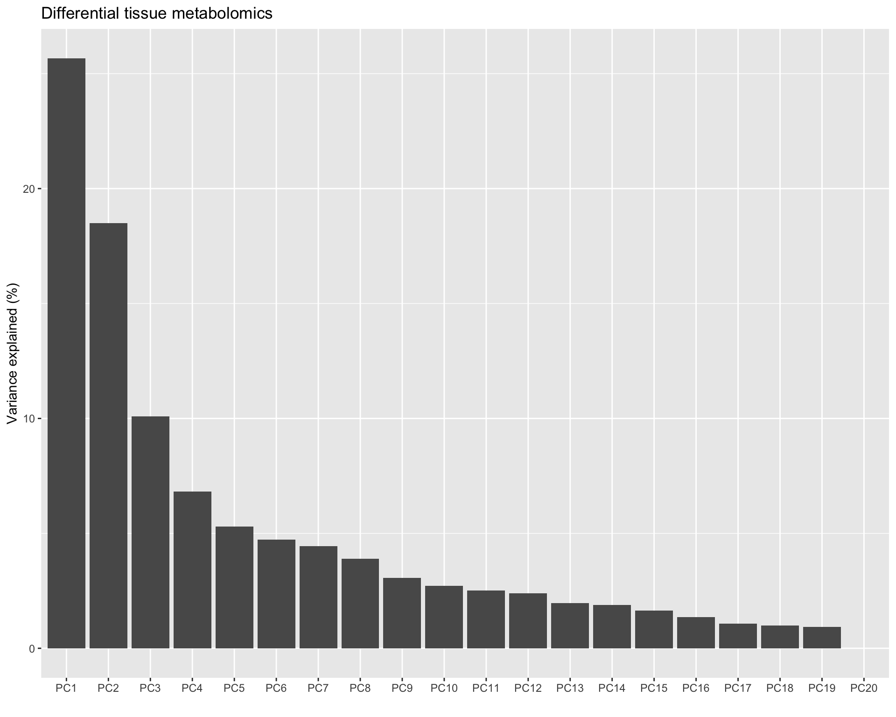
PC10 potentially separates recurrence and non-recurrence patients.
# Visualize PCs
ggplot(pcTab, aes(x=Recurrence, y=PC10, col=Recurrence, fill=Recurrence)) +
geom_boxplot(alpha = 0.5, outlier.shape = NA) +
geom_jitter(position = position_jitter(0.2), size = 2, show.legend = F) +
labs(title = 'Differential tissue metabolomics') +
scale_color_manual(values=c('#00BFC4', '#F8766D')) +
scale_fill_manual(values=c('#00BFC4', '#F8766D')) +
ggpubr::stat_compare_means(method = 't.test', paired = F, size = 5,
method.args = list(var.equal = T),
show.legend = F)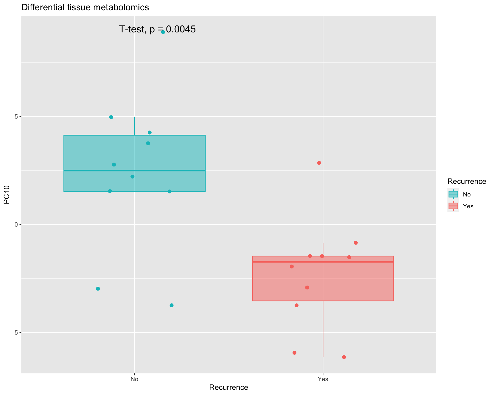
Plot molecular signatures captured by PC10 in input data. We took a look at top 20 features with highest loadings and observed metabolite levels of these top features through heatmap. Note that features in heatmap are ordered by their loadings.
# Plot molecular signatures in input data
# Extract top features with highest loadings
topFeats <- pcTopFeatTab$PC10$Feature[1:20]
# Order features by loadings
topFeatsIdx <- sapply(topFeats, function(feat) {which(rownames(datMat) == feat)})
pheatmap::pheatmap(datMat[topFeatsIdx, smpOrder],
annotation_col = smpRecur,
color = colorRampPalette(c('navy', 'white', 'red'))(100),
cluster_rows = F, cluster_cols = F,
scale = 'row', main = 'Differential tissue metabolomics - PC10')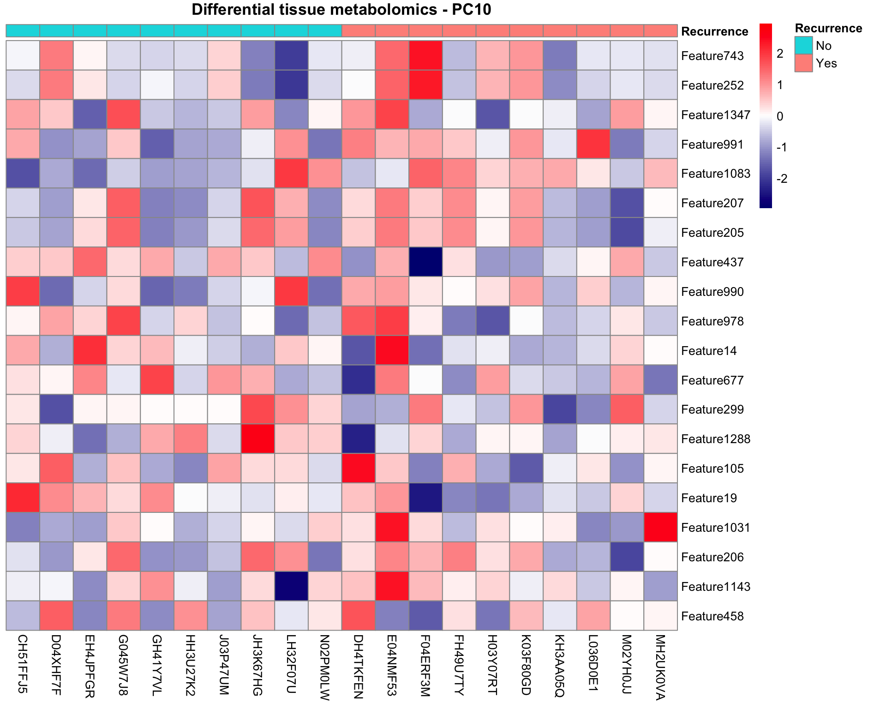
# Display top features with highest loadings of PC of interest
pcTopFeats <- dplyr::left_join(pcTopFeatTab$PC10, featInfo, by = 'Feature')
pcTopFeats Feature Loading MZ.RT
1 Feature743 0.19368030 179.06368/7.75
2 Feature252 0.18221317 314.07776/7.75
3 Feature1347 0.14774254 372.31052/9.64
4 Feature991 0.14006780 179.0637/8.58
5 Feature1083 0.13720309 531.40707/8.83
6 Feature207 0.13426216 207.14914/5.99
7 Feature205 0.13320797 221.07426/5.98
8 Feature437 0.12514609 248.1493/1.29
9 Feature990 0.12361899 617.33756/8.57
10 Feature978 0.11591992 453.31398/8.56
11 Feature14 0.11481054 384.1146/2.58
12 Feature677 0.11192840 370.29489/7.26
13 Feature299 0.11110120 540.53407/8.25
14 Feature1288 0.10986056 685.43508/9.43
15 Feature105 0.10985160 409.20128/3.89
16 Feature19 0.10930702 232.15432/2.84
17 Feature1031 0.10902284 401.31603/8.71
18 Feature206 0.10658563 364.14509/5.99
19 Feature1143 0.10629272 435.30366/9.01
20 Feature458 0.10028831 277.04058/2.99
21 Feature916 0.09899411 407.27222/8.27
22 Feature220 0.09859554 290.26886/6.24
23 Feature935 0.09567246 433.28789/8.37
24 Feature428 0.09463280 248.14933/0.98
25 Feature155 0.09233769 246.2428/5.23
26 Feature1326 0.09074673 672.52479/9.52
27 Feature1144 0.09049430 399.28246/9.01
28 Feature444 0.09032252 136.06169/1.34
29 Feature88 0.09001972 235.18046/3.64
30 Feature86 0.08775885 86.09648/3.63# Store table in list for creating Excel file
sigFeatSheet <- append(sigFeatSheet, list(DiffTissueMetab_PC10 = pcTopFeats))Tissue Lipidomics
As described in Tissue Metabolomics section, we analyzed Tumor and Normal samples separately.
# Load normalized data
lipTissueVsn <- readRDS('./data/AG_Hopf/lipTissueVsn.rds')
# Retrieve feature information for making significant feature table
featInfo <- tibble::as_tibble(rowData(lipTissueVsn), rownames = 'Feature')
# Perform analysis
lipTissueRes <- SOA(lipTissueVsn, factor = c('Recurrence', 'Condition'))
tPCASigRes <- lipTissueRes$tPCASigRes
pcaRes <- lipTissueRes$pcaRes
pcTab <- lipTissueRes$pcTabDisplay associations between learned PCs (Var1) and factors (Var2). Basically t-test was performed to test significance of difference between two groups, e.g., recurrence and non-recurrence patient groups or tumor and normal sample groups.
# Display PCs of interest
tPCASigRes Var1 Var2 pVal tStats pValAdj
1 PC1 Condition 1.421389e-09 -7.926937 1.137111e-07
2 PC24 Recurrence 1.952183e-02 2.438733 5.499212e-01
3 PC2 Condition 2.844814e-02 -2.277838 5.499212e-01
4 PC11 Recurrence 3.039491e-02 2.248918 5.499212e-01
5 PC10 Recurrence 3.437008e-02 2.194667 5.499212e-01PCA tends to capture variation in sample conditions (tumor and normal) and those PCs significantly associated with cancer recurrence do not perform that well.
ggplot(pcTab, aes(x=PC1, y=PC2, col=Condition, shape=Recurrence, group=Patient)) +
geom_point(size = 4) +
geom_line(col = 'grey50', linetype = 'dashed') +
theme(axis.title = element_text(size = 16),
legend.title = element_text(size = 14), legend.text = element_text(size = 12))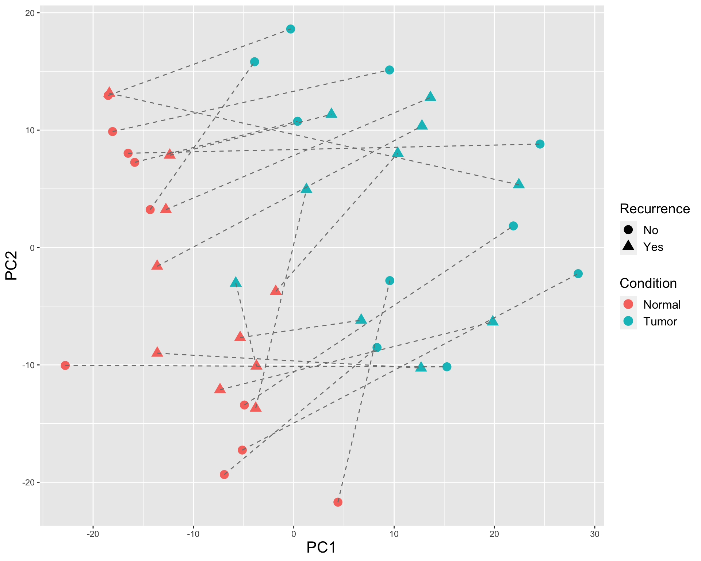
ggplot(pcTab, aes(x=Recurrence, y=PC24, col=Recurrence, fill=Recurrence)) +
geom_boxplot(alpha = 0.5, outlier.shape = NA) +
geom_jitter(position = position_jitter(0.2), size = 2, show.legend = F) +
scale_color_manual(values=c('#00BFC4', '#F8766D')) +
scale_fill_manual(values=c('#00BFC4', '#F8766D')) +
ggpubr::stat_compare_means(method = 't.test', paired = F, size = 6,
method.args = list(var.equal = T), hjust = 0.65,
show.legend = F) +
theme(axis.title = element_text(size = 16),
legend.title = element_text(size = 14), legend.text = element_text(size = 12))Display variance explained by each PC
# Display proportion of total variance captured by all PCs explained by each PC
varExplained <- pcaRes$sdev^2 / sum(pcaRes$sdev^2)
PC <- paste0('PC', seq(length(varExplained)))
varTab <- data.frame(PC = factor(PC, levels = PC),
Var_explained = varExplained)
ggplot(varTab, aes(x=PC, y=Var_explained*100)) +
geom_col() +
labs(x = '', y = 'Variance explained (%)') +
theme(axis.text.x = element_text(angle = 90, hjust = 1, vjust = 0.5))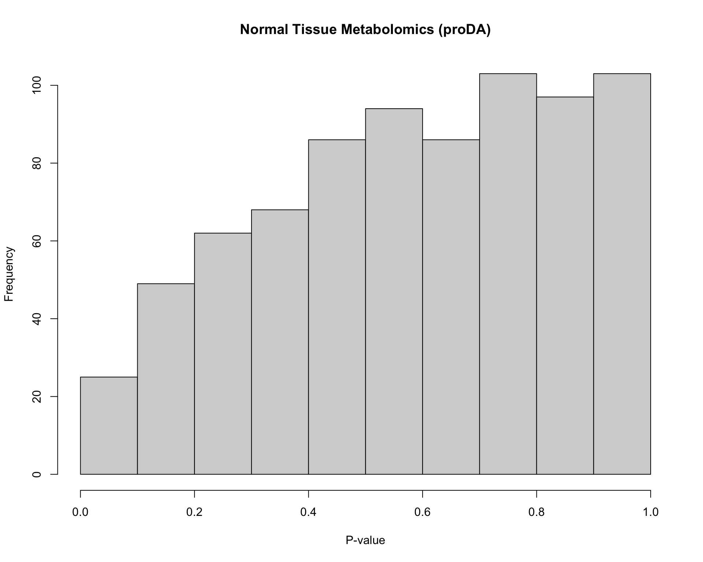
Tumor samples
Display significant associations between features (Var1) and cancer recurrence (Var2) and observe molecular signatures in input data through heatmap. Note that features in heatmap are ordered by their t-statistics.
# Subset tumor samples
smpTumorIdx <- which(colData(lipTissueVsn)$Condition == 'Tumor')
lipTumor <- lipTissueVsn[, smpTumorIdx]
# Perform analysis
lipTumorRes <- SOA(lipTumor, factor = 'Recurrence', num_feats = 30)
datMat <- lipTumorRes$data
smpAnno <- lipTumorRes$smpMetadata
tFeatSigRes <- lipTumorRes$tFeatSigRes
tPCASigRes <- lipTumorRes$tPCASigRes
pcaRes <- lipTumorRes$pcaRes
pcTab <- lipTumorRes$pcTab
pcTopFeatTab <- lipTumorRes$pcTopFeatTab
# Display features that can significantly separate recurrence and non-recurrence
# patients
sigFeatTab <- dplyr::mutate(tFeatSigRes, MZ.RT = plyr::mapvalues(Var1,
from = featInfo$Feature,
to = featInfo$MZ.RT,
warn_missing = F))
sigFeatTab Var1 Var2 pVal tStats pValAdj MZ.RT
1 Feature637 Recurrence 0.0004113047 49.292879 0.8859502 666.61399/7.9
2 Feature1331 Recurrence 0.0091802177 -2.918049 0.9969298 786.6006/5.48
3 Feature51 Recurrence 0.0135270786 5.240318 0.9969298 285.28997/1.45
4 Feature1919 Recurrence 0.0150167852 3.084384 0.9969298 903.5673/4.92
5 Feature1668 Recurrence 0.0153808459 -2.733743 0.9969298 836.66076/6.51
6 Feature1353 Recurrence 0.0167583046 -2.714958 0.9969298 790.5584/3.99
7 Feature1142 Recurrence 0.0167946453 3.010739 0.9969298 760.58428/5.8
8 Feature1224 Recurrence 0.0177530181 -2.609186 0.9969298 771.568/5.52
9 Feature1081 Recurrence 0.0180591089 2.633708 0.9969298 750.54034/5.07
10 Feature1254 Recurrence 0.0192816988 -2.785085 0.9969298 775.54787/4.4
11 Feature2000 Recurrence 0.0203117572 2.544981 0.9969298 925.51918/4.56
12 Feature1926 Recurrence 0.0206997472 2.535921 0.9969298 904.59059/4.56
13 Feature1952 Recurrence 0.0216786345 2.527756 0.9969298 908.53688/4.06
14 Feature559 Recurrence 0.0225812395 -2.523467 0.9969298 641.30195/4.88
15 Feature1608 Recurrence 0.0247680915 -6.235447 0.9969298 826.60391/4.38
16 Feature1385 Recurrence 0.0270521546 2.700522 0.9969298 793.62708/2.72
17 Feature701 Recurrence 0.0274689698 -2.460760 0.9969298 683.31335/3.49
18 Feature248 Recurrence 0.0279321611 3.374306 0.9969298 464.43073/3.5
19 Feature320 Recurrence 0.0291113179 -2.851840 0.9969298 532.43835/5.6
20 Feature9 Recurrence 0.0296192421 2.642044 0.9969298 221.17483/2.6
21 Feature1858 Recurrence 0.0296485964 2.361953 0.9969298 881.51429/4.01
22 Feature1039 Recurrence 0.0305318352 -2.426480 0.9969298 744.55293/5.63
23 Feature1606 Recurrence 0.0333315784 -2.304375 0.9969298 826.5597/5.48
24 Feature599 Recurrence 0.0341278697 -2.292708 0.9969298 655.31756/5
25 Feature2159 Recurrence 0.0346987947 -2.284496 0.9969298 1195.81947/4.87
26 Feature2083 Recurrence 0.0351178909 3.131987 0.9969298 964.30016/5.74
27 Feature533 Recurrence 0.0352589998 2.276560 0.9969298 630.78443/1.12
28 Feature1782 Recurrence 0.0353387163 2.275440 0.9969298 859.53153/4.01
29 Feature1106 Recurrence 0.0357769358 5.143936 0.9969298 754.53489/4.77
30 Feature982 Recurrence 0.0358408843 2.849592 0.9969298 737.54507/6.69
31 Feature213 Recurrence 0.0371859698 2.495776 0.9969298 431.38426/2.61
32 Feature675 Recurrence 0.0387393200 -2.229718 0.9969298 679.37402/5.17
33 Feature1114 Recurrence 0.0394080388 -2.221164 0.9969298 756.42976/5.93
34 Feature954 Recurrence 0.0397126237 2.227496 0.9969298 733.55664/4.88
35 Feature1835 Recurrence 0.0436185803 2.170186 0.9969298 876.55903/4.01
36 Feature82 Recurrence 0.0441547734 4.599880 0.9969298 338.34124/6.24
37 Feature2018 Recurrence 0.0446092208 2.222546 0.9969298 934.81741/7.92
38 Feature1168 Recurrence 0.0449959024 -2.174712 0.9969298 764.55929/5.54
39 Feature1966 Recurrence 0.0452957739 2.160565 0.9969298 914.81594/7.76
40 Feature862 Recurrence 0.0489585461 -2.142576 0.9969298 716.5577/6.05
41 Feature171 Recurrence 0.0490865055 2.794492 0.9969298 382.3429/1.58# Plot molecular signatures in input data
# Order features according to t-statistics
featOrder <- dplyr::arrange(tFeatSigRes, dplyr::desc(tStats))$Var1
# Arrange samples to make same groups in same clusters
smpOrder <- c(which(smpAnno$Recurrence == 'No'),
which(smpAnno$Recurrence == 'Yes'))
# Prepare recurrence table for annotating samples in heatmap
smpRecur <- dplyr::select(smpAnno, Sample, Recurrence) %>%
tibble::column_to_rownames('Sample')
pheatmap::pheatmap(datMat[featOrder, smpOrder],
annotation_col = smpRecur,
color = colorRampPalette(c('navy', 'white', 'red'))(100),
cluster_rows = F, cluster_cols = F, show_rownames = T,
scale = 'row', main = 'Tumor tissue lipidomics')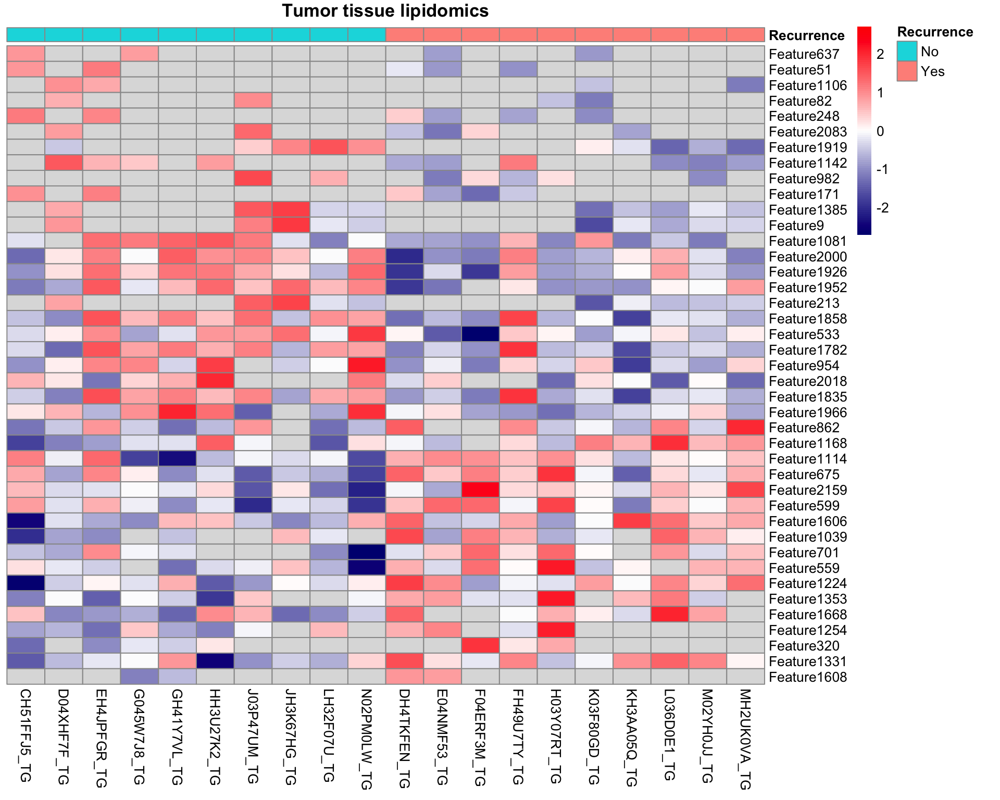
Use probabilistic dropout model to account for missing values and identify differentially abundant lipids in Tumor tissue that are significantly associated with cancer recurrence. Note that features in heatmap are ordered by their t-statistics.
# Fit linear probabilistic dropout model to normalized data
fit <- proDA::proDA(datMat, design = ~ smpAnno$Recurrence)
# fit
# Check coefficient names for Parameter 'contrast' in proDA::test_diff()
# proDA::result_names(fit)
# Identify significant differentially abundant entities
all_proDALipTumorRes <- proDA::test_diff(fit,
contrast = Intercept + `smpAnno$RecurrenceYes` - Intercept,
sort_by = 'pval')
proDALipTumorRes <- dplyr::select(all_proDALipTumorRes,
-c(diff, se, df, avg_abundance, n_approx)) %>%
dplyr::filter(pval < 0.05) %>%
dplyr::mutate(MZ_RT = plyr::mapvalues(name,
from = featInfo$Feature,
to = featInfo$MZ.RT,
warn_missing = F))
proDALipTumorRes name pval adj_pval t_statistic n_obs MZ_RT
1 Feature51 0.0001967235 0.4264967 -4.655540 5 285.28997/1.45
2 Feature1331 0.0182482149 0.9999440 2.596104 20 786.6006/5.48
3 Feature1353 0.0188775208 0.9999440 2.579956 16 790.5584/3.99
4 Feature1668 0.0237032845 0.9999440 2.470762 17 836.66076/6.51
5 Feature1039 0.0253473301 0.9999440 2.438320 15 744.55293/5.63
6 Feature1919 0.0262881930 0.9999440 -2.420631 10 903.5673/4.92
7 Feature9 0.0264581845 0.9999440 -2.417499 10 221.17483/2.6
8 Feature1224 0.0298584591 0.9999440 2.358498 20 771.568/5.52
9 Feature1926 0.0330904974 0.9999440 -2.307959 20 904.59059/4.56
10 Feature2083 0.0337280025 0.9999440 -2.298535 6 964.30016/5.74
11 Feature2000 0.0362503714 0.9999440 -2.262797 20 925.51918/4.56
12 Feature701 0.0372073303 0.9999440 2.249837 16 683.31335/3.49
13 Feature1858 0.0378030390 0.9999440 -2.241925 20 881.51429/4.01
14 Feature213 0.0387962542 0.9999440 -2.228984 10 431.38426/2.61
15 Feature162 0.0389164463 0.9999440 -2.227439 4 378.29374/1.6
16 Feature1081 0.0391185051 0.9999440 -2.224851 18 750.54034/5.07
17 Feature559 0.0400438692 0.9999440 2.213154 18 641.30195/4.88
18 Feature1254 0.0418351415 0.9999440 2.191202 12 775.54787/4.4
19 Feature209 0.0443045431 0.9999440 -2.162312 8 430.36376/2.62
20 Feature1782 0.0445081975 0.9999440 -2.159996 20 859.53153/4.01
21 Feature1114 0.0483834788 0.9999440 2.117670 20 756.42976/5.93
22 Feature2018 0.0495323131 0.9999440 -2.105716 15 934.81741/7.92# Plot molecular signatures in input data
# Order features according to t-statistics
featOrder <- dplyr::arrange(proDALipTumorRes, dplyr::desc(t_statistic))$name
pheatmap::pheatmap(datMat[featOrder, smpOrder],
annotation_col = smpRecur,
color = colorRampPalette(c('navy', 'white', 'red'))(100),
cluster_rows = F, cluster_cols = F,
scale = 'row', main = 'Tumor tissue lipidomics (proDA)')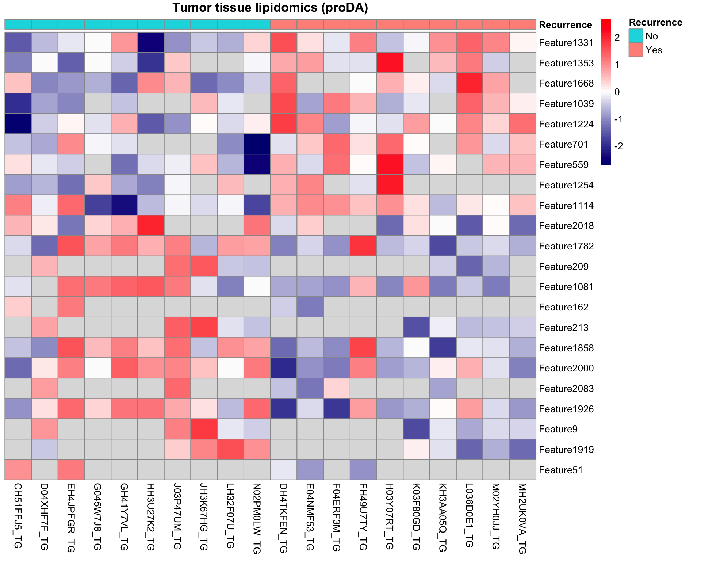
# Store table in list for creating Excel file
sigFeatSheet <- append(sigFeatSheet, list(TumorTissueLipid_Feats = proDALipTumorRes))ovl <- intersect(lipTumorRes$tFeatSigRes$Var1, proDALipTumorRes$name)
cat('The following features', paste0('(n =', length(ovl), ')'),
'are tested significant by both methods:\n', ovl)The following features (n =20) are tested significant by both methods:
Feature1331 Feature51 Feature1919 Feature1668 Feature1353 Feature1224 Feature1081 Feature1254 Feature2000 Feature1926 Feature559 Feature701 Feature9 Feature1858 Feature1039 Feature2083 Feature1782 Feature213 Feature1114 Feature2018Visualize data of top 6 significant features
# Visualize data of top 6 significant features
topSigFeats <- proDALipTumorRes$name[2:7]
topSigFeatData <- tibble::as_tibble(datMat[topSigFeats,], rownames = 'Feature') %>%
tidyr::pivot_longer(cols = -'Feature',
names_to = 'Sample', values_to = 'Abundance') %>%
dplyr::mutate(Feature = factor(Feature, levels = topSigFeats)) %>%
dplyr::left_join(smpAnno, by = 'Sample')
ggplot(topSigFeatData, aes(x=Recurrence, y=Abundance, col=Recurrence, fill=Recurrence)) +
geom_boxplot(alpha = 0.5, outlier.shape = NA) +
geom_jitter(position = position_jitter(0.2), size = 2, show.legend = F) +
scale_color_manual(values=c('#00BFC4', '#F8766D')) +
scale_fill_manual(values=c('#00BFC4', '#F8766D')) +
facet_wrap(vars(Feature), scales = 'free') +
ggpubr::stat_compare_means(method = 't.test', paired = F,
method.args = list(var.equal = T),
show.legend = F)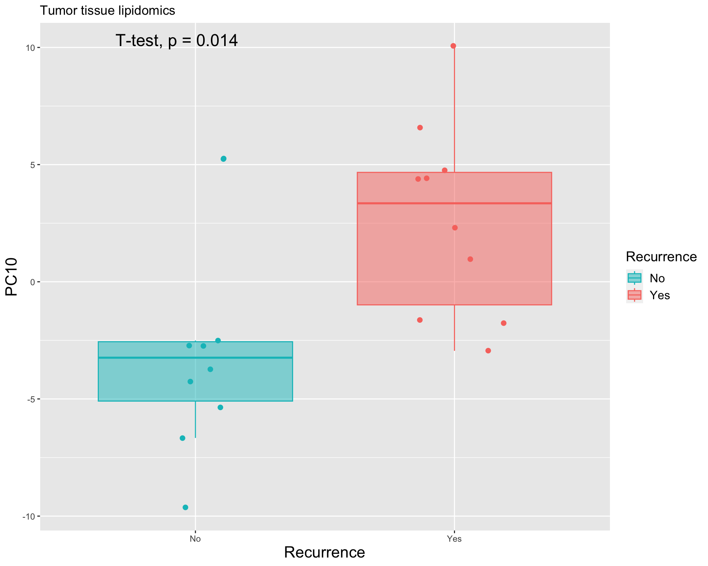
Display significant associations between PCs (Var1) and cancer recurrence (Var2)
# Display PCs that can significantly separate recurrence and non-recurrence
# patients
tPCASigRes Var1 Var2 pVal tStats pValAdj
1 PC10 Recurrence 0.01358032 -2.735694 0.1600658
2 PC13 Recurrence 0.01600658 2.658269 0.1600658# Display proportion of total variance captured by all PCs explained by each PC
varExplained <- pcaRes$sdev^2 / sum(pcaRes$sdev^2)
PC <- paste0('PC', seq(length(varExplained)))
varTab <- data.frame(PC = factor(PC, levels = PC),
Var_explained = varExplained)
ggplot(varTab, aes(x=PC, y=Var_explained*100)) +
geom_col() +
labs(x = '', y = 'Variance explained (%)',
title = 'Tumor tissue lipidomics')PC10 potentially separates recurrence and non-recurrence patients.
# Visualize PCs
ggplot(pcTab, aes(x=Recurrence, y=PC10, col=Recurrence, fill=Recurrence)) +
geom_boxplot(alpha = 0.5, outlier.shape = NA) +
geom_jitter(position = position_jitter(0.2), size = 2, show.legend = F) +
labs(title = 'Tumor tissue lipidomics') +
scale_color_manual(values=c('#00BFC4', '#F8766D')) +
scale_fill_manual(values=c('#00BFC4', '#F8766D')) +
ggpubr::stat_compare_means(method = 't.test', paired = F, size = 6,
method.args = list(var.equal = T), hjust = 0.65,
show.legend = F) +
theme(axis.title = element_text(size = 16),
legend.title = element_text(size = 14), legend.text = element_text(size = 12))Plot molecular signatures captured by PC10 in input data. We took a look at top 20 features with highest loadings and observed metabolite levels of these top features through heatmap. Note that features in heatmap are ordered by their loadings.
# Plot molecular signatures in input data
# Extract top features with highest loadings
topFeats <- pcTopFeatTab$PC10$Feature[1:20]
# Order features by loadings
topFeatsIdx <- sapply(topFeats, function(feat) {which(rownames(datMat) == feat)})
pheatmap::pheatmap(datMat[topFeatsIdx, smpOrder],
annotation_col = smpRecur,
color = colorRampPalette(c('navy', 'white', 'red'))(100),
cluster_rows = F, cluster_cols = F,
scale = 'row', main = 'Tumor tissue lipidomics - PC10')Display top features that build the PC10
# Display top features with highest loadings of PC of interest
pcTopFeats <- dplyr::left_join(pcTopFeatTab$PC10, featInfo, by = 'Feature')
pcTopFeats Feature Loading MZ.RT
1 Feature494 0.15133654 613.16361/3.64
2 Feature489 0.14912864 612.16287/3.63
3 Feature122 0.13594068 348.07027/0.76
4 Feature723 0.13487844 686.18169/4.13
5 Feature727 0.13011553 687.18239/4.13
6 Feature203 0.12130265 429.0885/2.71
7 Feature371 0.10802120 553.19708/3.69
8 Feature2118 0.10214622 983.25876/6.09
9 Feature367 0.10024084 552.1963/3.69
10 Feature2115 0.09562471 982.25728/6.11
11 Feature173 0.09026333 384.11504/0.76
12 Feature384 0.08891269 566.54971/6.03
13 Feature28 0.08689057 253.26376/1.54
14 Feature272 0.08353951 482.32394/2.48
15 Feature1898 0.08286504 894.75265/7.53
16 Feature552 0.08231827 639.63895/6.03
17 Feature519 0.08136969 626.21489/4.2
18 Feature269 0.07815278 480.30835/2.08
19 Feature1233 0.07462200 772.58446/6.03
20 Feature362 0.07292623 550.38636/2.47
21 Feature939 0.07256046 730.53721/4.5
22 Feature1137 0.07106070 759.63632/5.9
23 Feature1628 0.07051542 831.6936/6.11
24 Feature931 0.07011106 728.58777/2.97
25 Feature2098 0.06989495 972.73372/6.24
26 Feature1911 0.06929915 900.55919/3.87
27 Feature428 0.06914913 590.48054/4.2
28 Feature1550 0.06766496 816.64643/6.31
29 Feature1265 0.06735785 776.6151/6.01
30 Feature900 0.06666229 721.58404/4.31# Store table in list for creating Excel file
sigFeatSheet <- append(sigFeatSheet, list(TumorTissueLipid_PC10 = pcTopFeats))Another PC that significantly separates recurrence and non-recurrence patients
# Visualize PCs
ggplot(pcTab, aes(x=Recurrence, y=PC13, col=Recurrence, fill=Recurrence)) +
geom_boxplot(alpha = 0.5, outlier.shape = NA) +
geom_jitter(position = position_jitter(0.2), size = 2, show.legend = F) +
labs(title = 'Tumor tissue lipidomics') +
scale_color_manual(values=c('#00BFC4', '#F8766D')) +
scale_fill_manual(values=c('#00BFC4', '#F8766D')) +
ggpubr::stat_compare_means(method = 't.test', paired = F, size = 6,
method.args = list(var.equal = T), hjust = 0.65,
show.legend = F) +
theme(axis.title = element_text(size = 16),
legend.title = element_text(size = 14), legend.text = element_text(size = 12))# Plot molecular signatures in input data
# Extract top features with highest loadings
topFeats <- pcTopFeatTab$PC13$Feature[1:20]
# Order features by loadings
topFeatsIdx <- sapply(topFeats, function(feat) {which(rownames(datMat) == feat)})
pheatmap::pheatmap(datMat[topFeatsIdx, smpOrder],
annotation_col = smpRecur,
color = colorRampPalette(c('navy', 'white', 'red'))(100),
cluster_rows = F, cluster_cols = F,
scale = 'row', main = 'Tumor tissue lipidomics - PC13')# Display top features with highest loadings of PC of interest
pcTopFeats <- dplyr::left_join(pcTopFeatTab$PC13, featInfo, by = 'Feature')
pcTopFeats Feature Loading MZ.RT
1 Feature122 0.17380132 348.07027/0.76
2 Feature30 0.12584706 258.10997/0.78
3 Feature193 0.10469559 420.33183/2.22
4 Feature315 0.09471441 531.40726/4.2
5 Feature186 0.09038262 408.29334/2.5
6 Feature229 0.08852163 448.34214/1.76
7 Feature16 0.08629461 232.15435/1.08
8 Feature464 0.08521369 604.49625/4.2
9 Feature1250 0.08389838 774.70989/8.24
10 Feature1869 0.08175390 886.55148/4.05
11 Feature718 0.08051193 685.20256/5.86
12 Feature428 0.08044369 590.48054/4.2
13 Feature713 0.07609254 684.20188/5.86
14 Feature729 0.07578127 688.58639/6.27
15 Feature622 0.07567807 662.57096/6.24
16 Feature1294 0.07551660 781.59288/5.22
17 Feature1769 0.07385598 854.69624/6.6
18 Feature1687 0.07306834 838.62723/6.3
19 Feature2154 0.07097309 1064.60178/4.07
20 Feature724 0.07077478 686.20094/5.86
21 Feature642 0.06992522 667.52618/6.23
22 Feature1547 0.06985708 816.63796/5.92
23 Feature1772 0.06967323 855.69928/6.59
24 Feature1167 0.06955516 764.55804/4.56
25 Feature373 0.06872053 554.17574/2.45
26 Feature577 0.06829873 644.55965/6.26
27 Feature208 0.06721799 429.37228/4.06
28 Feature210 0.06634027 430.37947/5.14
29 Feature413 0.06628650 579.42566/2.58
30 Feature1289 0.06489294 780.58975/5.22# Store table in list for creating Excel file
sigFeatSheet <- append(sigFeatSheet, list(TumorTissueLipid_PC13 = pcTopFeats))Normal samples
Display significant associations between features (Var1) and cancer recurrence (Var2) and observe molecular signatures in input data through heatmap. Note that features in heatmap are ordered by their t-statistics.
# Subset normal samples
smpNormalIdx <- which(colData(lipTissueVsn)$Condition == 'Normal')
lipNormal <- lipTissueVsn[, smpNormalIdx]
# Perform analysis
lipNormalRes <- SOA(lipNormal, factor = 'Recurrence', num_feats = 30)
datMat <- lipNormalRes$data
smpAnno <- lipNormalRes$smpMetadata
tFeatSigRes <- lipNormalRes$tFeatSigRes
tPCASigRes <- lipNormalRes$tPCASigRes
pcaRes <- lipNormalRes$pcaRes
pcTab <- lipNormalRes$pcTab
pcTopFeatTab <- lipNormalRes$pcTopFeatTab
# Display features that can significantly separate recurrence and non-recurrence
# patients
sigFeatTab <- dplyr::mutate(tFeatSigRes, MZ.RT = plyr::mapvalues(Var1,
from = featInfo$Feature,
to = featInfo$MZ.RT,
warn_missing = F))
sigFeatTab Var1 Var2 pVal tStats pValAdj MZ.RT
1 Feature1344 Recurrence 0.002462417 -4.344805 0.9991556 788.61518/5.9
2 Feature435 Recurrence 0.005120548 7.391827 0.9991556 590.54957/7.29
3 Feature439 Recurrence 0.006204232 -4.533730 0.9991556 590.54966/7.75
4 Feature294 Recurrence 0.006398199 3.107691 0.9991556 512.42897/3.14
5 Feature1722 Recurrence 0.006504011 -6.799690 0.9991556 844.73787/7.61
6 Feature1613 Recurrence 0.009471128 -2.903616 0.9991556 827.67268/6.3
7 Feature279 Recurrence 0.013553230 2.736631 0.9991556 488.39414/3.66
8 Feature1585 Recurrence 0.014011603 -2.721012 0.9991556 823.54335/4.94
9 Feature1452 Recurrence 0.017994752 -2.635460 0.9991556 801.65774/6.31
10 Feature1293 Recurrence 0.018770204 -2.597672 0.9991556 781.59037/5.85
11 Feature1484 Recurrence 0.018924433 -2.855315 0.9991556 808.61898/5.7
12 Feature1512 Recurrence 0.019101988 2.589195 0.9991556 812.5404/5.29
13 Feature1611 Recurrence 0.019819862 -2.556705 0.9991556 826.67/6.32
14 Feature91 Recurrence 0.020063813 3.743279 0.9991556 338.34131/8.84
15 Feature688 Recurrence 0.022391612 2.511980 0.9991556 680.63284/8
16 Feature1068 Recurrence 0.023890806 2.872957 0.9991556 748.54832/4.09
17 Feature1776 Recurrence 0.023926339 -2.466239 0.9991556 856.71466/6.84
18 Feature1769 Recurrence 0.025119449 -2.442697 0.9991556 854.69624/6.6
19 Feature1217 Recurrence 0.026964504 -2.408279 0.9991556 770.60321/5.26
20 Feature59 Recurrence 0.028789155 2.457775 0.9991556 299.0616/3.18
21 Feature1166 Recurrence 0.028889598 -2.386754 0.9991556 764.55441/5.15
22 Feature1455 Recurrence 0.030862417 2.353973 0.9991556 802.63057/6.73
23 Feature57 Recurrence 0.030987823 2.418575 0.9991556 297.08235/3.63
24 Feature1018 Recurrence 0.032636125 2.414625 0.9991556 741.38818/4.07
25 Feature1807 Recurrence 0.032779432 -2.312618 0.9991556 865.65028/5.87
26 Feature296 Recurrence 0.033224428 2.305965 0.9991556 516.42534/4.19
27 Feature25 Recurrence 0.034514727 -2.287130 0.9991556 248.14914/1.02
28 Feature666 Recurrence 0.035212527 2.277214 0.9991556 673.52699/3.55
29 Feature239 Recurrence 0.035903090 -2.267578 0.9991556 454.3889/2.44
30 Feature832 Recurrence 0.035986069 2.388038 0.9991556 709.55676/2.66
31 Feature1614 Recurrence 0.036174116 -2.263843 0.9991556 827.699/6.49
32 Feature1143 Recurrence 0.036331509 -2.510696 0.9991556 760.58429/5.32
33 Feature1440 Recurrence 0.037530144 -2.245535 0.9991556 799.66773/6.12
34 Feature1165 Recurrence 0.038912042 2.227495 0.9991556 764.54319/4.24
35 Feature907 Recurrence 0.040328990 -4.827665 0.9991556 722.52615/6.27
36 Feature630 Recurrence 0.040426070 2.208396 0.9991556 665.58371/6.38
37 Feature952 Recurrence 0.041537887 2.490964 0.9991556 732.59789/7.69
38 Feature1571 Recurrence 0.042621945 -2.181831 0.9991556 820.61983/5.18
39 Feature1691 Recurrence 0.043386667 -2.172874 0.9991556 838.67444/6.31
40 Feature1028 Recurrence 0.045368158 -2.256520 0.9991556 742.53713/5.15
41 Feature1181 Recurrence 0.045746206 -2.208866 0.9991556 766.53711/5.11
42 Feature1740 Recurrence 0.046104418 -2.142170 0.9991556 849.68169/6.49
43 Feature1447 Recurrence 0.046671822 -2.197963 0.9991556 800.65783/6.32
44 Feature2031 Recurrence 0.047737275 -2.227470 0.9991556 940.83084/7.76
45 Feature1809 Recurrence 0.047886602 -2.478747 0.9991556 866.69856/6.71
46 Feature266 Recurrence 0.048295526 -2.248585 0.9991556 476.37341/2.01
47 Feature995 Recurrence 0.048614899 2.115241 0.9991556 738.58068/5.28# Plot molecular signatures in input data
# Order features according to t-statistics
featOrder <- dplyr::arrange(tFeatSigRes, dplyr::desc(tStats))$Var1
# Arrange samples to make same groups in same clusters
smpOrder <- c(which(smpAnno$Recurrence == 'No'),
which(smpAnno$Recurrence == 'Yes'))
# Prepare recurrence table for annotating samples in heatmap
smpRecur <- dplyr::select(smpAnno, Sample, Recurrence) %>%
tibble::column_to_rownames('Sample')
pheatmap::pheatmap(datMat[featOrder, smpOrder],
annotation_col = smpRecur,
color = colorRampPalette(c('navy', 'white', 'red'))(100),
cluster_rows = F, cluster_cols = F, show_rownames = T,
scale = 'row', main = 'Normal tissue lipidomics')Use probabilistic dropout model to account for missing values and identify differentially abundant lipids in Normal tissue that are significantly associated with cancer recurrence. Note that features in heatmap are ordered by their t-statistics.
# Fit linear probabilistic dropout model to normalized data
fit <- proDA::proDA(datMat, design = ~ smpAnno$Recurrence)
# fit
# Check coefficient names for Parameter 'contrast' in proDA::test_diff()
# proDA::result_names(fit)
# Identify significant differentially abundant entities
all_proDALipNormalRes <- proDA::test_diff(fit,
contrast = Intercept + `smpAnno$RecurrenceYes` - Intercept,
sort_by = 'pval')
proDALipNormalRes <- dplyr::select(all_proDALipNormalRes,
-c(diff, se, df, avg_abundance, n_approx)) %>%
dplyr::filter(pval < 0.05) %>%
dplyr::mutate(MZ_RT = plyr::mapvalues(name,
from = featInfo$Feature,
to = featInfo$MZ.RT,
warn_missing = F))
proDALipNormalRes name pval adj_pval t_statistic n_obs MZ_RT
1 Feature1344 0.002067757 0.9995859 3.595508 10 788.61518/5.9
2 Feature294 0.007701752 0.9995859 -2.999023 19 512.42897/3.14
3 Feature1613 0.011022624 0.9995859 2.833208 20 827.67268/6.3
4 Feature1484 0.012568199 0.9995859 2.771984 11 808.61898/5.7
5 Feature1585 0.016509699 0.9995859 2.643626 20 823.54335/4.94
6 Feature279 0.016754380 0.9995859 -2.636658 20 488.39414/3.66
7 Feature907 0.018072340 0.9995859 2.600711 4 722.52615/6.27
8 Feature1512 0.019617969 0.9995859 -2.561597 19 812.5404/5.29
9 Feature1452 0.021143528 0.9995859 2.525753 18 801.65774/6.31
10 Feature59 0.023955892 0.9995859 -2.465642 15 299.0616/3.18
11 Feature1611 0.024257183 0.9995859 2.459602 20 826.67/6.32
12 Feature1293 0.024373273 0.9995859 2.457293 19 781.59037/5.85
13 Feature324 0.024375287 0.9995859 2.457253 3 538.14429/3.3
14 Feature57 0.026905264 0.9995859 -2.409349 15 297.08235/3.63
15 Feature1769 0.030229033 0.9995859 2.352451 20 854.69624/6.6
16 Feature91 0.031311141 0.9995859 -2.335183 6 338.34131/8.84
17 Feature1018 0.031436719 0.9995859 -2.333215 14 741.38818/4.07
18 Feature1722 0.033288263 0.9995859 2.305017 5 844.73787/7.61
19 Feature210 0.033289690 0.9995859 2.304996 8 430.37947/5.14
20 Feature439 0.034916045 0.9995859 2.281405 7 590.54966/7.75
21 Feature1807 0.036342420 0.9995859 2.261537 20 865.65028/5.87
22 Feature1166 0.036772579 0.9995859 2.255686 19 764.55441/5.15
23 Feature1217 0.036994355 0.9995859 2.252695 20 770.60321/5.26
24 Feature688 0.037017836 0.9995859 -2.252379 19 680.63284/8
25 Feature1758 0.037273389 0.9995859 2.248954 5 852.68019/6.33
26 Feature25 0.037365811 0.9995859 2.247721 20 248.14914/1.02
27 Feature832 0.037709110 0.9995859 -2.243165 13 709.55676/2.66
28 Feature296 0.038042241 0.9995859 -2.238780 20 516.42534/4.19
29 Feature1776 0.038344244 0.9995859 2.234835 20 856.71466/6.84
30 Feature1447 0.038953207 0.9995859 2.226967 15 800.65783/6.32
31 Feature239 0.041230408 0.9995859 2.198515 20 454.3889/2.44
32 Feature266 0.043651075 0.9995859 2.169811 12 476.37341/2.01
33 Feature952 0.043903118 0.9995859 -2.166907 9 732.59789/7.69
34 Feature1165 0.044916249 0.9995859 -2.155384 20 764.54319/4.24
35 Feature630 0.044971986 0.9995859 -2.154757 20 665.58371/6.38
36 Feature1025 0.047984163 0.9995859 -2.121886 15 742.24434/4.13
37 Feature82 0.048195597 0.9995859 -2.119650 3 338.34124/6.24
38 Feature1571 0.049737743 0.9995859 2.103605 20 820.61983/5.18# Plot molecular signatures in input data
# Order features according to t-statistics
featOrder <- dplyr::arrange(proDALipNormalRes, dplyr::desc(t_statistic))$name
pheatmap::pheatmap(datMat[featOrder, smpOrder],
annotation_col = smpRecur,
color = colorRampPalette(c('navy', 'white', 'red'))(100),
cluster_rows = F, cluster_cols = F,
scale = 'row', main = 'Normal tissue lipidomics (proDA)')
# Store table in list for creating Excel file
sigFeatSheet <- append(sigFeatSheet, list(NormalTissueLipid_Feats = proDALipNormalRes))ovl <- intersect(lipNormalRes$tFeatSigRes$Var1, proDALipNormalRes$name)
cat('The following features', paste0('(n =', length(ovl), ')'),
'are tested significant by both methods:\n', ovl)The following features (n =33) are tested significant by both methods:
Feature1344 Feature439 Feature294 Feature1722 Feature1613 Feature279 Feature1585 Feature1452 Feature1293 Feature1484 Feature1512 Feature1611 Feature91 Feature688 Feature1776 Feature1769 Feature1217 Feature59 Feature1166 Feature57 Feature1018 Feature1807 Feature296 Feature25 Feature239 Feature832 Feature1165 Feature907 Feature630 Feature952 Feature1571 Feature1447 Feature266Visualize data of top 6 significant features
# Visualize data of top 6 significant features
topSigFeats <- proDALipNormalRes$name[1:6]
topSigFeatData <- tibble::as_tibble(datMat[topSigFeats,], rownames = 'Feature') %>%
tidyr::pivot_longer(cols = -'Feature',
names_to = 'Sample', values_to = 'Abundance') %>%
dplyr::mutate(Feature = factor(Feature, levels = topSigFeats)) %>%
dplyr::left_join(smpAnno, by = 'Sample')
ggplot(topSigFeatData, aes(x=Recurrence, y=Abundance, col=Recurrence, fill=Recurrence)) +
geom_boxplot(alpha = 0.5, outlier.shape = NA) +
geom_jitter(position = position_jitter(0.2), size = 2, show.legend = F) +
scale_color_manual(values=c('#00BFC4', '#F8766D')) +
scale_fill_manual(values=c('#00BFC4', '#F8766D')) +
facet_wrap(vars(Feature), scales = 'free') +
ggpubr::stat_compare_means(method = 't.test', paired = F,
method.args = list(var.equal = T),
show.legend = F)
Display significant associations between PCs (Var1) and cancer recurrence (Var2)
# Display PCs that can significantly separate recurrence and non-recurrence
# patients
tPCASigRes Var1 Var2 pVal tStats pValAdj
1 PC14 Recurrence 0.04070289 -2.204975 0.6100138# Display proportion of total variance captured by all PCs explained by each PC
varExplained <- pcaRes$sdev^2 / sum(pcaRes$sdev^2)
PC <- paste0('PC', seq(length(varExplained)))
varTab <- data.frame(PC = factor(PC, levels = PC),
Var_explained = varExplained)
ggplot(varTab, aes(x=PC, y=Var_explained*100)) +
geom_col() +
labs(x = '', y = 'Variance explained (%)',
title = 'Normal tissue lipidomics')PC14 potentially separates recurrence and non-recurrence patients.
# Visualize PCs
ggplot(pcTab, aes(x=Recurrence, y=PC14, col=Recurrence, fill=Recurrence)) +
geom_boxplot(alpha = 0.5, outlier.shape = NA) +
geom_jitter(position = position_jitter(0.2), size = 2, show.legend = F) +
labs(title = 'Normal tissue lipidomics') +
scale_color_manual(values=c('#00BFC4', '#F8766D')) +
scale_fill_manual(values=c('#00BFC4', '#F8766D')) +
ggpubr::stat_compare_means(method = 't.test', paired = F, size = 6,
method.args = list(var.equal = T), hjust = 0.65,
show.legend = F) +
theme(axis.title = element_text(size = 16),
legend.title = element_text(size = 14), legend.text = element_text(size = 12))Plot molecular signatures captured by PC14 in input data. We took a look at top 20 features with highest loadings and observed metabolite levels of these top features through heatmap. Note that features in heatmap are ordered by their loadings.
# Plot molecular signatures in input data
# Extract top features with highest loadings
topFeats <- pcTopFeatTab$PC14$Feature[1:20]
# Order features by loadings
topFeatsIdx <- sapply(topFeats, function(feat) {which(rownames(datMat) == feat)})
pheatmap::pheatmap(datMat[topFeatsIdx, smpOrder],
annotation_col = smpRecur,
color = colorRampPalette(c('navy', 'white', 'red'))(100),
cluster_rows = F, cluster_cols = F,
scale = 'row', main = 'Tumor tissue lipidomics - PC14')Display top features that build the PC14
# Display top features with highest loadings of PC of interest
pcTopFeats <- dplyr::left_join(pcTopFeatTab$PC14, featInfo, by = 'Feature')
pcTopFeats Feature Loading MZ.RT
1 Feature60 0.18244848 302.30526/1.65
2 Feature934 0.17625756 729.41396/1.06
3 Feature532 0.15168859 630.34584/1.05
4 Feature493 0.15124444 613.15932/0.87
5 Feature38 0.11729618 269.08818/0.78
6 Feature47 0.11689031 279.26788/3.09
7 Feature25 0.10919864 248.14914/1.02
8 Feature229 0.10655276 448.34214/1.76
9 Feature19 0.10593399 235.18042/1.19
10 Feature296 0.10021673 516.42534/4.19
11 Feature44 0.08890274 276.11898/0.76
12 Feature1354 0.08882994 790.55948/4.29
13 Feature279 0.08845278 488.39414/3.66
14 Feature928 0.08729799 728.52129/4.08
15 Feature42 0.08598738 274.27403/1.43
16 Feature1626 0.08226002 831.56906/4.92
17 Feature760 0.07905190 694.64776/8.05
18 Feature2147 0.07679578 1024.67711/4.43
19 Feature1240 0.07641820 773.53195/4.29
20 Feature1118 0.07478063 756.55308/4.48
21 Feature1491 0.07477170 809.48971/7.24
22 Feature1292 0.07172152 781.45882/7.01
23 Feature269 0.07169730 480.30835/2.08
24 Feature450 0.06949691 593.44132/3.01
25 Feature710 0.06918051 683.54305/2.52
26 Feature1261 0.06904583 776.5583/5.26
27 Feature192 0.06762014 416.33705/1.69
28 Feature1588 0.06727806 823.63959/6.01
29 Feature300 0.06653013 522.20298/0.77
30 Feature1431 0.06632843 798.62721/5.67# Store table in list for creating Excel file
sigFeatSheet <- append(sigFeatSheet, list(NormalTissueLipid_PC14 = pcTopFeats))Difference in tissue conditions
Differences between Tumor and Normal samples (Tumor matrix - Normal
matrix):
Display significant associations between features (Var1) and cancer recurrence (Var2) and observe molecular signatures in input data through heatmap. Note that features in heatmap are ordered by their t-statistics.
# Subset tumor samples
smpTumorIdx <- which(colData(lipTissueVsn)$Condition == 'Tumor')
lipTumor <- lipTissueVsn[, smpTumorIdx]
# Subset normal samples
smpNormalIdx <- which(colData(lipTissueVsn)$Condition == 'Normal')
lipNormal <- lipTissueVsn[, smpNormalIdx]
# Modify column names for matching two matrices
colnames(lipTumor) <- stringr::str_remove(colnames(lipTumor), '_TG')
colnames(lipNormal) <- stringr::str_remove(colnames(lipNormal), '_NG')
# Retrieve data matrix
lipTumorMat <- SummarizedExperiment::assay(lipTumor)
lipNormalMat <- SummarizedExperiment::assay(lipNormal)
# Subtract tumor matrix by normal matrix
if (identical(colnames(lipTumorMat), colnames(lipNormalMat)) &
identical(rownames(lipTumorMat), rownames(lipNormalMat))) {
lipTissueDiffMat <- lipTumorMat - lipNormalMat
} else {
print('Align samples or features first.')
}
# Retrieve samples metadata for creating SE object
colAnno <- dplyr::select(as.data.frame(colData(lipTumor)), Patient, Recurrence)
lipTissueDiff <- SummarizedExperiment(assays = lipTissueDiffMat, colData = colAnno)
# Perform analysis
lipTissueDiffRes <- SOA(lipTissueDiff, factor = 'Recurrence', num_feats = 30)
datMat <- lipTissueDiffRes$data
smpAnno <- lipTissueDiffRes$smpMetadata
tFeatSigRes <- lipTissueDiffRes$tFeatSigRes
tPCASigRes <- lipTissueDiffRes$tPCASigRes
pcaRes <- lipTissueDiffRes$pcaRes
pcTab <- lipTissueDiffRes$pcTab
pcTopFeatTab <- lipTissueDiffRes$pcTopFeatTab
# Display features that can significantly separate recurrence and non-recurrence
# patients
sigFeatTab <- dplyr::mutate(tFeatSigRes, MZ.RT = plyr::mapvalues(Var1,
from = featInfo$Feature,
to = featInfo$MZ.RT,
warn_missing = F))
sigFeatTab Var1 Var2 pVal tStats pValAdj MZ.RT
1 Feature150 Recurrence 0.0009032697 8.841879 0.94587 369.35126/4.93
2 Feature2000 Recurrence 0.0020721370 3.594557 0.94587 925.51918/4.56
3 Feature2031 Recurrence 0.0021164178 4.108264 0.94587 940.83084/7.76
4 Feature276 Recurrence 0.0034749749 183.199439 0.94587 482.4043/7.79
5 Feature655 Recurrence 0.0040196159 -3.323634 0.94587 669.33352/4.34
6 Feature1010 Recurrence 0.0055475279 -3.174152 0.94587 740.37842/4.05
7 Feature1018 Recurrence 0.0058862852 -3.483536 0.94587 741.38818/4.07
8 Feature1858 Recurrence 0.0060602460 3.108893 0.94587 881.51429/4.01
9 Feature1853 Recurrence 0.0071544500 3.081311 0.94587 879.82041/7.93
10 Feature1782 Recurrence 0.0074698641 3.013076 0.94587 859.53153/4.01
11 Feature312 Recurrence 0.0079790859 -2.982746 0.94587 529.17727/2.58
12 Feature633 Recurrence 0.0088876322 2.953783 0.94587 666.51379/5.96
13 Feature702 Recurrence 0.0089924955 -2.927600 0.94587 683.34877/5.67
14 Feature1926 Recurrence 0.0091506748 2.919540 0.94587 904.59059/4.56
15 Feature1883 Recurrence 0.0094794927 2.903207 0.94587 889.56985/4.57
16 Feature1006 Recurrence 0.0101105888 -2.893039 0.94587 739.6055/3.03
17 Feature378 Recurrence 0.0101861892 -3.002684 0.94587 557.41237/2.59
18 Feature1835 Recurrence 0.0110850991 2.830577 0.94587 876.55903/4.01
19 Feature1952 Recurrence 0.0113756761 2.883195 0.94587 908.53688/4.06
20 Feature1401 Recurrence 0.0119102445 -2.836447 0.94587 795.66755/3.64
21 Feature165 Recurrence 0.0124142433 -2.777748 0.94587 379.28169/2.74
22 Feature998 Recurrence 0.0130108823 -2.755779 0.94587 739.37554/4.05
23 Feature592 Recurrence 0.0141012973 -2.718013 0.94587 651.34283/4.5
24 Feature599 Recurrence 0.0141827587 -2.715305 0.94587 655.31756/5
25 Feature575 Recurrence 0.0155514175 -2.671899 0.94587 644.30392/4.66
26 Feature162 Recurrence 0.0166756195 38.167947 0.94587 378.29374/1.6
27 Feature377 Recurrence 0.0167930422 -2.635566 0.94587 557.20876/3.05
28 Feature1293 Recurrence 0.0175730818 2.629494 0.94587 781.59037/5.85
29 Feature1103 Recurrence 0.0179843342 -2.603032 0.94587 753.42705/5.93
30 Feature1138 Recurrence 0.0205879891 6.861283 0.94587 760.20034/4.67
31 Feature744 Recurrence 0.0208482567 -2.968629 0.94587 691.52925/2.53
32 Feature675 Recurrence 0.0210823128 -2.527143 0.94587 679.37402/5.17
33 Feature1418 Recurrence 0.0211977012 -2.619712 0.94587 797.45229/6.65
34 Feature548 Recurrence 0.0219119222 -2.508614 0.94587 637.30751/4.17
35 Feature188 Recurrence 0.0222709927 -2.500799 0.94587 409.32846/3.64
36 Feature1114 Recurrence 0.0225119438 -2.495621 0.94587 756.42976/5.93
37 Feature566 Recurrence 0.0234462187 -2.476025 0.94587 642.30542/4.66
38 Feature210 Recurrence 0.0249447334 2.970396 0.94587 430.37947/5.14
39 Feature518 Recurrence 0.0257383373 -2.430895 0.94587 623.31179/3.92
40 Feature120 Recurrence 0.0259640474 -2.426657 0.94587 341.30499/3.12
41 Feature816 Recurrence 0.0261583474 -2.423037 0.94587 707.40494/4.52
42 Feature33 Recurrence 0.0264237717 -2.418131 0.94587 267.26814/3.12
43 Feature701 Recurrence 0.0264825814 -2.528700 0.94587 683.31335/3.49
44 Feature279 Recurrence 0.0265831502 -2.415208 0.94587 488.39414/3.66
45 Feature25 Recurrence 0.0268979493 2.409482 0.94587 248.14914/1.02
46 Feature21 Recurrence 0.0272935245 -2.414849 0.94587 239.23691/2.6
47 Feature442 Recurrence 0.0276979954 22.969822 0.94587 590.54983/7.07
48 Feature652 Recurrence 0.0278209378 -2.393046 0.94587 669.33327/5.35
49 Feature1161 Recurrence 0.0279002706 -2.391658 0.94587 763.46823/5.8
50 Feature920 Recurrence 0.0281338883 -2.387589 0.94587 725.39571/5.36
51 Feature663 Recurrence 0.0282934488 -2.384829 0.94587 672.33546/5.36
52 Feature999 Recurrence 0.0288317511 -2.375622 0.94587 739.37555/3.18
53 Feature837 Recurrence 0.0294883283 -2.364607 0.94587 710.39661/4.17
54 Feature1385 Recurrence 0.0297830985 2.834452 0.94587 793.62708/2.72
55 Feature676 Recurrence 0.0308571556 -2.342359 0.94587 679.37407/4.51
56 Feature2114 Recurrence 0.0308574005 -2.342355 0.94587 982.24369/3.08
57 Feature656 Recurrence 0.0308617608 -2.342286 0.94587 669.33354/4.04
58 Feature1717 Recurrence 0.0308981948 2.341706 0.94587 843.6827/7.8
59 Feature565 Recurrence 0.0309312580 -2.341181 0.94587 641.30235/4.65
60 Feature521 Recurrence 0.0310984036 -2.338534 0.94587 627.28666/4.34
61 Feature223 Recurrence 0.0313115154 2.685003 0.94587 445.39961/2.61
62 Feature34 Recurrence 0.0314373377 5.506114 0.94587 268.10396/0.83
63 Feature460 Recurrence 0.0321829737 -2.321669 0.94587 599.25569/3.77
64 Feature16 Recurrence 0.0324150293 2.318130 0.94587 232.15435/1.08
65 Feature629 Recurrence 0.0339331560 -2.295537 0.94587 665.35899/3.92
66 Feature817 Recurrence 0.0340127776 -2.294378 0.94587 707.40511/5.79
67 Feature187 Recurrence 0.0341644619 2.624909 0.94587 408.30808/2.6
68 Feature667 Recurrence 0.0350017531 -5.203739 0.94587 673.58798/8.12
69 Feature1609 Recurrence 0.0355832791 2.272019 0.94587 826.60601/4.69
70 Feature1975 Recurrence 0.0365410288 2.269499 0.94587 918.88318/8.13
71 Feature1850 Recurrence 0.0369480037 2.671593 0.94587 878.81795/7.94
72 Feature2086 Recurrence 0.0372073249 2.442572 0.94587 964.85167/7.8
73 Feature296 Recurrence 0.0376491157 -2.243958 0.94587 516.42534/4.19
74 Feature526 Recurrence 0.0389620802 2.226853 0.94587 627.534/4.57
75 Feature1878 Recurrence 0.0393003639 2.222532 0.94587 887.56383/4.57
76 Feature1946 Recurrence 0.0393489969 2.221914 0.94587 907.53009/4.05
77 Feature661 Recurrence 0.0400359358 -2.213254 0.94587 671.33514/4.04
78 Feature2027 Recurrence 0.0410389874 -2.200850 0.94587 940.19671/2.58
79 Feature1074 Recurrence 0.0411967945 -2.198924 0.94587 749.4523/5.79
80 Feature700 Recurrence 0.0413196379 -2.197430 0.94587 683.31301/3.18
81 Feature1059 Recurrence 0.0415216808 -2.194980 0.94587 746.66229/3.63
82 Feature242 Recurrence 0.0417660200 2.487223 0.94587 459.4152/2.61
83 Feature693 Recurrence 0.0418457068 2.225017 0.94587 681.48448/5.96
84 Feature1096 Recurrence 0.0421831968 2.187037 0.94587 752.55122/5.25
85 Feature1208 Recurrence 0.0425259540 -2.182966 0.94587 769.57366/3.12
86 Feature422 Recurrence 0.0426389392 -2.181631 0.94587 585.23996/3.05
87 Feature1217 Recurrence 0.0432279280 2.174721 0.94587 770.60321/5.26
88 Feature773 Recurrence 0.0432677480 -2.174257 0.94587 697.36485/4.66
89 Feature1031 Recurrence 0.0433129758 -2.173731 0.94587 742.63522/3.12
90 Feature9 Recurrence 0.0435576716 2.912760 0.94587 221.17483/2.6
91 Feature832 Recurrence 0.0437908127 -2.390951 0.94587 709.55676/2.66
92 Feature344 Recurrence 0.0439023573 -3.354796 0.94587 548.50275/7.45
93 Feature696 Recurrence 0.0441695807 -2.163853 0.94587 682.36533/3.63
94 Feature458 Recurrence 0.0444529001 -2.160624 0.94587 599.25541/3.51
95 Feature424 Recurrence 0.0451811885 -2.152410 0.94587 585.24013/3.51
96 Feature2045 Recurrence 0.0452532998 -2.151603 0.94587 947.11006/2.42
97 Feature711 Recurrence 0.0454743109 -2.149138 0.94587 683.54342/2.6
98 Feature1876 Recurrence 0.0458659660 2.176956 0.94587 886.8191/8.1
99 Feature248 Recurrence 0.0477707096 4.409712 0.94587 464.43073/3.5
100 Feature559 Recurrence 0.0478685520 -2.154458 0.94587 641.30195/4.88
101 Feature658 Recurrence 0.0483641472 -2.117873 0.94587 670.33648/5.36
102 Feature996 Recurrence 0.0490846521 2.585821 0.94587 738.58475/2.6
103 Feature459 Recurrence 0.0493738468 -2.107350 0.94587 599.2555/3.05
104 Feature1176 Recurrence 0.0495891413 -12.811911 0.94587 765.6018/3.16
105 Feature1476 Recurrence 0.0497897250 2.103072 0.94587 806.60477/6.24# Plot molecular signatures in input data
# Order features according to t-statistics
featOrder <- dplyr::arrange(tFeatSigRes, dplyr::desc(tStats))$Var1
# Arrange samples to make same groups in same clusters
smpOrder <- c(which(smpAnno$Recurrence == 'No'),
which(smpAnno$Recurrence == 'Yes'))
# Prepare recurrence table for annotating samples in heatmap
smpRecur <- dplyr::select(smpAnno, Sample, Recurrence) %>%
tibble::column_to_rownames('Sample')
pheatmap::pheatmap(datMat[featOrder, smpOrder],
annotation_col = smpRecur,
color = colorRampPalette(c('navy', 'white', 'red'))(100),
cluster_rows = F, cluster_cols = F, show_rownames = F,
scale = 'row', main = 'Differential tissue lipidomics')Use probabilistic dropout model to account for missing values and identify differentially abundant lipid difference between Tumor and Normal tissues that are significantly associated with cancer recurrence. Note that features in heatmap are ordered by their t-statistics.
# Fit linear probabilistic dropout model to normalized data
fit <- proDA::proDA(datMat, design = ~ smpAnno$Recurrence)
# fit
# Check coefficient names for Parameter 'contrast' in proDA::test_diff()
# proDA::result_names(fit)
# Identify significant differentially abundant entities
proDALipTissueDiffRes <- proDA::test_diff(fit,
contrast = Intercept + `smpAnno$RecurrenceYes` - Intercept,
sort_by = 'pval', n_max = 30) %>%
dplyr::select(-c(diff, se, df, avg_abundance, n_approx)) %>%
dplyr::mutate(MZ_RT = plyr::mapvalues(name,
from = featInfo$Feature,
to = featInfo$MZ.RT,
warn_missing = F))
proDALipTissueDiffRes name pval adj_pval t_statistic n_obs MZ_RT
1787 Feature655 0.03890964 0.9999525 2.227526 19 669.33352/4.34
1115 Feature2000 0.06492611 0.9999525 -1.965920 20 925.51918/4.56
1840 Feature702 0.06681695 0.9999525 1.950866 20 683.34877/5.67
1763 Feature633 0.06993098 0.9999525 -1.926883 19 666.51379/5.96
1407 Feature312 0.07182135 0.9999525 1.912783 20 529.17727/2.58
328 Feature1293 0.07778808 0.9999525 -1.870344 19 781.59037/5.85
724 Feature165 0.08319790 0.9999525 1.834282 20 379.28169/2.74
1724 Feature599 0.08448977 0.9999525 1.825976 20 655.31756/5
2167 Feature998 0.08927398 0.9999525 1.796156 20 739.37554/4.05
1717 Feature592 0.09420640 0.9999525 1.766840 20 651.34283/4.5
15 Feature1010 0.09599843 0.9999525 1.756520 19 740.37842/4.05
1698 Feature575 0.09799305 0.9999525 1.745227 20 644.30392/4.66
1809 Feature675 0.11428009 0.9999525 1.659778 20 679.37402/5.17
1478 Feature377 0.11674360 0.9999525 1.647776 20 557.20876/3.05
1668 Feature548 0.12124433 0.9999525 1.626396 20 637.30751/4.17
182 Feature1161 0.12206314 0.9999525 1.622579 20 763.46823/5.8
1966 Feature816 0.12377926 0.9999525 1.614649 20 707.40494/4.52
1829 Feature693 0.12395654 0.9999525 -1.613835 17 681.48448/5.96
1810 Feature676 0.12709776 0.9999525 1.599575 20 679.37407/4.51
118 Feature1103 0.12800739 0.9999525 1.595501 20 753.42705/5.93
1688 Feature566 0.13047342 0.9999525 1.584578 20 642.30542/4.66
1635 Feature518 0.13284729 0.9999525 1.574227 20 623.31179/3.92
23 Feature1018 0.13324264 0.9999525 1.572518 12 741.38818/4.07
799 Feature1717 0.13364160 0.9999525 -1.570798 20 843.6827/7.8
467 Feature1418 0.13548232 0.9999525 1.562917 15 797.45229/6.65
1989 Feature837 0.13569456 0.9999525 1.562014 20 710.39661/4.17
2168 Feature999 0.13652365 0.9999525 1.558498 20 739.37555/3.18
1788 Feature656 0.13677819 0.9999525 1.557422 20 669.33354/4.04
225 Feature120 0.13704843 0.9999525 1.556281 20 341.30499/3.12
1639 Feature521 0.13901931 0.9999525 1.548021 20 627.28666/4.34# Store table in list for creating Excel file
# sigFeatSheet <- append(sigFeatSheet, list(DiffTissueLipid_Feats = proDALipTissueDiffRes))We took top 30 differentially abundant features from proDA() to see overlaps
ovl <- intersect(lipTissueDiffRes$tFeatSigRes$Var1, proDALipTissueDiffRes$name)
cat('The following features', paste0('(n =', length(ovl), ')'),
'are overlapped betweeb two methods:\n', ovl)The following features (n =30) are overlapped betweeb two methods:
Feature2000 Feature655 Feature1010 Feature1018 Feature312 Feature633 Feature702 Feature165 Feature998 Feature592 Feature599 Feature575 Feature377 Feature1293 Feature1103 Feature675 Feature1418 Feature548 Feature566 Feature518 Feature120 Feature816 Feature1161 Feature999 Feature837 Feature676 Feature656 Feature1717 Feature521 Feature693# Filter univariate result for making summarized plot
proDALipTissueDiffRes <- dplyr::filter(proDALipTissueDiffRes, pval < 0.05) %>%
dplyr::mutate(MZ_RT = plyr::mapvalues(name,
from = featInfo$Feature,
to = featInfo$MZ.RT,
warn_missing = F))Display significant associations between PCs (Var1) and cancer recurrence (Var2)
# Display PCs that can significantly separate recurrence and non-recurrence
# patients
tPCASigRes Var1 Var2 pVal tStats pValAdj
1 PC15 Recurrence 0.009638086 2.895525 0.1927617
2 PC6 Recurrence 0.029635420 -2.362170 0.2963542# Display proportion of total variance captured by all PCs explained by each PC
varExplained <- pcaRes$sdev^2 / sum(pcaRes$sdev^2)
PC <- paste0('PC', seq(length(varExplained)))
varTab <- data.frame(PC = factor(PC, levels = PC),
Var_explained = varExplained)
ggplot(varTab, aes(x=PC, y=Var_explained*100)) +
geom_col() +
labs(x = '', y = 'Variance explained (%)',
title = 'Differential tissue lipidomics')PC15 potentially separates recurrence and non-recurrence patients.
# Visualize PCs
ggplot(pcTab, aes(x=Recurrence, y=PC15, col=Recurrence, fill=Recurrence)) +
geom_boxplot(alpha = 0.5, outlier.shape = NA) +
geom_jitter(position = position_jitter(0.2), size = 2, show.legend = F) +
labs(title = 'Differential tissue lipidomics') +
scale_color_manual(values=c('#00BFC4', '#F8766D')) +
scale_fill_manual(values=c('#00BFC4', '#F8766D')) +
ggpubr::stat_compare_means(method = 't.test', paired = F, size = 5,
method.args = list(var.equal = T),
show.legend = F)Plot molecular signatures captured by PC15 in input data. We took a look at top 20 features with highest loadings and observed metabolite levels of these top features through heatmap. Note that features in heatmap are ordered by their loadings.
# Plot molecular signatures in input data
# Extract top features with highest loadings
topFeats <- pcTopFeatTab$PC15$Feature[1:20]
# Order features by loadings
topFeatsIdx <- sapply(topFeats, function(feat) {which(rownames(datMat) == feat)})
pheatmap::pheatmap(datMat[topFeatsIdx, smpOrder],
annotation_col = smpRecur,
color = colorRampPalette(c('navy', 'white', 'red'))(100),
cluster_rows = F, cluster_cols = F,
scale = 'row', main = 'Differential tissue metabolomics - PC15')# Display top features with highest loadings of PC of interest
pcTopFeats <- dplyr::left_join(pcTopFeatTab$PC15, featInfo, by = 'Feature')
pcTopFeats Feature Loading MZ.RT
1 Feature1491 0.16406302 809.48971/7.24
2 Feature279 0.16046836 488.39414/3.66
3 Feature296 0.14781002 516.42534/4.19
4 Feature36 0.13404473 268.10398/0.8
5 Feature670 0.12677734 675.6755/3.56
6 Feature760 0.12237857 694.64776/8.05
7 Feature782 0.11464779 700.48806/4.02
8 Feature1489 0.10781658 809.48888/7.01
9 Feature1292 0.10504712 781.45882/7.01
10 Feature802 0.10489144 704.52192/4.11
11 Feature74 0.09669373 336.32594/3.14
12 Feature1584 0.09560517 823.50528/7.01
13 Feature2133 0.09477801 996.79968/7.49
14 Feature673 0.09197357 678.50612/4.02
15 Feature118 0.08906968 340.35619/4.14
16 Feature922 0.08848706 726.50397/4.11
17 Feature239 0.08746608 454.3889/2.44
18 Feature197 0.08745897 424.34223/1.8
19 Feature1673 0.08701230 837.52084/7.01
20 Feature928 0.08679309 728.52129/4.08
21 Feature48 0.08089223 282.27905/1.91
22 Feature997 0.08021017 738.65933/7.27
23 Feature1360 0.07634996 790.69064/7.31
24 Feature362 0.07609813 550.38636/2.47
25 Feature28 0.07429198 253.26376/1.54
26 Feature291 0.07153719 510.35561/2.18
27 Feature1611 0.07073721 826.67/6.32
28 Feature305 0.07059850 524.37078/2.31
29 Feature2017 0.07023878 933.78546/7.99
30 Feature1187 0.06962615 766.69053/7.47# Store table in list for creating Excel file
sigFeatSheet <- append(sigFeatSheet, list(DiffTissueLipid_PC15 = pcTopFeats))Another PC that significantly separates recurrence and non-recurrence patients
# Visualize PCs
ggplot(pcTab, aes(x=Recurrence, y=PC6, col=Recurrence, fill=Recurrence)) +
geom_boxplot(alpha = 0.5, outlier.shape = NA) +
geom_jitter(position = position_jitter(0.2), size = 2, show.legend = F) +
labs(title = 'Differential tissue lipidomics') +
scale_color_manual(values=c('#00BFC4', '#F8766D')) +
scale_fill_manual(values=c('#00BFC4', '#F8766D')) +
ggpubr::stat_compare_means(method = 't.test', paired = F, size = 6,
method.args = list(var.equal = T), hjust = 0.65,
show.legend = F) +
theme(axis.title = element_text(size = 16),
legend.title = element_text(size = 14), legend.text = element_text(size = 12))# Plot molecular signatures in input data
# Extract top features with highest loadings
topFeats <- pcTopFeatTab$PC6$Feature[1:20]
# Order features by loadings
topFeatsIdx <- sapply(topFeats, function(feat) {which(rownames(datMat) == feat)})
pheatmap::pheatmap(datMat[topFeatsIdx, smpOrder],
annotation_col = smpRecur,
color = colorRampPalette(c('navy', 'white', 'red'))(100),
cluster_rows = F, cluster_cols = F,
scale = 'row', main = 'Differential tissue lipidomics - PC6')# Display top features with highest loadings of PC of interest
pcTopFeats <- dplyr::left_join(pcTopFeatTab$PC6, featInfo, by = 'Feature')
pcTopFeats Feature Loading MZ.RT
1 Feature931 0.11328710 728.58777/2.97
2 Feature173 0.09604715 384.11504/0.76
3 Feature738 0.09116761 690.54223/4.92
4 Feature42 0.08844588 274.27403/1.43
5 Feature153 0.08746219 370.29514/1.51
6 Feature24 0.08605273 246.24272/1.29
7 Feature1796 0.08464217 862.8196/8.13
8 Feature1672 0.08461323 836.8041/8.13
9 Feature1813 0.08222639 866.8521/8.14
10 Feature121 0.08173683 344.27949/1.43
11 Feature224 0.07753922 445.39974/2.72
12 Feature67 0.07738774 316.24816/1.27
13 Feature190 0.07645835 414.32139/1.53
14 Feature668 0.07365073 674.51126/5.21
15 Feature1895 0.07315587 892.86673/8.14
16 Feature33 0.07225516 267.26814/3.12
17 Feature1491 0.07205671 809.48971/7.24
18 Feature863 0.07186863 716.55786/5.03
19 Feature1044 0.07050336 744.58893/5.64
20 Feature1031 0.07038281 742.63522/3.12
21 Feature1133 0.07018998 758.60457/5.83
22 Feature16 0.06980622 232.15435/1.08
23 Feature2073 0.06940298 958.87692/8.18
24 Feature2116 0.06908953 982.87675/8.11
25 Feature60 0.06904681 302.30526/1.65
26 Feature951 0.06887845 732.58954/5.8
27 Feature377 0.06855011 557.20876/3.05
28 Feature2027 0.06741404 940.19671/2.58
29 Feature8 0.06712849 218.21145/1.19
30 Feature1976 0.06673080 920.4724/3.04# Store table in list for creating Excel file
sigFeatSheet <- append(sigFeatSheet, list(DiffTissueLipid_PC6 = pcTopFeats))Summary
# Export tables containing significant features as Excel file
# write.xlsx(sigFeatSheet,
# file = paste0(project_path, 'results/single-omics_significant_features.xlsx'))Display proportion of significant features that can separate cancer recurrence and non-recurrence patient groups in each dataset. Plasma Metabolomics has 1406 features, Plasma Lipidomics has 2493 features, Tissue Metabolomics has 1387 features, and Tissue Lipidomics has 2168 features.
proDA R package that accounts for missing values
# Barplot about proportion of significant features in each dataset
# Compute proportion of significant features
metaBaseSigFeats <- nrow(proDAMetaBaseRes) / nrow(metaBaseRes$data) * 100
metaFoloSigFeats <- nrow(proDAMetaFoloRes) / nrow(metaFoloRes$data) * 100
lipBaseSigFeats <- nrow(proDALipBaseRes) / nrow(lipBaseRes$data) * 100
lipFoloSigFeats <- nrow(proDALipFoloRes) / nrow(lipFoloRes$data) * 100
metaTumorSigFeats <- nrow(proDAMetaTumorRes) / nrow(metaTumorRes$data) * 100
metaNormalSigFeats <- nrow(proDAMetaNormalRes) / nrow(metaNormalRes$data) * 100
lipTumorSigFeats <- nrow(proDALipTumorRes) / nrow(lipTumorRes$data) * 100
lipNormalSigFeats <- nrow(proDALipNormalRes) / nrow(lipNormalRes$data) * 100
# Prepare needed information for barplot
dat <- rev(c('Baseline Plasma Metabolomics', 'Follow-up Plasma Metabolomics',
'Baseline Plasma Lipidomics', 'Follow-up Plasma Lipidomics',
'Tumor Tissue Metabolomics', 'Normal Tissue Metabolomics',
'Tumor Tissue Lipidomics', 'Normal Tissue Lipidomics'))
datModal <- rev(c(rep('Plasma Metabolomics', 2), rep('Plasma Lipidomics', 2),
rep('Tissue Metabolomics', 2), rep('Tissue Lipidomics', 2)))
datOf <- rev(c(rep('Plasma', 4), rep('Tissue', 4)))
proportion <- rev(c(metaBaseSigFeats, metaFoloSigFeats,
lipBaseSigFeats, lipFoloSigFeats,
metaTumorSigFeats, metaNormalSigFeats,
lipTumorSigFeats, lipNormalSigFeats))
sigFeatPropTab <- data.frame(Data = factor(dat, levels = dat),
Data_modality = datModal,
Data_of = datOf,
Proportion = proportion)
ggplot(sigFeatPropTab, aes(x=Data, y=Proportion, fill=Data_of)) +
geom_bar(stat = 'identity') +
coord_flip() +
labs(y = 'Percentage (%)',
title = 'Proportion of Cancer Recurrence-Related Features') +
scale_fill_discrete(name = 'Data of') +
theme(axis.title = element_text(size = 16), axis.text = element_text(size = 12),
legend.title = element_text(size = 14), legend.text = element_text(size = 12))# ggsave(paste0(result_path, 'AG_Hopf/proporSigFeats.png'), device = 'png', dpi = 400,
# height = 8, width = 10)Regular significance test that does not account for missing values
# Barplot about proportion of significant features in each dataset
# Compute proportion of significant features
metaBaseSigFeats <- nrow(metaBaseRes$tFeatSigRes) / nrow(metaBaseRes$data) * 100
metaFoloSigFeats <- nrow(metaFoloRes$tFeatSigRes) / nrow(metaFoloRes$data) * 100
# metaPlasmaDiffSigFeats <- nrow(metaPlasmaDiffRes$tFeatSigRes) / nrow(metaPlasmaDiffRes$data) * 100
lipBaseSigFeats <- nrow(lipBaseRes$tFeatSigRes) / nrow(lipBaseRes$data) * 100
lipFoloSigFeats <- nrow(lipFoloRes$tFeatSigRes) / nrow(lipFoloRes$data) * 100
# lipPlasmaDiffSigFeats <- nrow(lipPlasmaDiffRes$tFeatSigRes) / nrow(lipPlasmaDiffRes$data) * 100
metaTumorSigFeats <- nrow(metaTumorRes$tFeatSigRes) / nrow(metaTumorRes$data) * 100
metaNormalSigFeats <- nrow(metaNormalRes$tFeatSigRes) / nrow(metaNormalRes$data) * 100
# metaTissueDiffSigFeats <- nrow(metaTissueDiffRes$tFeatSigRes) / nrow(metaTissueDiffRes$data) * 100
lipTumorSigFeats <- nrow(lipTumorRes$tFeatSigRes) / nrow(lipTumorRes$data) * 100
lipNormalSigFeats <- nrow(lipNormalRes$tFeatSigRes) / nrow(lipNormalRes$data) * 100
# lipTissueDiffSigFeats <- nrow(lipTissueDiffRes$tFeatSigRes) / nrow(lipTissueDiffRes$data) * 100
# Prepare needed information for barplot
dat <- rev(c('Baseline Plasma Metabolomics', 'Follow-up Plasma Metabolomics',#'Differential Plasma Metabolomics',
'Baseline Plasma Lipidomics', 'Follow-up Plasma Lipidomics',#'Differential Plasma Lipidomics',
'Tumor Tissue Metabolomics', 'Normal Tissue Metabolomics',#'Differential Tissue Metabolomics',
'Tumor Tissue Lipidomics', 'Normal Tissue Lipidomics'))#'Differential Tissue Lipidomics'
datModal <- rev(c(rep('Plasma Metabolomics', 2), rep('Plasma Lipidomics', 2),
rep('Tissue Metabolomics', 2), rep('Tissue Lipidomics', 2)))
proportion <- rev(c(metaBaseSigFeats, metaFoloSigFeats, #metaPlasmaDiffSigFeats,
lipBaseSigFeats, lipFoloSigFeats, #lipPlasmaDiffSigFeats,
metaTumorSigFeats, metaNormalSigFeats, #metaTissueDiffSigFeats,
lipTumorSigFeats, lipNormalSigFeats)) #lipTissueDiffSigFeats
sigFeatPropTab <- data.frame(Data = factor(dat, levels = dat),
Data_modality = datModal,
Proportion = proportion)
ggplot(sigFeatPropTab, aes(x=Data, y=Proportion, fill=Data_modality)) +
geom_bar(stat = 'identity') +
coord_flip() +
labs(y = 'Percentage (%)',
title = 'Proportion of Cancer Recurrence-Related Features') +
scale_fill_discrete(name = 'Data modality')
1. Plasma datasets got overall higher proportions of Recurrence-related
features than Tissue while they have similar feature sizes. This
unbiased result indicates that Plasma samples can potentially provide
more information in terms of separating recurrence and non-recurrence
patient groups and Tissue samples are more noisy.
2. There is a way higher proportion of Recurrence-related features in
Follow-up Plasma Lipidomics compared to the results of the other
datasets, and in the meantime, there are much more replicated features
(same m/z and retention time) in Plasma Lipidomics dataset (check the
preprocessing report of the Untargeted data). Are many of these
Recurrence-related features replicates? No, there are only 3 (out of
253) replicates in the significance test result, which is negligible.
Visualize Recurrence-related features through volcano plots. Significance results were done by proDA R package. Changes in mean group abundances (up and down) are recurrence to non-recurrence groups.
# Volcano plots for summarizing association test results between features and
# cancer recurrence
# Prepare feature information for converting feature IDs to m/z ratio and retention
# time
metaPlasmaFeatInfo <- tibble::as_tibble(rowData(metaPlasmaVsn), rownames = 'Feature_ID')
lipPlasmaFeatInfo <- tibble::as_tibble(rowData(lipPlasmaVsn), rownames = 'Feature_ID')
metaTissueFeatInfo <- tibble::as_tibble(rowData(metaTissueVsn), rownames = 'Feature_ID')
lipTissueFeatInfo <- tibble::as_tibble(rowData(lipTissueVsn), rownames = 'Feature_ID')
# Prepare needed information for volcano plots
# Baseline Plasma Metabolomics
feats <- all_proDAMetaBaseRes$name #metaBaseRes$tFeatRes$Var1
logFC <- all_proDAMetaBaseRes$diff #metaBaseRes$tFeatRes$Mu2 - metaBaseRes$tFeatRes$Mu1
pVal <- all_proDAMetaBaseRes$pval #metaBaseRes$tFeatRes$pVal
metaBaseVolTab <- data.frame(Feature = feats, logFC = logFC, pVal = pVal,
Data = 'Baseline Plasma Metabolomics') %>%
dplyr::mutate(MZ.RT = plyr::mapvalues(Feature,
from = metaPlasmaFeatInfo$Feature_ID,
to = metaPlasmaFeatInfo$m.z_RT,
warn_missing = F))
# Follow-up Plasma Metabolomics
feats <- all_proDAMetaFoloRes$name #metaFoloRes$tFeatRes$Var1
logFC <- all_proDAMetaFoloRes$diff #metaFoloRes$tFeatRes$Mu2 - metaFoloRes$tFeatRes$Mu1
pVal <- all_proDAMetaFoloRes$pval #metaFoloRes$tFeatRes$pVal
metaFoloVolTab <- data.frame(Feature = feats, logFC = logFC, pVal = pVal,
Data = 'Follow-up Plasma Metabolomics') %>%
dplyr::mutate(MZ.RT = plyr::mapvalues(Feature,
from = metaPlasmaFeatInfo$Feature_ID,
to = metaPlasmaFeatInfo$m.z_RT,
warn_missing = F))
# Differential Plasma Metabolomics
# feats <- metaPlasmaDiffRes$tFeatRes$Var1
# logFC <- metaPlasmaDiffRes$tFeatRes$Mu2 - metaPlasmaDiffRes$tFeatRes$Mu1
# pVal <- metaPlasmaDiffRes$tFeatRes$pVal
# metaPlasmaDiffVolTab <- data.frame(Feature = feats, logFC = logFC, pVal = pVal,
# Data = 'Differential Plasma Metabolomics') %>%
# dplyr::mutate(MZ.RT = plyr::mapvalues(Feature,
# from = metaPlasmaFeatInfo$Feature_ID,
# to = metaPlasmaFeatInfo$m.z_RT))
# Baseline Plasma Lipidomics
feats <- all_proDALipBaseRes$name #lipBaseRes$tFeatRes$Var1
logFC <- all_proDALipBaseRes$diff #lipBaseRes$tFeatRes$Mu2 - lipBaseRes$tFeatRes$Mu1
pVal <- all_proDALipBaseRes$pval #lipBaseRes$tFeatRes$pVal
lipBaseVolTab <- data.frame(Feature = feats, logFC = logFC, pVal = pVal,
Data = 'Baseline Plasma Lipidomics') %>%
dplyr::mutate(MZ.RT = plyr::mapvalues(Feature,
from = lipPlasmaFeatInfo$Feature_ID,
to = lipPlasmaFeatInfo$m.z_RT,
warn_missing = F))
# Follow-up Plasma Lipidomics
feats <- all_proDALipFoloRes$name #lipFoloRes$tFeatRes$Var1
logFC <- all_proDALipFoloRes$diff #lipFoloRes$tFeatRes$Mu2 - lipFoloRes$tFeatRes$Mu1
pVal <- all_proDALipFoloRes$pval #lipFoloRes$tFeatRes$pVal
lipFoloVolTab <- data.frame(Feature = feats, logFC = logFC, pVal = pVal,
Data = 'Follow-up Plasma Lipidomics') %>%
dplyr::mutate(MZ.RT = plyr::mapvalues(Feature,
from = lipPlasmaFeatInfo$Feature_ID,
to = lipPlasmaFeatInfo$m.z_RT,
warn_missing = F))
# Differential Plasma Lipidomics
# feats <- lipPlasmaDiffRes$tFeatRes$Var1
# logFC <- lipPlasmaDiffRes$tFeatRes$Mu2 - lipPlasmaDiffRes$tFeatRes$Mu1
# pVal <- lipPlasmaDiffRes$tFeatRes$pVal
# lipPlasmaDiffVolTab <- data.frame(Feature = feats, logFC = logFC, pVal = pVal,
# Data = 'Differential Plasma Lipidomics') %>%
# dplyr::mutate(MZ.RT = plyr::mapvalues(Feature,
# from = lipPlasmaFeatInfo$Feature_ID,
# to = lipPlasmaFeatInfo$m.z_RT))
# Tumor Tissue Metabolomics
feats <- all_proDAMetaTumorRes$name #metaTumorRes$tFeatRes$Var1
logFC <- all_proDAMetaTumorRes$diff #metaTumorRes$tFeatRes$Mu2 - metaTumorRes$tFeatRes$Mu1
pVal <- all_proDAMetaTumorRes$pval #metaTumorRes$tFeatRes$pVal
metaTumorVolTab <- data.frame(Feature = feats, logFC = logFC, pVal = pVal,
Data = 'Tumor Tissue Metabolomics') %>%
dplyr::mutate(MZ.RT = plyr::mapvalues(Feature,
from = metaTissueFeatInfo$Feature_ID,
to = metaTissueFeatInfo$MZ.RT,
warn_missing = F))
# Normal Tissue Metabolomics
feats <- all_proDAMetaNormalRes$name #metaNormalRes$tFeatRes$Var1
logFC <- all_proDAMetaNormalRes$diff #metaNormalRes$tFeatRes$Mu2 - metaNormalRes$tFeatRes$Mu1
pVal <- all_proDAMetaNormalRes$pval #metaNormalRes$tFeatRes$pVal
metaNormalVolTab <- data.frame(Feature = feats, logFC = logFC, pVal = pVal,
Data = 'Normal Tissue Metabolomics') %>%
dplyr::mutate(MZ.RT = plyr::mapvalues(Feature,
from = metaTissueFeatInfo$Feature_ID,
to = metaTissueFeatInfo$MZ.RT,
warn_missing = F))
# Differential Tissue Metabolomics
# feats <- metaTissueDiffRes$tFeatRes$Var1
# logFC <- metaTissueDiffRes$tFeatRes$Mu2 - metaTissueDiffRes$tFeatRes$Mu1
# pVal <- metaTissueDiffRes$tFeatRes$pVal
# metaTissueDiffVolTab <- data.frame(Feature = feats, logFC = logFC, pVal = pVal,
# Data = 'Differential Tissue Metabolomics') %>%
# dplyr::mutate(MZ.RT = plyr::mapvalues(Feature,
# from = metaTissueFeatInfo$Feature_ID,
# to = metaTissueFeatInfo$MZ.RT))
# Tumor Tissue Lipidomics
feats <- all_proDALipTumorRes$name #lipTumorRes$tFeatRes$Var1
logFC <- all_proDALipTumorRes$diff #lipTumorRes$tFeatRes$Mu2 - lipTumorRes$tFeatRes$Mu1
pVal <- all_proDALipTumorRes$pval #lipTumorRes$tFeatRes$pVal
lipTumorVolTab <- data.frame(Feature = feats, logFC = logFC, pVal = pVal,
Data = 'Tumor Tissue Lipidomics') %>%
dplyr::mutate(MZ.RT = plyr::mapvalues(Feature,
from = lipTissueFeatInfo$Feature_ID,
to = lipTissueFeatInfo$MZ.RT,
warn_missing = F))
# Normal Tissue Lipidomics
feats <- all_proDALipNormalRes$name #lipNormalRes$tFeatRes$Var1
logFC <- all_proDALipNormalRes$diff #lipNormalRes$tFeatRes$Mu2 - lipNormalRes$tFeatRes$Mu1
pVal <- all_proDALipNormalRes$pval #lipNormalRes$tFeatRes$pVal
lipNormalVolTab <- data.frame(Feature = feats, logFC = logFC, pVal = pVal,
Data = 'Normal Tissue Lipidomics') %>%
dplyr::mutate(MZ.RT = plyr::mapvalues(Feature,
from = lipTissueFeatInfo$Feature_ID,
to = lipTissueFeatInfo$MZ.RT,
warn_missing = F))
# Differential Tissue Lipidomics
# feats <- lipTissueDiffRes$tFeatRes$Var1
# logFC <- lipTissueDiffRes$tFeatRes$Mu2 - lipTissueDiffRes$tFeatRes$Mu1
# pVal <- lipTissueDiffRes$tFeatRes$pVal
# lipTissueDiffVolTab <- data.frame(Feature = feats, logFC = logFC, pVal = pVal,
# Data = 'Differential Tissue Lipidomics') %>%
# dplyr::mutate(MZ.RT = plyr::mapvalues(Feature,
# from = lipTissueFeatInfo$Feature_ID,
# to = lipTissueFeatInfo$MZ.RT))
# Baseline and follow-up plasma datasets
# Combine result tables for plotting
volTab <- dplyr::bind_rows(metaBaseVolTab, metaFoloVolTab,
lipBaseVolTab, lipFoloVolTab)
volTab['DE'] <- 'Not significant'
volTab$DE[volTab$pVal <= 0.05 & volTab$logFC > 0.9] <- 'Up'
volTab$DE[volTab$pVal <= 0.05 & volTab$logFC < -0.9] <- 'Down'
volTab['Label'] <- NA
label4SigFeats <- volTab$MZ.RT[volTab$DE != 'Not significant']
volTab$Label[volTab$DE != 'Not significant'] <- label4SigFeats
ggplot(volTab, aes(x=logFC, y=-log10(pVal), col=DE, label=Label)) +
geom_point() +
geom_hline(yintercept = -log10(0.05), col = 'red', linewidth = 0.2) +
geom_vline(xintercept = c(-0.9, 0.9), col = 'red', linewidth = 0.2) +
geom_text_repel(size = 2, show.legend = F) +
scale_color_manual(values = c('navy', 'grey', 'red')) +
facet_wrap(vars(Data)) +
labs(x = 'log(FC)')# Tumor and normal tissue datasets
# Combine result tables for plotting
volTab <- dplyr::bind_rows(metaTumorVolTab, metaNormalVolTab,
lipTumorVolTab, lipNormalVolTab)
volTab['DE'] <- 'Not significant'
volTab$DE[volTab$pVal <= 0.05 & volTab$logFC > 0.9] <- 'Up'
volTab$DE[volTab$pVal <= 0.05 & volTab$logFC < -0.9] <- 'Down'
volTab['Label'] <- NA
label4SigFeats <- volTab$MZ.RT[volTab$DE != 'Not significant']
volTab$Label[volTab$DE != 'Not significant'] <- label4SigFeats
ggplot(volTab, aes(x=logFC, y=-log10(pVal), col=DE, label=Label)) +
geom_point() +
geom_hline(yintercept = -log10(0.05), col = 'red', linewidth = 0.2) +
geom_vline(xintercept = c(-0.9, 0.9), col = 'red', linewidth = 0.2) +
geom_text_repel(size = 2, show.legend = F) +
scale_color_manual(values = c('navy', 'grey', 'red')) +
facet_wrap(vars(Data)) +
labs(x = 'log(FC)')# Differential datasets
# Combine result tables for plotting
# volDiffTab <- dplyr::bind_rows(metaPlasmaDiffVolTab, lipPlasmaDiffVolTab,
# metaTissueDiffVolTab, lipTissueDiffVolTab)
# volDiffTab['DE'] <- 'Not significant'
# volDiffTab$DE[volDiffTab$pVal <= 0.05 & volDiffTab$logFC > 1.5] <- 'Up'
# volDiffTab$DE[volDiffTab$pVal <= 0.05 & volDiffTab$logFC < -1.5] <- 'Down'
# volDiffTab['Label'] <- NA
# label4SigFeats <- volDiffTab$MZ.RT[volDiffTab$DE != 'Not significant']
# volDiffTab$Label[volDiffTab$DE != 'Not significant'] <- label4SigFeats
#
# ggplot(volDiffTab, aes(x=logFC, y=-log10(pVal), col=DE, label=Label)) +
# geom_point() +
# geom_hline(yintercept = -log10(0.05), col = 'red', linewidth = 0.2) +
# geom_vline(xintercept = c(-1.5, 1.5), col = 'red', linewidth = 0.2) +
# geom_text_repel(size = 2, show.legend = F) +
# scale_color_manual(values = c('navy', 'grey', 'red')) +
# facet_wrap(vars(Data)) +
# labs(x = 'log(FC)')
sessionInfo()R version 4.2.1 (2022-06-23)
Platform: aarch64-apple-darwin20 (64-bit)
Running under: macOS Ventura 13.2.1
Matrix products: default
BLAS: /Library/Frameworks/R.framework/Versions/4.2-arm64/Resources/lib/libRblas.0.dylib
LAPACK: /Library/Frameworks/R.framework/Versions/4.2-arm64/Resources/lib/libRlapack.dylib
locale:
[1] en_US.UTF-8/en_US.UTF-8/en_US.UTF-8/C/en_US.UTF-8/en_US.UTF-8
attached base packages:
[1] stats4 stats graphics grDevices utils datasets methods
[8] base
other attached packages:
[1] lubridate_1.9.2 forcats_1.0.0
[3] stringr_1.5.0 dplyr_1.1.1
[5] purrr_1.0.1 readr_2.1.4
[7] tidyr_1.3.0 tibble_3.2.1
[9] tidyverse_2.0.0 openxlsx_4.2.5.2
[11] ggfortify_0.4.16 ggrepel_0.9.3
[13] ggplot2_3.4.1 proDA_1.10.0
[15] SummarizedExperiment_1.26.1 Biobase_2.56.0
[17] GenomicRanges_1.48.0 GenomeInfoDb_1.32.4
[19] IRanges_2.30.1 S4Vectors_0.34.0
[21] BiocGenerics_0.42.0 MatrixGenerics_1.8.1
[23] matrixStats_0.63.0 workflowr_1.7.0
loaded via a namespace (and not attached):
[1] bitops_1.0-7 fs_1.6.1 RColorBrewer_1.1-3
[4] httr_1.4.5 rprojroot_2.0.3 backports_1.4.1
[7] tools_4.2.1 bslib_0.4.2 utf8_1.2.3
[10] R6_2.5.1 colorspace_2.1-0 withr_2.5.0
[13] tidyselect_1.2.0 gridExtra_2.3 processx_3.8.0
[16] compiler_4.2.1 git2r_0.31.0 cli_3.6.1
[19] DelayedArray_0.22.0 labeling_0.4.2 sass_0.4.5
[22] scales_1.2.1 callr_3.7.3 digest_0.6.31
[25] rmarkdown_2.21 extraDistr_1.9.1 XVector_0.36.0
[28] pkgconfig_2.0.3 htmltools_0.5.5 fastmap_1.1.1
[31] highr_0.10 rlang_1.1.0 rstudioapi_0.14
[34] jquerylib_0.1.4 generics_0.1.3 farver_2.1.1
[37] jsonlite_1.8.4 car_3.1-1 zip_2.2.2
[40] RCurl_1.98-1.10 magrittr_2.0.3 GenomeInfoDbData_1.2.8
[43] Matrix_1.5-3 Rcpp_1.0.10 munsell_0.5.0
[46] fansi_1.0.4 abind_1.4-5 lifecycle_1.0.3
[49] stringi_1.7.12 whisker_0.4.1 yaml_2.3.7
[52] carData_3.0-5 zlibbioc_1.42.0 plyr_1.8.8
[55] grid_4.2.1 promises_1.2.0.1 lattice_0.20-45
[58] hms_1.1.3 knitr_1.42 ps_1.7.3
[61] pillar_1.9.0 ggpubr_0.6.0 ggsignif_0.6.4
[64] glue_1.6.2 evaluate_0.20 getPass_0.2-2
[67] vctrs_0.6.1 tzdb_0.3.0 httpuv_1.6.9
[70] gtable_0.3.3 cachem_1.0.7 xfun_0.38
[73] broom_1.0.4 rstatix_0.7.2 later_1.3.0
[76] pheatmap_1.0.12 timechange_0.2.0